| 集英社電子書籍ガイド2015【姜尚中編】 (集英社新書) | |
| 集英社デジタル出版室 | |
| (2015) | |
集英社電子書籍ガイド２０１５ 姜尚中編
集英社デジタル出版室・編
この本は縦書きでレイアウトされています。
また、ご覧になる機種により、表示の差が認められることがあります。
序章 「いまを生きる」悩み
世界を引き裂くひき臼
「あおい夜空は星の海よー、人の心は悩みの海よー」。溜息をもらしながら、涙声で母（オモニ）が口ずさんでいた「アリラン」の歌詞の一節です。波乱に満ちた悩みの海のような母の一生は、八十年の歳月とともに終わりました。人の世の酷薄さにあれほどまでに悲嘆に暮れることのあった母でしたが、晩年は、悩みの海に漂ういくつもの珠玉のような記憶を拾い集め、その中で微睡 んでいるようでした。
今にして思えば、母の抱えていた悩み、その苦悩は、海のように深く、広かったぶん、母は人として生きる価値を見出すことができたのかもしれません。結局、母は悩みの海に沈 淪 しながらも、生きる意味を問いつづける営みを棄 てることはなかったのだと思います。
強制収容所に入れられた体験を持つことでも知られる精神医学者Ｖ・Ｅ・フランクルは、「Homo patiens（苦悩する人間）の、価値の序列は、Homo faber（道具人）のそれより高い」「苦悩する人間は、役に立つ人間よりも高いところにいる」と述べています。極限状態を生き抜いた彼のこの言葉を聞くたびに、私は母のことを思い起こすのです。悩みの海を抱えていたからこそ、生きる意味への意志がより萎 えることがなかったのだと思います。この意味で私の母は幸せだったのかもしれません。少なくとも、伝統的な慣習と信仰心を失わなかった母たちの世代には、悩みの海の夜空に輝く星がハッキリと見えたはずです。
だが、もはやそうした伝統や信仰心の残り香すらも消え失 せた時代には、悩みの海はただひたすら暗く、どこにも星が輝いているようには思えないかもしれません。悩みや苦悩は、意味のないことであり、価値などには一切関係のない、「厄災」以外の何ものでもないように思えるからです。
しかし、本当にそうでしょうか。「悩む人間」「苦悩する人間」はただ、運の悪い不幸な人間にすぎないのでしょうか。
本書では、誰にでも具わっている「悩む力」にこそ、生きる意味への意志が宿っていることを、文豪・夏目漱石と社会学者・マックス・ウェーバーを手がかりに考えてみたいと思います。
なぜ、漱石とウェーバーなのかは、これから次第に明らかになっていくはずですが、悩みや苦悩と言っても千差万別で、個々それぞれに違います。とは言っても、悩みや苦悩を集合的に見るならば、そこには時代や社会の環境が大きな影を落としているはずです。
母の場合で言えば、戦争や経済難、物資の困窮や差別などが、悩みの種になっていたと言えます。激しい混乱や価値の転倒が起き、生死の境をさ迷うような困難な出来事が母やその同世代の人たちを襲いました。そんな「極端な時代」が、母の人生と重なりあう二十世紀という時代でした。
それでは私たちの時代はどうでしょうか。
現代という時代の最大の特徴としてよく指摘されるのは、「グローバリゼーション」ということです。ここ十年ほどの情報通信技術の発達、とりわけインターネットをはじめとするデジタル技術の発達によって、政治も経済も思想も文化も娯楽も、あらゆるものが国境を越えて行きかうようになりました。
他方、グローバリゼーションと並ぶ現代の特徴は、「自由」の拡大ということです。いまでは誰でもインターネットなどを通じてたくさんの情報を得たり、何かに自由に参加したり、あるいは何かを享受したりすることが容易になりました。その結果、一見すると、自由がいたるところにころがっているように思えます。
しかし、自由の拡大と言われながら、それに見合うだけの幸福感を味わっているでしょうか。満ち足りた気分や安心感を味わっているでしょうか。
幸福度が飛躍的に高まっているという話は聞いたことがありませんし、存外、いつも余裕なく急 き立てられて、人と人との関係もパサパサな殺伐とした味気ないものになりつつあるのではないでしょうか。
経済人類学者のカール・ポラニーは、共同体の牧歌的な結びつきを解体していく市場経済を、イギリスの詩人ウィリアム・ブレイクの言葉を借りて、「悪魔のひき臼」と呼びました。
ボーダーレスに広がる情報ネットワークと自由でグローバルな市場経済。誰もがその豊かさと利便性に与 り、可能性としては多くの夢が約束されているように見えます。
しかし、実際には新しい貧困が広がり、格差は目を覆いたくなるほどに拡大する一方です。
しかも、誰もが新しい情報技術とコミュニケーションを通じてつながっているように見えながら、人と人との関係は、岸辺に寄せては消えていく泡のようにはかないようにも見えます。少なくとも日本や韓国を見る限り、多くの人びとがかつてないほどの孤立感にさいなまれているのではないでしょうか。そうでなければ、これほどの自殺者数の増加はありえないはずです。
加えて、われわれにとってたいへんな重圧となっているのは、「変化」のスピードが猛烈に速いということです。
たとえば、戦後だけを考えても、経済のコンセプトも、思想やイズムも、テクノロジーも、まるで流行のようにめまぐるしく変わりました。「不動の価値」というものがほとんどないことに気づきます。これに即して、人間も変化することを求められます。いつまでも古い考え方にこだわっていたら取り残されてしまいます。言ってみれば、「生か、死か」ではなく「変化するか、死か」というところでしょう。
それでいて、人間というのは「不動の価値」を求めようとします。プロ野球の松井秀喜選手の本のタイトル『不動心』ではないですが、たとえば、愛や宗教。しかしそれとても、変化しないとは言いきれません。変化を求めながら、変化しないものをも求める。現代人は相反する欲求に精神を引き裂かれていると言えます。
二人の「炯 眼 の持ち主」
いまを生きるわれわれの孤独の苦しみ、変化に耐えなければいけない苦しみ。その元をたどっていくと、「脱亜入欧」のスローガンのもと、西洋の模倣を始めた明治という時代にたどり着きます。これを境に、日本には科学、合理的思考、個人主義といったものがいっせいになだれこみ、「近代の幕開け」となりました。広い意味では、グローバリゼーションもこのときが始まりです。
すなわち、現在のわれわれの苦悩の多くは、「近代」という時代とともにもたらされたのです。
そのとば口に立って、人間の行く末を見据えていた人がいます。それは、元号が明治に変わる前年の慶応三年（一八六七）に生まれた夏目漱石です。
漱石はやみくもに前進していく世の中をある距離感を持って見つめ、時代の本質と、そこに生きる人間の内面世界を描きました。
漱石の作品には『坊っちゃん』のようにユーモラスなものもありますが、明るい雰囲気を持っているものは意外に少なく、むしろグレー・トーンの作品が目立ちます。漱石の趣意は、文明というのは世に言われているようなすばらしいものではなく、文明が進むほどに人の孤独感が増し、救われがたくなっていく――というところにありました。作品に登場する人びとを見ると、描かれている時代こそ違いますが、驚くほどいまのわれわれに通じるものがあります。漱石の作品を読み直すたびに、その炯眼に感心します。
漱石は一般に「国民作家」とか「明治の文豪」とか言われますが、明治新国家の「青雲の志」のようなものを描いたわけではありません。その意味では、国民作家という形容はあまり当たらないのです。
私にとって、漱石は子供のころから大好きな作家でしたが、そのような眼の持ち主であることに気づいたのは、大学に入って、政治学を学ぶうえでマックス・ウェーバーを読むようになった後です。
二十世紀最大の社会学者と呼ばれるマックス・ウェーバーは、私が学生だった七〇年代の初め、「マルクスか、ウェーバーか」で議論が沸騰するほど熱い視線を集めていました。彼は社会学の中でも、とくに「世界宗教」にアプローチして、厖大な宗教社会学の著作を残しました。
その著作を読むうちに、私は彼の知の造 詣 の深さと広がりに惚 れこんでしまったのですが、そんなあるとき、友人の一人が私に「漱石とウェーバーは似ているね」と言ったのです。二人の結びつきはやや突飛な感じがして、当初、私は「変わったことを言うな」と思いました。が、よくよく考えてみると、たしかに通底するところがたくさんあります。
ウェーバーは西洋近代文明の根本原理を「合理化」に置き、それによって人間の社会が解体され、個人がむき出しになり、価値観や知のあり方が分化していく過程を解き明かしました。それは、漱石が描いている世界と同じく、文明が進むほどに、人間が救いがたく孤立していくことを示していたのです。
ウェーバーは漱石より三年早い一八六四年に生まれ、漱石の四年後に死んでおり、まったくの同時代人と言えます。遠く離れた日本とドイツに生きていた二人が、似たようなことを考えていた――。それに気づいたときのぞくぞくするような感じは、いまも忘れることができません。
時代への向きあい方も、二人はよく似ています。それは、「時代を引き受けてやろう」という覚悟のようなものです。時代は激流のように進んでいきます。その流れを止めることはできません。だから自分もその流れに乗っていく。しかし、ぎりぎり持ちこたえて、時代を見抜いてやろう――。二人の著作を読むと、そんな思いが伝わってきます。
私は漱石とウェーバーの二人を「対」のような形で愛しつづけてきたのですが、「近代」というものが人間の営みをどう変えたのかということを、ウェーバーから「社会学」という学問によって教わり、漱石から「文学」という表現によって教わったわけです。
戦争を挟んだ相似形
漱石やウェーバーが生きたのは十九世紀末から二十世紀にかけてであり、われわれは二十世紀末から二十一世紀にかけてを生きています。つまり、百年の開きを挟んだ「二つの世紀末」ということになりますが、私がいま改めて漱石とウェーバーに注目するのは、二つの世紀末がいろいろな意味で似通ってきているのではないかと思うからです。
たとえば、十九世紀末、長期不況と内乱状態に見舞われていたヨーロッパ諸国は、事態の打開を求めて盛んに他国へ進出しました。そして日本も、右へ倣 えで満州（現在の中国東北部）などへ出ていきました。いわゆる「帝国主義」です。
帝国主義はその後、第二次世界大戦によってリセットされましたが、いま世界を見渡すと、国境を越えた「グローバルマネー」が世界を縦横無尽に「徘 徊 」し、その「暴走」に歯止めがかからない状態が続いています。
また、かつての資本主義は「国家のためにある」ものであり、必ずしも「国民のためにある」ものではありませんでした。人間の労働力も消耗品のようにみなされ、すべてが国家の統制下に置かれた時代がありました。
戦後、日本やドイツを含めた多くの国が悲惨な失敗の反省に立って、人間を消耗品として扱わないことに懸命になりました。「国のために国民がある」のではなく、「国民のために国がある」という方向に転換しようとしたのです。そのようにして何十年か努力が続けられたのですが、それも怪しくなりつつあります。
と言うのも、世の中を見まわしてみれば、ニートやフリーター、非正規雇用の人びとがあふれ、深刻な社会問題になっているからです。一定の年齢層の人びとをきっちりとトレーニングして、人材として洩 らさず活用していくようなシステムは、ますます機能不全に陥っているようです。多くの人びとがうち捨てられようとしているのです。
おそらくそうした状況と関係するのでしょう。うつやひきこもりとなって社会にうまく適応できない人が跡を絶ちません。百年前の日本でも「神経衰弱」という名の心の病が社会問題となりました。漱石の小説によく登場するのですが、それに類似したものを感じます。
社会現象にも、百年前と似たものが出てきているように思います。たとえば擬似宗教的な、いわゆる「スピリチュアル」の流行があります。十九世紀末のヨーロッパでは、「世紀末的」と形容される病的で危うい文化が流行しましたが、現在のインターネットや仮想空間を見ると、似たようなものを感じます。また、理解に苦しむ猟奇的な事件が起こったりするところも当時と似ているのではないでしょうか。
これらはほんの一例ですが、私は近代のとば口で発生した問題が、戦争という中間点で折り返して元に戻ってきているような気がするのです。
あるいはまた別の言い方をすれば、近代のとば口で発生した問題が未解決のまま残っていて、その後百年の間に進むところまで進んでしまったと言うこともできるかもしれません。
＊この続きは製品版でお楽しみください。
集英社ｅ新書
悩む力
姜尚中
情報ネットワークや市場経済圏の拡大にともなう猛烈な変化に対して、多くの人々がストレスを感じている。格差は広がり、自殺者も増加の一途を辿る中、自己否定もできず、楽観的にもなれず、スピリチュアルな世界にも逃げ込めない人たちは、どう生きれば良いのだろうか？ 本書では、こうした苦しみを百年前に直視した夏目漱石とマックス・ウェーバーをヒントに、最後まで「悩み」を手放すことなく真の強さを掴み取る生き方を提唱する。現代を代表する政治学者の学識と経験が生んだ珠玉の一冊。生まじめで不器用な心に宿る無限の可能性とは？
まえがき
私たちは、あまりにも長い間、熱に浮かされたように「成長」を求め、死を忌み嫌い、生を謳 歌 し、資源を蕩 尽 することに夢中になっていたのかもしれません。しかし、繁栄の時も過ぎ去り、いつの間にか、貧困が大きな影を落とし、足もとには、隣人の幸福や力と比較して、自らの不運と無力に四六時中苛 まされるような、パサパサとした潤いのない社会が広がっています。
私が、四年前に『悩む力』を書いたのは、そんな現実のただなかでも、卑屈にならず、絶望せず、悩み抜くことによって、自らの「生きる力」を取りもどして欲しいという一念からでした。
しかしその後、「三月一一日」の巨大な断層が出現しました。いまや、前作の『悩む力』で対 峙 した問題は、さらに顕在化しつつあります。何よりも深刻なのは、世界への信頼感と、人生の意味が、決定的に傷つけられたことです。その一方で、空虚感、孤独感、絶望感が蔓 延 するなか、相も変わらず「成長教」にすがりつこうとする懲りない人びとの姿も目につきます。
本当に、これでいいのでしょうか？
耐え難い苦しみや悲しみ、ひどい挫 折 、愛する人の死に遭遇した際の、絶望と慟 哭 ――。私は、一年前のあの瞬間に、「悩む人」（ホモ・パティエンス）としての生を歩みはじめた人びとに想いを馳 せながら、『続・悩む力』を書きつづりました。そのために、四年前よりも、さらに強い輝きを放っている、夏目漱 石 のテキストに再び挑んでみました。悩み抜いた末でなければ見いだすことのできない大切なものを、近代の本質――つまるところ「人間とは何か」を凝視した先人の言葉を通して、私自身がつかみ取りたかったのです。
予告的に述べるならば、本書は、漱石の思想に多大な影響を与えたアメリカの心理学者、ウィリアム・ジェイムズにならい「二度生まれ」のすすめといったものになるでしょう。本書を読めば、その確かな手がかりをつかめるはずです。
序章 「幸福論」の終わり
「非常事態」を生きる
日本列島全体がどこかしことなく大地の揺れを感じ、震災や津波への備えをしなければならない時代になりました。
そのうえ、首都圏を含めて、東日本の広範な地域に生きる人びとの多くが、まだ放射能の不安を抱えたままです。しかも、金融破 綻 や雇用不安、テロやミサイルの脅威などの報道が日々、メディアを駆けめぐり、まるで私たちは、「非常事態」の最 中 を生きている気がします。
これまで、私たちには、変哲もない一日が何年も、何十年も続き、自分の人生はそうして費やされていくものだという思い込みがありました。たとえ、突発的な事件や出来事が起こったとしても、それはごく一時的な逸脱であり、またもとの日常生活へもどっていくものだと考えていたはずです。
だが、いまはどうでしょうか。
東日本大震災以後、日常のありふれたしっかりとした光景が何やら液状化し、溶け出していくような感覚に襲われることはないでしょうか。地震には比較的慣れっこで、少々の揺れではびくともしないと思っていた私でも、いまでは、突然ぐらっと来ると、あわてて身構えてしまうことがあります。また地下鉄の駅で、もし首都直下型地震が起きればどうなるだろうかと想像すると、やはり背筋が寒くなることがあります。
こうしてみると、私たちはどうやら「液状化する近代 」（ジグムント・バウマン）を生きているといえるのではないでしょうか。その意味で、東日本大震災で、千葉県の浦安あたりが「液状化」の被害を受けたのは、まさしく象徴的です。
ただし、「３・11 」だけが原因となって「固体的な近代 」が溶け出したわけではありません。そうした近代の「液状化」は、それ以前から、グローバリゼーションによって、急激に、しかもそれこそ地球上の至るところで、不均等な展開を遂げながら拡大していました。
ＩＴや情報化を通じて人間の活動する空間が飛躍的に拡大し、地球的規模の市場経済のシステムができあがるとともに、それらは身近な共同体や国家から解き放たれ、私たちの生活実感からますますかけ離れるようになりました。
その結果、私たちは、まるで「巻き添え被害 」に遭うように、思ってもみない「非常事態」に晒 されることになりました。
たとえば、突然、海外で劣化債権がいっせいに売りに出されて、金融機関が破産すれば、めぐりめぐって日本の経済がダメージを受け、そのあおりで中小企業が廃業を余儀なくされ、一家の働き手が失業に追い込まれることもあります。また、なけなしの年金基金が、ユーロ圏での運用に失敗し、元金も回収できず、老後の蓄えに支障をきたすことになるかもしれません。あるいはある日突然、日本の国債暴落が起きて、虎の子の蓄えをすべてなくしてしまうこともありえないわけではありません。東日本大震災と放射能被害は、そのような「巻き添え被害」を実に物理的に目に見える形で私たちに見せつけることになったのです。
こう見ると、私たちは、日常化した「非常事態」を生きていることになります。
このような「非常事態」が今後も続いていくと考えると、一年先、二年先すらもどうなるのか、予測が立ちません。ましてや、一〇年先など、想像することさえできなくなっているのではないでしょうか。
にもかかわらず、確実に少子高齢化が進み、生産人口が低減し、社会を支える分母が小さくなって分子が大きくなるとか、先進国でも基礎的財政収支 が最悪の状況に陥り、増税が避けられないとか、年金の支給額が減らされそうだとか、そうしたマイナスの指標だけが目や耳に入ってくるのです。
お金、愛情、健康、老後
だとすれば、肝心の私たちの生き甲 斐 や生きる意味、さらに幸福感はどうなるのでしょうか。
もし生きる意味が、幸福感にあるとすれば――多くの人びとにとって漠然とではあれ、人生の意味は幸福感とほぼイコールで結びつけられています――、それは、幸福と感じる心 のもちようを指しています。この心のもちようは、きわめて個人的な出来事であると同時に社会的な条件と密接に結びついていますが、これまでどのような人生のあり方を幸福と感じてきたのか、見てみましょう。
まずは、何といってもお金です。
月収何千万などとはいわないけれども、とりあえず食べるに困らないくらいの収入は欲しいし、それに、プラス、多少の趣味やつきあいができるくらいの余裕があったらいいなと思います。そのためには、何らかの仕事に就いていなければならないわけですが、やる以上はそこそこやりがいのある内容が望ましい。
それから、愛情面。熱愛とまではいかなくても、喧 嘩 しない程度の関係を保てる伴 侶 が欲しいと思います。そして、できればいく人かの子供に恵まれたい。
健康も大事です。人間ドックの結果がパーフェクト、とまではいかなくても、命にかかわるような病気にはかかっていないことが条件です。
そしてまた、かなり大事なこととして、老後の問題があります。いまや寿命が長いので、早死にのリスクよりも、長生きにともなうリスクのほうが大きくなっています。ですから、できるだけ長く仕事がしたい。あるいは、元気なうちにできるだけ長生きに備えた蓄えを用意する。それによってそうみじめでない後半生を送れれば、まあまあ及第です。
むろん、人により立場により価値観の違いはありますし、意見の違いもあるでしょうが、おそらくこんなところが、これまでの幸福と感じる最大公約数なのではないでしょうか。
というと、何だそんな程度のことか、と思われるに違いありません。平凡な、あまりにも平凡な、と言う人もあるでしょう。つまらないと言う人もあるかもしれません。しかし、私たちは実際、あるときからこのくらいのことを幸福と呼ぶようになったのです。
幸福の合格基準
言い方を換えれば、「このレベルであれば幸福といってよいだろう」という「幸福の合格基準」を設けたのです。
崇高さや偉大さといった高い善とくらべれば、あまりにも凡庸で陳腐な水準といえるかもしれません。しかし、「固体的」な近代の価値が、個人の生命と安全を重んじ、日常生活を大切にすることにあるとすれば、ここ数十年間で、はじめて大多数の国民がそのような価値を享受できるようになったのです。
思い返してみれば、そうではない時期も、それほど遠くない過去にはありました。
たとえば、私の親たちがどん底のなかでがんばっていた敗戦直後などは、まったくそうではなかったと思います。そのころは、かなり多くの人が、将来のポストどころか、明日の保証もないその日暮らしのなかで、綱渡りをするように暮らしつないでいたのですから。
時がくだっても、高度経済成長のあるときまでは、そうだったように思います。
ただ、そのころには、夫婦や親子や恋人同士を結びつけている、いまとは違う愛情もあったのではないでしょうか。さらに、いまとは別種の幸福の形も人びとのなかに描かれていたのではないでしょうか。たとえば、貧しいけれども私たちは愛しあっているとか、あるいは、失うものは何もないのだから怖いものはないといった精神の情景が。
しかし、いつの間にか日本人一億のすべてが自分たちを「中流」と感じ、ドングリの背くらべで微妙な差異を競いあう時代になりました。
幸福感などというのはもともと定義しにくいものなのに、よい状態と悪い状態の差がなくなり、比較の対象を身の回りに探すことが難しくなると、ある意味で幸福感とはどういう状態を指すのか、ハッキリとしなくなりました。そこで、先ほどのような「合格基準」を設けるようになったのだと思います。いってみれば、「幸福の発明」です。そして、みながそのような基準を何となく画一的に共有し、それを幸福だと感じるようになったのではないでしょうか。
ですから、いま、「自分はリストラで職を失ったけれども、夢があるから幸せだ」とか、「自分は不治の病で人生はもう長くないけれども、愛する人がいるから幸せだ」といった考え方ができる人を探すのは、なかなか難しいに違いありません。人の数だけ幸福の感じ方があってよいのに、それがなくなってしまったところに、いまの世の中の不幸があります。
そして、もう一つ不幸があって、それは、幸福の「合格基準」が実はかなり高いということです。
お金や愛情と聞いて、そんな程度かと思った人も、そのシナリオをよく眺め直してみてください。これは果たして万人が手にできることでしょうか。そんな程度のこと、でしょうか。お金と愛情と仕事とプライベートがぜんぶそこそこ満たされていて、しかも、その状態をキープしたまま、老後まで人生をまっとうできる。これは平凡なことでしょうか。
いや、そんなことはないはずです。
これを平凡というならば、かなりハイレベルな平凡というべきなのです。ですから、脱落する人が少なくありません。
少なくないどころか、非常に多くの人びとが脱落している。「そんな程度か」などと侮っていても、いざ実際にそれを実現させようとなると、かなりハードルが高く、必死にならなければ基準を満たすことができなくなっているのです。それでも人並みの幸せという目標に向けて、「そんな程度の幸福にしがみついて」いかざるをえなくなっています。
「平凡な幸せ」が「特権」に
そして、「そんな程度」の幸福にしがみつくことから脱落して、自分には一顧の値打ちもないと思ってしまった人びとが、すなわち、深刻な社会問題となっている一〇〇万人以上のうつ病患者であり、また、一九九八年以来、三万人超という異常な目盛りを刻みつづけている「自殺者」となっているのではないかと思うのです。
「自殺者」は公式には三万とされていますが、行方不明者を含めると、倍の数字に跳ねあがるそうです。うつ病患者の数はもちろん、「医者に相談しにいく元気が残っている人」の数です。
「発明された幸福の方程式」のようなものが、その限界をさらけ出しつつあったときに、東日本大震災が起きてしまったのです。この未 曾 有 の大災害と福島第一原発の事故を通じて、私たちは、そのような「幸福の方程式」にしがみついていることが、どこか虚しく、空々しい気持ちにさせられたのではないでしょうか。どんなにがんばっても「そんな程度の幸福」すらつかめないことに、多くの人びとが気づくようになったのです。
そうです、すべてが絶えず流動化する近代のなかで、かつての「固体的な」近代において可能だと思われていた幸福――「一億総中流」という実体のともなわない神話であったにせよ――は、もはや一部の恵まれた人びとだけに約束される「特権」となりつつあるのです。
それでは、私たちは、平凡な幸福の感情に浸ることはできないのでしょうか。
そんなことはありません。
何を幸福と感じるのか、人生にどんな意味があるのか、それが変われば、私たちはこれまでとは違ったものに価値を見いだし、これまでとは違った幸福感を味わうことができるはずです。本書がそのためのナビゲーターの役割を果たしてくれると、私は思っています。
＊この続きは製品版でお楽しみください。
集英社ｅ新書
続・悩む力
姜尚中
安定した収入、伴侶と家族、健康、老後のたくわえ―。この既存の幸福像は、いまや瓦礫と化した。神仏はおろか、現代社会の宗教とも言える科学への不信も極まり、寄る辺ない私たちの孤立はさらに深まっている。この憂鬱な時代のただ中で、私たちが真の意味で生まれ変わり、新たな「幸せの感情」に浸ることなど、果たして可能なのだろうか？ その問いを解く鍵は、夏目漱石の100 年前の予言にこそある。大ベストセラー『悩む力』刊行から４年の時を経て、待望の続編がついに登場！
はじめに
私は、東日本大震災の前、愛する息子を亡くし、悲しみというよりは、自分の心がからっぽになる、心の無重力状態に陥りました。
肉体は確かにあるのです。痛いとか、心地よいとか、身体的な感覚はハッキリしているのです。でも、まるで魂が遊離し、心が頭の上から自分の身体を見つめているような、そんな心身の乖 離 がずっと続きました。
やがて、少しずつ息子の不在という現実を受け入れていく中で、激しい悲しみに襲われ、涙が止めどもなく溢 れ出し、嗚 咽 することがありました。
心に重力が戻ってきたのです。
でも、その代償なのでしょうか、深い悲しみと苦しみが心を苛 むようになったのです。その後は、我をふり返る日々が続き、心は萎 んでいくばかりでした。
しかし、私は気づいたのです。息子とのかけがえのない日々は、決して失われることなく、私の過去の中にしっかりとしまわれていると。この世に生きる者はみな、誰かに先立たれた存在であるはずです。そして先に逝 ったかけがえない人びとの記憶が、人生に意味を与える物語の支えになっていることに気づいたのです。
父や母、恩師や親友、そして息子......。彼らは、過去になってしまいました。しかし、彼らは、ただ消滅したのではありません、生きている、過去として生きている、そして過去だけが確かに「存在」していると言えるのです。
こう思いながら、脳裏に浮かんだのは、夏目漱 石 の『こころ』でした。
初めて読んだのは、十七歳のころ。
人生が美しいなんて、決して言わせないぞ、若者が希望に溢れているなんて、噓 っぱちじゃないか――。
捻 くれて、斜 に構えながらも、自尊心だけは人一倍大きい未熟な若者、それが私でした。でも挫 折 の中で身を持て余しながらも、何かにすがりたい思いで一杯だったのです。
まだ高校生だった自分が、どこまでこの作品の深みを理解していたかは、定かではありませんが、わからないなりに、何か強い印象を受けました。
すべてを投げ打って自らを告白する先生と、その告白を受け取る「私」。その「私」が過去をふり返りながら、亡き先生の秘密を語る『こころ』は、先生から「私」への、死者から生者への、心の相続でもあります。いまを生きる「私」は、いわば、人生の謎 に迫る「秘義」を先生から授かり、それをしっかりと受け継いで、次に語り継ぐため、先生について語り始めるのです。
この意味で死んでいった人びとは、みんな先生と言えるかもしれません。私たちは、こうした「秘義伝授 」を通じて心の実質を太くし、「心の力」を自覚できるのかもしれません。
ところが、これとは反対に、過去を見失い、「出会った人びと」を見失い、ただひたすら未来を思い煩いながら現在という一瞬一瞬を生きている限り、心の力は見失われ、心は虚ろになっていくばかりではないでしょうか。
なるほど、過去をふり返らず、未来に向けて前向きに生きろ、そうした励ましの言葉は、耳に心地よく、肯定的なイメージを与えてくれるかもしれません。しかし、その肝心の未来そのものが、どうなるのか、皆目見当もつかないのですから、不安にならないのが、不思議なくらいです。まだ「ある」とも言えない未来をあれこれと予測し、株価の乱高下のようなものに自らを託すとなれば、片時も落ち着いてはいられないはずです。
過去は意味がない、未来がすべてだ。
こうした時間にまつわる現代的な意識を逆転させて、むしろ確実に「ある」過去に目を向けさせ、そこから心の力の源へと遡 る物語が、これから取り上げる夏目漱石の『こころ』であり、ドイツの作家、トーマス・マンの『魔の山』です。
心というものは、自分が何者であり、これまでどんな人生を歩んできたのか、「そして、それから」どう生きようとするのかという、自分なりの自己理解と密接に結びついています。この意味で、心の力は、人生に意味を与える物語においてのみ、よりよく理解できると思うのです。
それでは、心の力をつけるとはどんなことなのか、考えてみましょう。
序章 「心の力」をつけるとは
不安に怯えるつかの間の幸福感
心の実質を太くしたい。
度胸がついて、弱気や不安を一掃し、明るく、前向きで、健やかで、美しく、そして幸せになりたい。これらはみんなの願いに違いありません。でも、実際はどうでしょうか。そのようなささやかな望みすらも、なかなか手に入れられない現実があるのではないでしょうか。
それでも、巷 には、潑 剌 とした人生や長生きの秘 訣 、美しい容姿やボディのケア、アンチ・エージングや心の養生法、果ては英才教育のための塾選びや賢いマネーの運用、損をしない相続やお墓の選び方まで、実にたくさんの数の情報や知識が氾 濫 しています。にもかかわらず、それらがどれだけ心の実質を太くしたいという願いを叶 えてくれているのか、心もとない限りです。
もっとも、他人の運命と較 べて、自分はそんなに不幸でもないし、家族にも、友人にも、職場にもまあまあ恵まれているほうだし、とりたてて落ち込むほどのことはないと思っている人も多いかもしれません。また自分たちの不遇を嘆く大人たちがいるけど、でも結構、生活をエンジョイしているし、あまり不遇な環境に置かれているという気はしないと答える若者もいるでしょう。しかし、そうした「まあまあの幸福感」も、偶然の幸運であって、不遇を強いられている他人との間に本質的な違いがあるわけではないと気づけば、そこそこの安心感など、実にうつろなものだと思うのではないでしょうか。
私がそうした思いを強くするのは、あの大震災と津波のあと、忘れられない光景を目にしたからです。
被災地の相馬市街を訪ねたとき、私はあっと息を吞 むような光景に出くわしました。ある家は全壊、家族は全員死亡か行方不明、しかしわずか一メートルも隔たっていない隣家は全員難を逃れ、家屋はやや傾 ぐほどの被害しか受けていませんでした。こうした生と死、幸運と不運がハッキリと際立つ光景を目にすることになったのです。
でも、こうした偶然の幸運と不運は、旧 くから知られていることだし、何も取り立てて新しく論じるほどのことでもない。そんな「不幸がる癖」など何の役にも立たないし、もっと前向きに偶然の幸運を自分の手でしっかりと摑 むよう邁 進 しろと説く人もいるに違いありません。こうした人たちにとって、悲観論は虚弱に通じ、楽観論は力に通じているのです。
ですが、こうした「くよくよ無用論」を説く人たちも、この二十年に起きた世界の出来事や歴史、そしてその延長上に予想される時代のことを考えると、そんなに安心していられないはずです。
この二十年間、世界を席巻したのは、「もっと自由を、もっと市場を！」の合い言葉でした。そしてソ連などの旧社会主義諸国も、アジア、アフリカ、ラテン・アメリカの国々もこぞってそれに靡 き、いまやグローバル資本主義が地球を覆うことになりました。
たしかにＩＴ技術の普及やデジタル情報システム、コミュニケーション・ネットワークを通じて、それまで光の当たらなかった地域や人びとに新しいチャンスが訪れ、貧しさや無知から脱却し、自己実現の機会を活 かせる時代が到来したと言えるかもしれません。
しかし、そうした明の部分にも増して、その暗の部分がより深まり、広がろうとしています。地域や階層の間にある格差や貧困の拡大、金融優先の経済システムの脆 弱 さやモラル・ハザード、激化する優勝劣敗や雇用不安、ヘイト・スピーチや隣人への無関心など、先進国、途上国を問わず、多くの不幸や悲惨、憎悪がばらまかれ、他方ではそうした問題に取り組んでゆく仕組みや制度が廃れ、安定した秩序はもはや望むべくもなく、一年先、二年先のことすら誰も予測できなくなりつつあります。
とりわけ、この間の金融危機や債務危機の連鎖の中で、国家破 綻 の危機すら、先進諸国ヨーロッパを襲うようになり、また基軸通貨国のアメリカまでも債務不履行の瀬戸際に追いつめられ、日本もまた物価と金利の上昇、国債暴落というリスクを抱えたアベノミクスに望みをつなごうとしているのです。
自由な資本主義、規制のない市場経済は、安定するどころか、マネーの流れに左右される不安定な経済になってしまいました。その結果、私たちはジェットコースターのように急激に上昇し、そして降下する世界の中で泡 沫 のような希望と尽きない不安を抱えながら、自己防衛に走らざるをえなくなっているのです。
昨日まで安定した職場にいたのに、今日は路頭に迷うことも稀 ではなくなりました。またせっかく苦労して大学を出たのに、正規の職にありつけず、中高年になるまで非正規雇用という立場を強いられ、老後の生活はおろか、その日の糧を得るのに精一杯の人びとも増えました。まるでオセロ・ゲームのように白い駒が一瞬で黒に変わるような不安定な人生が当たり前になりつつあるのです。
そんな不確実に満ちた世界の中でも、かつてであれば、宗教や伝統、慣習や規範が生き生きと人びとの心を捉 え、不安や無常観を癒 すことができたかもしれません。それらを信じ、従うことで、不運や厄災を受け入れ、不幸にもある程度の意味を見出すことができたのです。でも、人びとがバラバラになり、何を信じ、何に自分の人生を託すのか、自分で決めなければならない私たちは、いわば不安の塊のようなものです。
物語人生論
そんな不安を抱え、少しでも心の力をつけたいと願い、「門」をくぐり、禅の修行に励もうとした、漱石の名作『門』の主人公・野中宗助は、ある意味でグローバリゼーションの時代を生きる私たちの先駆者でもあります。弱く落ち着かない心を少しでも強くしたい、心の実質を太くしたいと願い、はじめ、宗助は信仰を持とうとするのですが、宗教は彼にとってうつろでした。そのことを漱石は次のように描いています。
彼は行く行く口の中で何遍も宗教の二字を繰り返した。けれども其 響 は繰り返す後 からすぐ消えて行った。攫 んだと思う烟 が、手を開 けると何 時 の間にか無くなっている様に宗教とは果 敢 ない文字であった。
（『漱石全集 第六巻』）
宗教の代わりに宗助が選んだのは、参禅でした。しかし、その苦行も甲 斐 なく、主人公はもとの生活に戻っていきます。要するに、苦行を重ねて悟を開き、心の力をつけようと努力しても、もとの木 阿 弥 に終わってしまわざるをえなかったのです。
結局、宗助は、「門を通る人ではなかった」のです。かといって「又門を通らないで済む人」でもありませんでした。「彼は門の下に立ち竦 んで、日の暮れるのを待つべき不幸な人」だったのです。
この『門』の主人公の心のゆらぎは、多分に漱石その人を映し出していると言えるかもしれません。『門』が、また漱石の心境が教えてくれるのは、心の力をつける手っ取り早いサプリメントなり、お手軽なエクササイズなど、この世の中にはないということです。
本書は、これを読めば心の実質を太くできるノウハウを説こうとするものではありません。むしろ、不確実きわまりない時代の中で、心の力とは何なのか、それは何を意味するのかを、物語の力を通じて語ってみようとする、いわば「物語人生論」なのです。
心をどう捉えるかについてはさまざまな考えがあるでしょうが、心は、自分が何者であり、自分がこれまでどんな人生を歩んできたのか、「そして、それから」どう生きようとするのかという、自分なりの自己理解と密接に結びついています。その意味で、心は、人生に意味を与える「物語」においてのみ、理解可能なのです。
「物語人生論」とは、そうした「物語」という形式によって理解が可能になる典型的な他者の心を読み解き、そこからいまを生きる私たちの心の力を会得する試みを指しています。
＊この続きは製品版でお楽しみください。
集英社ｅ新書
心の力
姜尚中
ミリオンセラー『悩む力』と長編小説『心』の著者が、夏目漱石が一○○年前に書き残した最大の問題作に挑む。登場人物〝先生〟の長大な遺書を収めた漱石の『こころ』は、なぜ多くの読者の感情を揺さぶってきたのか。それは、この世に生きる者がみな、誰かに先立たれた存在だからだ。「死にゆく人々は、みんな先生」という認識から見えてくるものとは？ 漱石『こころ』とトーマス・マン『魔の山』の後日談を描いた実験的小説も収録。心の実質を太くする生き方を提唱した、新しいスタイルの物語人生論。
はじめに わたしたちは今、どこにいるのか
わたしたちは今、いったいどこにいるのか。
多くの人びとがきっとそう自問しているに違いありません。
経済的な混迷や傷む社会の絆、格差と貧困、そして社会に広がる憤 懣 や怨 嗟 の声。日本の社会は、「３・11 」以前から、かなり深い痛手を負っていました。そこに大震災に津波、そして未 曾 有 の原発事故が追い打ちをかけたのです。
東日本大震災以前の不安や焦燥に放射能汚染への恐怖が重なり、多くの人びとがこれまで経験したことのない心の動揺や空虚感に苛 まれているように見えます。平凡でも幸せな普通の日常生活の安全や安心が失われていくようで、わたしたちは「めまい」に近い、方向感覚の喪失に陥りつつあるのです。
政治や行政、経済も含めて、日本の中枢的な機構や組織が動脈硬化を起こし、ほとんど権威や威信が失われつつあります。またわたしたちを社会につなぎ止め、ともに支え合おうとする意欲も希薄になり、多くの人びとが自己防衛に汲 々 としているのではないでしょうか。その結果、世界の精神的な輪郭がますます曖 昧 になり、形を失いつつあるように思えてなりません。
生きるに値する意味や可能性を与えてくれるものがしっかりと固定化されず、不安定で決定されない状態に置かれれば、それは不安と苦痛に満ち、吐き気を催すような「めまい」をもたらすに違いありません。
そこから、「一日は何の目的も意味もなく次の日に続いていくだけではないか、つまり過去は、何かの序曲でも前触れでも始まりでも初期段階でもないような、一種の虚無の中に陥っているのではないか」（チャールズ・テイラー『自我の源泉』）という疑念が生じてくるかもしれません。
そう言えば、映画化されて再び話題になった村上春樹の『ノルウェイの森』では、最後に主人公が、次のように叫ぶ箇所があります。
「僕は今どこにいるのだ ？ でもそこがどこなのか僕にはわからなかった。見当もつかなかった。いったいここはどこなんだ？ 僕の目にうつるのはいずこへともなく歩きすぎていく無数の人々の姿だけだった。僕はどこでもない場所のまん中から緑を呼びつづけていた」
思えば、八〇年代の終わり、まだバブル経済華やかなりしころ、「今どこにいるのだ？」と叫ぶ人びとはまだ少数派だったかもしれません。
しかし、二〇一〇年代の今、「いずこへともなく歩きすぎていく無数の人々」の多くが、小説の主人公と同じように叫んでいるのではないでしょうか。わたしたちの多くが、今、自分たちがどこに位置しているのか、を問わざるをえない時代は決して幸福な時代とは言えないかもしれません。
でも、不幸な時代はある意味で今に始まったわけではないのです。
二〇世紀の歴史を決定づけた第一次世界大戦勃 発 寸前のサナトリウムでの出来事を綴 ったトーマス・マンの名作『魔の山』にも、大震災後の日本の社会を彷 彿 とさせるような時代の空気が語られています。
「時代そのものが、外見はいかに眼まぐるしく動いていても、内部にあらゆる希望と将来を欠いていて、希望も将来もないとほうにくれた内情をひそかに現わし、私たちが意識的にか無意識にか、とにかくどういう形かで時代にむけている質問――私たちのすべての努力と活動の究極的な超個人的な絶対的な意味についての問いにたいして、時代がうつろな沈黙をつづけているだけだとしたら、そういう事態による麻痺的な影響は、ことに問いをしている人間がまじめな人間である場合には、ほとんど避けられないであろう」（トーマス・マン『魔の山』）
第一章で詳しく触れますが、わたしがドイツ・ルネサンスを代表する画家であるアルブレヒト・デューラー（一四七一―一五二八）の自画像と出会ったのは、まさしく希望も将来もない途方に暮れていたドイツ留学のころでした。
わたしは、「在日」という自分の出自だけでなく、そもそも生きることの意味や自分がどうして生まれてきたのか、なぜ生きるのか、この時代はどうして自分の問いに答えてくれないのか、そうしたもろもろの問いによって堂々巡りを繰り返し、悩んでいたのです。
しかし、デューラーの自画像と出会い、わたしは自分の中から憂 鬱 な鉛色の空が晴れていくような感じがしました。
「わたしはここにいる 、おまえはどこに立っているのだ 」
絵の中のデューラーはそう語りかけているように思え、わたしは身震いするような深い感動を覚えたのです。大仰な言い方ですが、それは、五〇〇年の時空を超えた「啓示」のように思えてなりませんでした。
「そうだ、自分はどこにいるのか、どんな時代に生きているのか、そして自分とは何者なのか、それを探求していけばいいんだ。ただ、どこからか与えられる意味や帰属先を待ち続けるのではなく、自分から進んで探求していけばいいんだ」
そう決めると、何だか生きる力が湧 いてきたのです。
明らかにその当時のわたしは、『ノルウェイの森』の主人公・ワタナベ君や『魔の山』のハンス・カストルプ青年のような、ごくごく平凡な若者、いやもう若者でもないモラトリアム人間でした。
だが、そんな平凡な人間にも、何かを押し付けたり、あるいは媚 びたりせず、ただ目の前に「在る」だけで、絵は人間の深い部分に隠され、普段自分でも気づかないような「感動する力」を呼び起こしてくれるのです。
ただ目の前に「在る」だけの絵。少なくともわたしたちがそこに近づくことさえすれば、「在る」だけで、視覚だけでなく、心身のすべてを揺るがす絵。それは確かに特定の線と形と色から成り立っています。
けれども、その「仮象」を通じて、いやそれと不可分な関係にあることで、絵はその美の真実をわたしたちに開示してくれるのです。
文字もなく、音もなく、ただ沈黙のうちにわたしたちに見られることを願いながら、数十年、数百年の歳月を閲 し、そしてまた数十年、数百年の歳月を待ち続ける絵。その中の一枚に出会う僥 倖 に恵まれ、わたしは美の真実に触れた気がし、その静かな感動を今でも反 芻 しています。
わたしが二年にわたって（二〇〇九年四月―二〇一一年三月）ＮＨＫの「日曜美術館」という番組の司会を務めることができたのも、デューラーの絵との出会いがあったからだと思います。本書は、そのときの数々の思い出深い作品との遭遇をベースに、わたしなりに美の真実と、人生の深淵に迫ろうとする試みの成果です。
読者の方々もきっと、芸術作品の力を通じて、わたしたちが今、どこにいるのか、それを知る手がかりを見いだせるのではないかと思います。
第一章 おまえはどこに立っている
■アルブレヒト・デューラー《自画像》
■ディエゴ・ベラスケス《女官たち》 《ドン・セバスチャン・デ・モーラ》
■エドュアール・マネ《オランピア》
■イワン・クラムスコイ《忘れえぬ人》ほか
「 わたしはここにいる 、 おまえはどこに立っているのだ 」
一人の人間、一つの出来事、一冊の本、そして一枚の絵が、人生に計り知れない影響を与えることがあります。
わたしの場合、そうした一枚の絵をあげるとすれば、それはアルブレヒト・デューラーの自画像でした。彼は、何の予告もなく突然、目の前に姿を現し、そしていきなりわたしを叩 きのめすほどの衝撃を与えたのです。
それは、いまから三〇年ほど前、どんよりとした雪雲の切れ間からしらじらと薄日の射すミュンヘンでのある日のことでした。場所は、ドイツ屈指の国立美術館、アルテ・ピナコテークの一室。
アルテ・ピナコテークは、バイエルンの王、ルートヴィヒ一世（在位一八二五―四八）が歴代君主の収集品を収蔵するために建てた美の殿堂ですが、その壮麗な伽 藍 のような建物は薄暗く、外の寒々とした空気も流れ込んで、入場者はほとんどいませんでした。そんな中、わたしは、中世から近世への移行期の作品を集めた部屋にさしかかったとき、その一隅にかけられていた絵に釘 付 けになったのです。
肖像画には間違いないとわかったのですが、別の世界からやって来た男が、わたしをじっと見つめているような感じでした。作品は縦、横ともせいぜい五〇センチか七〇センチくらいの大きさで、巨大な作品群がひしめく中では見過ごしてしまうほどの小ぶりのものでした。でも、そのまわりには、オーラが発散し、仄 かな、しかし魅入られるような光を放っているようでした。
そのころのわたしは、ひと言で言うと、憂鬱でした。
といっても、それはとらえどころのない気分、煙のように動く感情のようなものでした。深い悲しみや喪失感がわたしを苛んでいたわけではありません。むしろ、そうしたリアルな感覚から距離をおきながら、ふさぎ込んでいる感じでした。
当時のわたしは、それまでの自分から、日本から、そして在日から逃れるようにドイツに渡り、何の束縛もない留学生活を送っていました。でも、留学といっても、何かの展望があったわけではなく、また日本に帰ってからも、わたしには約束されたものは何一つなく、つかの間の「亡命状態」にあったと言えます。
それは心地よく、不安であり、そして憂鬱でした。わたしは内心、そうした感情を持て余していたので、美術作品に浸る気分ではなかったのですが、同じ学生寮の友人に誘われてしぶしぶ美の殿堂を訪れることにしたのです。友人は、ギリシア移民の子でしたが、エーゲ海の燦 々 と輝く太陽と美しい海に育てられたような、じつに快活で、けれんみのない男でした。彼の誘いがなければ、わたしは生涯の一枚に出会わなかったに違いありません。
その一枚の絵は、デューラーがちょうど一五〇〇年に描いた《自画像》です。デューラーは当時、二八歳。わたしとほぼ同じ歳でした。五〇〇年近く前の同じ歳の男に、「わたしはここにいる 、おまえはどこに立っているのだ 」と問いかけられているようで、わたしはそれまでの迷妄を打ち砕かれ、粛然とした気持ちにならざるをえませんでした。
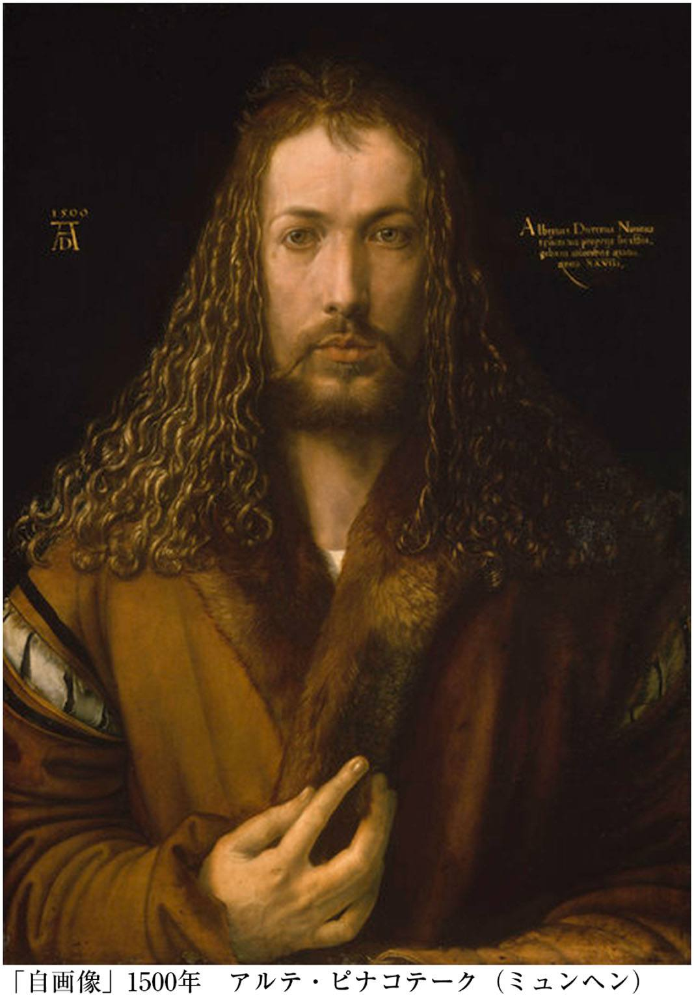
遺言としての自画像
実際、画の右上にはデューラーその人が「アルブレヒト・デューラー、ノリクム（南ドイツ地方）人、不朽の色彩で自らを描く、二八歳」と書き込んでいるのですから、自画像は画家としての強烈な自己宣言だったと言えます。そのことを明確に示すのが、胸のあたりに突き出すように添えられている、細く長い、芸術家らしい繊細な右手です。デューラーは右利きですから、絵筆をとる手です。その右手は、彼の芸術家としての自負を物語っているようでした。
しかも印象深いことに、彼が毛皮のついた茶色いガウンのようなものをまとい、イエス・キリストを思わせるような美しく波打った長い巻き毛を肩にたらして、何とも言えない透き通った瞳でこちらを見据えているのです。ただ、よく見ると、右目はやや下を向き、悲しみで潤んでいるような感じがします。決然とした画家としてのマニフェストである自画像が、同時に憂いと慈しみにあふれたまなざしをしていることに、わたしは強く引きつけられました。彼は、生前、この自画像を世に出そうとは思わず、亡くなった後に、ニュルンベルクの市庁舎に飾って欲しいと願っていたようです。ということは、この自画像は、デューラーの遺言のような絵だったのではないでしょうか。
わたしとほぼ同じ歳で、遺言のように描いた自画像。
そこには、彼の見栄も、強烈な自我も、悲しみも喜びも、そして俗っぽさも神々しさも、すべてが表現されているのです。何と早熟で、そして人生の深淵を見つめているような憂いのまなざしであることか。そこには、すべてを受け入れ、決然として立とうとする矜 持 のようなものがあふれていました。
自画像は、鏡に映った自分の姿を描いたものです。デューラーも鏡を使ったはずですが、絵は左右対称に描かれているのではなく、少し左右がズレているような形で、鏡を見て描くには難しいポーズになっています。そのズレにわたしは、デューラーの強い自意識を感じるのです。
鏡と言えば、痘痕 に悩み、自分の顔にコンプレックスを抱いていたらしい夏目漱石（一八六七―一九一六）は、『吾輩は猫である』の中で猫に「鏡は己 惚 の醸造器」であるだけでなく、「自慢の消毒器」でもあると語らせていますが、己の姿が映ったデューラーの鏡は、己惚の醸造器でもなければ、自慢の消毒器でもなく、自分を超えていくような自意識を映し出しているように思えます。その姿を描いているからこそ、デューラーの自画像は、これほどに深い感動を与えるのではないでしょうか。
そこには、運命的なものを受け入れ、それでも自分が何者であり、何をなさなければならないのか、深く自覚した者ならではの姿が映し出されているのです。
＊この続きは製品版でお楽しみください。
集英社ｅ新書
【カラー版】あなたは誰？ 私はここにいる
姜尚中
【電子特別版・カラー画像多数収録！】伊集院静氏、落合恵子氏、千住博氏推薦！ ドイツ留学中の著者は、500 年前のデューラーの＜自画像＞から啓示を受けた。「私はここにいる。お前はどこに立っている？」。絵の中の同じ28 歳の男は、鬱々とした内面の森をさ迷う在日の青年に、宿命との対峙を突きつけたのだ。30 年後、人気美術番組の司会を務めた著者は、古今東西の絵画や彫刻の魅力を次々に再発見していく。ベラスケス、マネ、クリムト、ゴーギャン、ブリューゲル、ミレー、若冲、沈寿官――。本書は「美術本」的な装いの「自己内対話」の記録であり、現代の祈りと再生への道筋を標した人生哲学の書でもある。
※紙の書籍で収録されている画像は、一部収録されておりません。
私は子供のころから、「リーダー」というものが根本的に向いていない性格でした。もっと正確に言うと、そうなりたいと憧れながら、どうしてもなれない性格だった、と言いましょうか。
思春期以降はややひきこもりがちだったのですが、それ以前は、わんぱくだったし、成績もそれほど悪くなく、クラス委員に選ばれたり、野球のキャプテンをやったりと、目立つほうだったと思います。でも、どちらかというと、あまり度胸がなくて、怖がりな性格でした。そのくせ、内心、「リーダーみたいな子」がかっこいいとも思っていたから、始末が悪かった。「しのぐ」ことさえできれば、目立つ場面に立たされてもそう悪い気はしないという、きわめて中途半端なところに位置していたように思います。無意識のうちに、本当の自分に「蓋 」をしていたのかもしれません。
そんな幻想が打ち砕かれたのは、小学校六年生のある日のことでした。隣町の小学校の悪ガキグループとの間に、「決闘」騒ぎのようなことが起こったのです。私の仲間が彼らの「縄張り」とは知らずに、公園内の池で調子にのってふざけ騒いでいたために、「いついつ、どこに来い」というような呼び出しをくらい、何を買いかぶられたのか、仲裁役として私が引っ張り出されることになったのです。
とんだ役回りになったと、内心困り果ててしまいました。喧 嘩 などは大の苦手ですから、震え上がっていました。しかし、妙な義理がたさと見栄っぱりとがあって、いやだと言うこともできない。しかたなく、乞われるままに決闘の場所に行ったのですが、あのときの緊張は、いまでも忘れることができません。
結局どうなったかといいますと、もともとたいした意味もないイチャモンだったのでしょう、結局、相手が現れなかったのです。心の中ではヘナヘナと力が抜けるくらいホッとしました。しかし、そうなったらなったで、子供というのは図に乗るものです。気勢をぶちあげて、帰ってきたのでした。
しかし、意気揚々と引きあげながら、私は胸の中で、見たくなかった自分をまともに見せつけられ、ちょっとショックでした。
何だ、自分はこんなに臆病なヤツだったのか。ただ虚勢を張るだけの「お調子者」じゃないか。
空しい風がひゅるる、とふき抜けたひと時でした。
というわけで、本書は、言ってみれば、「リーダーになれない人間」によるリーダーシップ論ということになります。
私が「自分はリーダーに向いてない」と言うと、「ええ？ そんなことないでしょう」などと反論されることがあります。おそらくテレビなどでの露出度が高く、それなりの「慣れ」でアガりもせずにしゃべることができるため、そんなふうに見られるのでしょう。でも、いま言ったように、本来的な資質はそうではないのです。
それが証拠に、本書の第二章の、リーダーになるために不可欠な「七つのリーダー・パワー」に基づいてセルフチェックしてみると、自信を持って○にできるものは、二つしかありません。
七つのリーダー・パワーとは、すなわち、「先見力」「目標設定力」「動員力」「コミュニケーション力」「マネジメント力」「判断力」「決断力」です。このうち、自信を持って○にしてもいいと思うのは、「先見力」と「判断力」だけです。とくに、私は計画性や管理能力に乏しいので、「マネジメント力」などはからきしダメです。リーダーシップにとってもっとも重要な「決断力」も、先ほどの話のように胆力に欠けているので、×だと思います。してみると、百点満点でいえば、さしずめ三十点といったところでしょう。ひどい劣等生です。
では、このようにリーダー不適格ともいえる私が、なぜリーダーシップについて語るのでしょうか。
その答えは、詭 弁 のようですが、そこにこそ案外大きな意味があるのではないかと思うからです。というのも、リーダーそのものと、リーダーシップについて語る人間とは別物なのです。それは、『君主論』を書いた、あのマキアヴェリ以来の伝統ではないかとさえ思います。つまり、私は、古今東西、「リーダーシップ論」というのは、リーダーシップの死活的な重大さに気づきながらも、当のリーダーになる力はない人間が、「観察者」として、非常なる情熱を持って理論を探究したものではないか、と考えるのです。
よく、「中に入るとものが見えなくなる」とか、「客観的にとらえるためには傍観者であれ」とか言われますが、それに似ていないでもありません。
私は三十点の劣等生だと言いましたが、失礼ながら、マキアヴェリだってリーダーそのものとして採点したら、案外似たような点数だったのではないでしょうか。だからこそ彼も、一抹の劣等感を熱烈な分析魂に置き換えるがごとく、指導者論に取り組んだのではないかと思うのです。
本文でも述べますが、いま、時代は大きな転換期にさしかかっています。経済の世界では従来の方程式が崩れ、新しいビジネスモデルが模索されつつあります。政治の状況も、かつてない転換期にさしかかっています。いろいろな意味で、非常に難しい時代に突入したことは疑いありません。だからこそ、いま、「リーダーシップ」というものに、各方面から注目が集まっているのです。
本書は、一般の読者にこの問題を身近に――というよりも自分の問題として――考えていただくために書いた本ですから、堅苦しく考えず、気になったところから読んでみてください。とりあえず、私が二つしか○をつけられなかった「七つのリーダー・パワー」のセルフチェックから始めてみる、なんていうのは、いかがでしょうか。
＊
なお、二〇〇九年八月十八日、このリーダーシップ論を書くきっかけとなった金 大 中 元韓国大統領が逝去されました。謹んで哀悼の意を表するとともに、本書を、二十世紀のアジアを代表するリーダー金大中氏のために捧げたいと思います。
――そろそろ、ニュー・モデル
第一章 カギは「半歩前」だ――そろそろ、ニュー・モデル
個人の「自由」を追求する風潮が、やや様変わりして、
「リーダーシップ」が時代のキーワードになりつつあります。
閉塞した、未来の見えにくい世の中だからこそ、
優れた指導者が求められているのでしょう。
私は尊敬する金大中元韓国大統領から、
リーダーシップに関する大きなヒントをもらいました。
それは、人びとの「半歩前」を行くということ。
柔軟な歴史の知恵を具 えたリーダーが、いま、待望されています。
「司令官」でもない。
「リーダー」という言葉を口にするとき、みなさんはどのような人物を思い描くでしょうか。
まずイメージするのは、いわゆる「カリスマ」と呼ばれる人たちではないかと思います。たとえば、レーニンや、毛沢東、チェ・ゲバラ......。あるいはヒトラーやスターリンといった独裁者を思い描く人もいるかもしれません。さらにインドのガンジーやチベットのダライ・ラマ十四世などを連想する人もいるでしょう。日本で言えば、織田信長あたりでしょうか。要するに、革命家とか独裁者とか、あるいは独立運動の指導者などと呼ばれている人びとです。
「カリスマ」というのはもともと宗教用語で「神の賜 」を意味し、転じて超自然的な力や天賦の才を意味するようになったようです。世界の歴史を眺めると、数は少ないながら、たしかにそういう異能を持って生まれてきた人がいます。
カリスマ的な力は、リーダーシップにおける重要な要素の一つではあります。でも、私がこの本で取り上げたいのは、そういう特殊な人のことではありません。
また、「リーダー」と言うと、みなさんは、民衆をぐいぐい引っ張って統率していくような人を思い描くのではないでしょうか。
それも、ゆえなきことではありません。というのも、〝leader（リーダー）〟というのは、もともと〝commander（コマンダー）〟を意味していたらしいからです。コマンダーとは「司令官」、すなわち軍隊を動かす人です。生死を分かつような状況の中で、兵士に命令を与え、戦 を勝利に導く。そんなヒーローのイメージです。
でも、私がとりあげたいのは、そのようなマッチョなリーダーのことでもありません。もっと「現実的なリーダー」の話をしようとしているのです。
ときおり、「リーダーとは、民度のバロメーターだ」と言われることがあります。この言い方は、正しいと思います。リーダーというのは、その共同体の民度や文化の水準を反映して登場してきます。リーダーと民衆の間にケタ違いの格差があったら、ぜったいにうまくいきません。
たとえばチェ・ゲバラは、コンゴやボリビアといった外国へ革命指導者として出かけていきました。が、晩年の彼は民衆のレベルの低さにいらだち、民衆のほうも彼についていくことができませんでした。そのような民度を反映していないリーダーシップというのは、うまくいかないのです。
企業組織でもそうです。どの会社もそれぞれ、長い時間の中で培われてきた伝統や規範のようなものを持っています。その中から、リーダーが登場してくるのが理想です。外からいきなり天下り社長やヘッドハンティングされた部長がやってきても、社員はついていけません。当たり前のことです。
＊この続きは製品版でお楽しみください。
集英社ｅ新書
リーダーは半歩前を歩け ――金大中というヒント
姜尚中
政治も経済も未曾有の混迷期にある現在、私たちは「リーダーシップ」という古くて新しい問題を、問い直す必要がある。安全保障の激変期における政治家とは？ 金融崩壊後の市場で持続可能な成長を実現し得る経営者とは？ 明確なビジョンを示す上司とは？ 本書は、古今東西の政治家や歴代の日本の首相に言及しつつ、悩める時代を突き抜ける「７つのリーダー・パワー」を提言する。韓国元大統領にしてノーベル平和賞を受賞した金大中氏との対談も収録。指導者不在が叫ばれる日本社会で、現代を代表する政治学者が思い描く、理想のリーダー像とは？
増補版・序文
「終わり」のはじまり――二〇〇四年～〇六年の危機を越えて
二〇〇七年二月一三日、六者協議は、やっと共同文書の採択にこぎ着けることになった。
思えば、二〇〇五年九月一九日の第四回六者協議の共同声明から、実に約一年半近く、北朝鮮をめぐる情勢は悪化の一途を辿り、「朝鮮有事」が現実味を帯びる危機の連続だった。
とくに、二〇〇六年一〇月九日に核兵器の実験を実施したという北朝鮮の発表は、世界を震撼させた。これに対して、国連憲章第七章第四一条に基づく制裁措置（安保理決議第１７１８号）が発表され、日米協力による海上臨検の可能性すら浮上し、有事は避けられないという雰囲気が漂っていた。
ここに至り、多国間協議による北朝鮮危機の解決を図るとともに、東北アジアの平和と安定のメカニズム構築を提言してきた本書は、お目出度い理想論の類として消えゆく運命にあるかのように思われたに違いない。
だが、本年一月の米朝二国によるベルリン会談以後、急速に両国の接近が実現し、冒頭の共同文書の採択が実現したのである。それがどんな意味をもっているのか、この点については本書の「結びにかえて」で具体的に取り上げることにしたい。
ここで触れておきたいのは、日本の中の対北朝鮮強硬論が、なぜ事実上破綻せざるをえなくなったかということである。
日本国内には、米朝接近に強い不快感を露わにし、「初期段階の措置」に関する共同声明を「茶番」と揶 揄 する論調が依然根強い。共同声明では「拉致問題」への具体的な言及がなく、日朝国交正常化のための作業部会が明示されているだけにとどまっているからである。
しかも、米朝正常化が、日朝正常化を出し抜いて先に進む可能性も否定できず、米国の強硬姿勢を拠り所に北朝鮮への圧力を強めようとしてきた対北朝鮮政策そのものに赤信号が灯 り始めている。
さらに「初期段階の措置」以後、日本が「拉致問題」をタテに北朝鮮に対する九五万トンの重油提供に加わらないとすれば、日本の「孤立化」さえ危惧されるのだ。
この事態を避けるためには、日朝作業部会で「拉致問題」解決に何らかの進展がなければならない。その重要なテコは、米朝国交正常化の作業部会で、「拉致問題」解決をテロ支援国家指定の解除と結びつけ、北朝鮮に「拉致問題」解決に向けた柔軟な対応を迫ることである。
しかし、共同声明には、原則としてある作業部会の進 捗 が他の作業部会の進捗に影響を及ぼしてはならないと明示されている以上、そのような「拉致問題」解決の方針に明確な展望があるわけではない。
このようにみれば、対北朝鮮強硬論が、現実の展開とともに行き詰まりつつあることは明らかである。
その理由は三つある。
第一に、「拉致問題」解決に向けて北朝鮮に政策的な転換を迫ることと、北朝鮮の体制転換を図ることを事実上同じことと考え、「拉致問題」という人道上の問題を、戦争や平和にかかわる国際政治上の問題と結びつけてしまったために、硬直した原則論に陥ってしまった。
第二に、第一の目的を達成するために、米国内のネオコン（新保守主義者）の力を頼みにした点である。イラク戦争の失敗と米国議会内の民主党の勢力挽回とともにブッシュ政権の対北朝鮮政策も転換を余儀なくされ、ネオコンの影響力は著しく退潮することになった。ブッシュ政権が、単独行動主義から多国間協調主義へ舵を切り、六者協議はより重要な問題解決の切り札として浮上するようになったのである。
第三に、日本国内の対北朝鮮強硬派の人々の中には、「北朝鮮問題」の背景に冷戦下の半世紀余りにおよぶ米朝間の確執の歴史があることが、すっぽりと抜け落ちていることである。「北朝鮮危機」の本質が、朝鮮戦争以来の米朝対立にあることが理解できるならば、米朝交渉を核とする周辺諸国間の宥 和 こそ、危機を平和的に収束させるもっとも望ましい選択であることがわかるはずだ。六者協議とその共同文書は、このような和解への道筋の第一歩を示した画期的な合意として高く評価されるべきである。
本書が、六者協議の新たな進展とともに増補版として日の目を見ることになったのは、このような行き詰まりを打開する道筋を、すでに二〇〇三年の時点で明らかにしていたからであると自負している。
六者協議の進捗は、今後紆余曲折が予想されるとしても、確実に「北朝鮮問題」の終わりを、したがって朝鮮半島における冷戦と分断の時代の終わりを告げることになるに違いない。今まさしく終わりの始まりの第一歩が印されようとしているのである。
ただしそれは、決して独裁的な国家社会主義体制の延命を意味しているわけではない。むしろ逆に、そのような旧体制をそのまま温存させるのか、それとも正常化を通じて改革・開放を成し遂げるのか、このギリギリの二者択一の前に北朝鮮が立たされることを意味しているのである。その意味では、異様な専制的社会主義の終わりの始まりでもあるのだ。
この「歴史の狡智」を見定めることができるならば、「拉致問題」の早期解決には、日朝国交正常化が不可欠なのだ。
本書を通じて以上のような見解の真意を理解していただければ望外の喜びである。
なお、特に「序章」と「終章」については、二〇〇三年五月という状況に即した記述が散見されるが、論旨の骨格や方向性は四年後の現在でも十分有効であると判断し、最低限の加筆修正を除いて、あえて発表時のママとした。
また、二〇〇七年以後を見据える政治構想については、本書初版のあとがきにかえて掲載した「『東北アジア』から『東アジア・フォーラム』への道」の中で、詳細に展開した。
序 章
なぜ国交正常化交渉が必要なのか
▼迫りくる本質的な危機――日朝国交正常化交渉途絶がもたらす危険なシナリオ
北朝鮮（朝鮮民主主義人民共和国）がこれほどメディアを賑わしたことはない。
書店に平積みにされた「北朝鮮本」から新聞、週刊誌、月刊誌、さらにはテレビにいたるまで、連日、「北朝鮮」がメディアに氾濫している。嘘つき、拉致、地獄、悪魔、餓死、拷問、独裁、奴隷船、はては美女軍団にいたるまで、恐怖と蔑視、嫌悪と嘲笑のいりまじった煽情的な言葉が躍っている。
いまや、北朝鮮という国家は、この世の「絶対悪」の化身とみなされているのである。内部に底知れない闇と貧困を抱え、洗脳の結果、滑稽な操り人形のように「偉大なる将軍様」を崇拝する時代錯誤的な国家。信じられないような現代の「秘境」。邪悪で凶暴なテロリスト国家。それが北朝鮮の正体だというわけである。たとえて言えば、北朝鮮のイメージは、市民に対して無差別にサリンをばらまいたオウム真理教団をより巨大にしたようなものである。
それにしても、これほどまでに画一的なネガティヴ・イメージで塗り固められた国家は他になかったのではないか。
北朝鮮が「絶対悪」の化身である以上、それに少しでも譲歩したり、対等な交渉の相手とみなしたりすれば、「国賊」として罵 られるばかりか、道徳的にも「外道」扱いされかねないほどである。しかし、その結果どうなったか。
北朝鮮は、使用済み核燃料棒の封印を解いて、ＮＰＴ（核不拡散条約）から脱退し、核による危険な瀬戸際外交に打って出ようとしているのである。いまや、「拉致問題」がかすんでしまうほど朝鮮半島をめぐる危機のボルテージは昂進しつつあり、武力衝突さえも危惧されている。そんなことになれば、「拉致問題」の解決はおろか、日本の安全すらも脅威にさらされるはずだ。
いや、そうした「脅し」にのることが、北朝鮮の思うツボではないか。そんな反論がありそうだ。しかし、無条件に核をはじめとする大量破壊兵器の廃棄を迫る米国と、不可侵条約による体制保障を要求する北朝鮮の両国は、スローモーションのように正面衝突のコースを歩みつつあり、偶発的な事件をきっかけに最悪の事態に突入しかねないのである。
なぜそのような危険なシナリオに向かおうとしているのか。
一つには、「悪の枢軸」の体制転覆もいとわない米国の予防的な先制攻撃の脅威が、北朝鮮側の危機を煽っているからである。他方、核やミサイルなどの破壊的な兵器を対米交渉の手段とせざるをえない北朝鮮のジレンマが危機を増幅させている。
体制存続の保障を米朝二国間関係に絞り込んだ北朝鮮の瀬戸際外交は、取返しがつかない破局へのプレリュードになりかねないのだ。つまり、「帝国」的な超大国と貧弱な「残存社会主義国家」との圧倒的な非対称性を、破壊的な手段によって挽回しようとする北朝鮮の危険な賭けは、破局的な螺旋階段を昇りつめようとしているのである。このような硬直した対応策しか北朝鮮に残されていないのは、日朝国交正常化交渉が途絶したからである。少なくともそれが理由の一つになっている。
▼北朝鮮は、アメリカとの関係正常化を切望している
もし日朝交渉に弾みがつき、国交正常化の見通しが立っていたとしたら、いまごろどうなっていただろう。
南北関係と日朝関係が並行して進展し、日・韓・中・ロなど、周辺諸国との関係正常化が達成され、クリントン政権末期のような米朝交渉が再現されていた公算が強い。東北アジアにおける米国の同盟国である韓国と日本が、ともに北朝鮮と関係正常化に向かいつつあるときに、米国といえどもそれに逆行するような対決姿勢を打ち出すことはできないからである。
経済が破綻し、内部崩壊の崖っぷちに立たされている北朝鮮は、核開発や新しいミサイルの発射実験を強行しようとしているといった観測がなされている。北朝鮮はすでに核爆弾を二、三個保有しているという米情報機関の報告もある。しかし、本格的な核査察が実施されていない以上、その真偽は定かではない。
ただ、はっきりしていることは、南北首脳会談や日朝首脳会談でもわかる通り、北朝鮮が、とにもかくにも平和的な交渉を通じて敵対していた周辺諸国との関係正常化を望んでいることである。日朝首脳会談で金 正 日 国防委員長自ら「拉致」を告白し、謝罪するといった異例の行動に出たのも、日朝関係の正常化を第一歩に、最終的に「本丸」の米国との関係正常化にこぎ着けたいと願っていたからである。
だが、「本丸」に通じるはずの日本という「関門」は閉ざされ、その結果、北朝鮮は、対米交渉ではより強硬な瀬戸際作戦に打って出ざるをえなくなったのである。もっとも、その核開発でさえ、米国から不可侵条約を取り付けるための最後の手段だとすれば、条約が締結されれば、北朝鮮が核査察に応じ、核開発を放棄することは予想されないわけではない。
客観的にみて北朝鮮が武力で問題を解決できる条件は皆無であり、実際、朝鮮戦争以後、武装ゲリラの派遣や拉致、テロなどはあっても、積極的な武力行使の素振りをみせたことはないのである。とすれば、軍事的な衝突は、米国の武力制裁の動きと関連して起こるだけである。
米国が予防的な先制攻撃を辞さないとわかれば、自ずから、北朝鮮も先制攻撃の誘惑に駆られるだろう。
▼もはや日朝二国間だけの問題ではない――岐路に立つ東北アジア全域の平和秩序
このようにより大きな悲惨が危惧されるにもかかわらず、「原則」を曲げるな、もっと締め上げれば向こうは折れてくる、金正日体制を打倒しなければダメだ、などという「極論」が「正論」としてまかり通っている。
その勢いに押されて交渉の窓口は閉ざされ、外交は機能不全で身動きがとれないまま、危機のボルテージは高まるばかりだ。帰国した五人の拉致被害者と北朝鮮に残る家族との再会もままならず、安全保障の危機はますます広がろうとしている。
その危機が、韓国は言うにおよばず、国境を接する中国やロシア極東部にまで拡散しかねない以上、日朝交渉はもはや日朝二国間だけの問題にとどまらなくなっている。ましてや、日本の国家的な威信やメンツの問題ではすまなくなっているのだ。それには朝鮮半島、さらには日本を含めた東北アジアの平和と安定がかかっているのである。
にもかかわらず、多くのメディアは相変わらず「北朝鮮」を貪欲に消費し、金正日体制打倒のスローガンや崩壊説がまことしやかに囁かれている。誤解をおそれずに言えば、「平和ボケ」とはこのことを言うのではないか。
「金王朝を打倒せよ」という勇ましい「暴論」も、それがどんな惨禍をもたらすのか、具体的に想像してみればいい。
北朝鮮と韓国の共倒れは必至であり、日本列島のうち九州や日本海側の地域も重大な脅威にさらされるに違いない。そして何よりも膨大な数の難民や被災者が中朝国境に溢れ出し、その一部は日本にも押し寄せてくるはずだ。まさしく東北アジア全域は、統制の利かない混乱の極みに突き落とされ、回復不可能なほどの大打撃を被ることになるだろう。このような空恐ろしいシナリオに、金正日体制の瓦解、打倒を叫ぶ人々は、ほとんど為す術 がないのではないか。
日米安保体制をより強化し、有事法制を整え、集団的自衛権を行使して、場合によっては平 壌 を叩けばいい。そんなまっとうな軍事戦略をも無視した何でもありの「空論」しか思いつかないのではないか。わたしは彼らの主張のなかに、抑制の利いた、パワー・ポリティクス（権力政治）的なリアリズムの欠片 も見いだせないのだ。
にもかかわらず、そのような夜郎自大的な「極論」や「暴論」が、北朝鮮のネガティヴ・イメージの氾濫と、「親北朝鮮」的な人士やメディアに対する凄まじいバッシングのなかであたかも「正論」のようにまかり通ろうとしている。
▼北朝鮮側から見た風景――前線の要塞基地のような日本列島
もとより、強力な独裁体制のもとに軍事偏重の特異な国家社会主義を発達させ、いびつな「兵営国家」と化した北朝鮮には、スターリン体制下のソ連や文革期の中国、さらにはポル・ポト支配下のカンボジアにおける抑圧や粛清といった、二〇世紀の現存社会主義の悪夢が再現されている公算が強い。
また、北朝鮮がその存在を認めたとされる濃縮ウランによる核開発のプログラムは、明らかに米朝枠組み合意や、ＮＰＴやＩＡＥＡ（国際原子力機関）の保障協定、さらには南北間の非核化宣言に対する違反行為であり、しかもそれがブッシュ政権による「悪の枢軸」発言の前から始まっていたとすると、北朝鮮に対する不信感は深まるばかりである。
実際、米国の政権や議会、それに各メディアでは、北朝鮮は本格的な核武装の準備にすべてを賭けるつもりではないか、といった見解が優勢になりつつある。日本でもそれに輪をかけた憶測が勢いづき、先の「暴論」に拍車をかけているのである。
しかし、不審船や諸々の工作、そして拉致や濃縮ウランによる核開発プログラムの露見など、「クロ」と認定される不法行為を積み重ねてきたからといって、北朝鮮の行動、あるいは北朝鮮という国家の存在そのものをすべて「クロ」と断定してもいい、ということになるだろうか。
そのような性急な断定をくだす前に、一度は双方のパーセプション・ギャップ（認識の食い違い）を考えてみるべきではないだろうか。そのために、簡単なことだが、試しに日本を中心とする周辺地図をさかさまにして見てほしい。そうすれば、日本側から見ると、列島の無防備な部分に対して腕のように突き出された朝鮮半島が、逆に、前線の要塞基地のような日本列島（現に米軍基地が存在している）によってぐるりと囲まれた地域のように見えるはずである。
米ソを中心とするヨーロッパ冷戦の終焉以後、旧ソ連の後ろ盾を失い、中国とも溝のある北朝鮮は、経済力、軍事力でも優位に立つ韓国と対峙し、そして唯一の超大国・米国と旧宗主国であり世界第二位の経済力をもつ日本との軍事同盟（安保条約）によって封じ込められてきた。
北朝鮮側には、少なくともそのような閉塞感が漂っていたはずだ。
しかも、北朝鮮は、一九九五年前後から、自然災害にともなう農業の不振と深刻な経済危機に悩まされ、相当数の餓死者と脱北者を出すまでに疲弊しているのである。
そのように見れば、核開発やミサイル装備は、米国の敵視政策と軍事的脅威に対処する自衛措置であり、日本に対する工作は、米軍基地を置く敵対的な前線基地に対する介入ということになるだろう。
もちろん、こんな行動は断じて許されない。しかし、なぜそのようなパーセプション・ギャップが生じてしまったのか。しかも、日朝間にどうして半世紀余りにわたって「異常な」関係が続き、そのギャップを埋める働きかけがなかったのか。このことを一度は真剣に考えてみるべきである。そうすれば、そのような正常ではない関係が、東北アジア地域における冷戦体制に起因していることがわかるはずである。
＊この続きは製品版でお楽しみください。
集英社ｅ新書
増補版 日朝関係の克服 ――最後の冷戦地帯と六者協議
姜尚中
２００３年５月、北朝鮮問題の根本的な解決をめざして、本書は刊行された。六者協議の枠組みを具体的に提示した内容は、驚くほどに予言的なものを含んでいたが、対北朝鮮強硬論の盛り上がりと、ミサイル実験や核開発騒ぎの中で、多くの誹謗中傷に曝されつづけてきたこともまた事実だった。しかし、２００７年１月の米朝二国によるベルリン会談以後、歴史の歯車はついに著者の思い描いた方向に動きはじめた――。現代を代表する政治学者の野心作を四年ぶりにリニューアル。冷戦終結のカウント・ダウンが、いま始まった！
まえがき
たとえば、あなたの上司や顧客、先輩が、何かの拍子に次のような話をしだしたらどうするでしょうか。
「北朝鮮が核を持つんだったら、日本が核を持つのは当然だ。自分の国は自分で守らなきゃいかん。第一、中国やロシアだって核保有国なんだ。あいつらになめられてたまるか、なぁ君」
たしかに、ひとときの茶飲み話や余興の席であれば、適当に相 槌 を打ってその場をやり過ごすことはできるかもしれません。意気投合するような人は別ですが、格段そこまで「確信犯」的な核保有論者でもなく、どちらかというと、そんなことをすればかえって危険きわまりないと考えている人なら、釈然としないまま、何とかやり過ごすことを考えるでしょう。
でも相手がしつっこくこちらの意見を聞きたがり、抜き差しならないほど執 拗 だとしたら......。しかも、その返答次第で、決定的に気まずくなりかねない雰囲気だとしたら、いったいどうすればいいのでしょうか。
もしかすると、多くのサラリーマンやＯＬあるいは学生たちの中に、このようなことで困ったという経験をした人はいないでしょうか。宗教や民族、政治や安全保障の問題などは、ビジネスや仲良しグループの世界ではどちらかというと事実上「タブー」のような扱いを受けてきました。そんな話題を熱心に持ち出せば、場が白けるので敬遠するに限る、そんな暗黙の了解が成り立っていたのです。
しかし、どうも最近はそうではなさそうです。黒か白か、自分の立場をハッキリさせなければならないことが多くなっているのではないでしょうか。そんなとき、作り笑いを浮かべて、ただ相槌を打つだけでは、かえって相手に足元を見透かされ、むしろ軽薄なヤツだと軽んじられてしまうかもしれません。
といって、自分が普段思っている「異論」をまくし立てるだけでは、気まずくなるだけです。それがキッカケで、それこそ思わぬ不利益を被ることにもなりかねません。
ではどうしたらいいのでしょうか。
逃げず、しかし頑 にならず、しなやかに対応する手立てはないのでしょうか。
本書では、そのような手立てとなるヒントをいくつかのテーマに即して考えてみました。仕事や友人、恋愛やお金、さらに国際政治のトピックなど、盛りだくさんですが、さまざまな手立てを考え、それを生かしていくことで、この国でしたたかに、そしてしなやかに生き残っていく方法を分かち合えれば。これが本書の狙いです。
もっとも、方法といっても、単なる「ハウ・ツー」もので終わるわけではありません。なぜなら、方法は、じつは「どう生きるのか」という価値の問題と密接に結びついているからです。逃げず、そして流されることもなく、この息苦しい社会で「まとも」に生き残る道はあるのでしょうか。この問いは自ずから、何を求めるべき価値と見なすのか、それは何によって実現されるのか、そのために何をしなければならないのか、こうした一連の問題提起につながっていくはずです。本書を通じてそれらに向き合い、この国で「まとも」に生き残っていけるヒントを探し出してほしいと思います。
第一章 「お金」を持っている人が勝ちですか？
よくも悪くも、ＩＴ長者たちの存在が際立っていたここ数年。莫大なお金を手にして、ゴージャスに暮らす〝勝ち組〟に対して、世の中の反応はさまざまだ。「人生、お金だけじゃない」と反発を感じる人がいる一方、「やっぱり〝負け組〟にはなりたくない」と心配する意見も。いったいこの世の中、「お金」というものと、どうつき合っていったらいいのだろう。
みんなの声 「お金」について
■物欲が止まりません。買い物をすると楽しいし、気分がスッキリするし、雑誌とか見ているとあれもこれも欲しくなります。結婚したら、これを我慢しなくちゃいけないのかと思うと、とうぶん結婚できそうにありません。
（28 歳・会社員・女性）
■お金を持っている人が勝ちだと思う。今の日本の社会をみていると、それは否定できない。
（18 歳・学生・男性）
■欲しいものがたくさんあるので、キャバクラでバイトを始めた。欲しいものを自分で買うためだから、悪いことだとは思わない。親や彼氏に買ってもらっている子よりマシ。
（18 歳・大学生・女性）
■女子アナになって、ＩＴ社長と結婚して、六本木ヒルズに住むのが今の夢。かなわないとわかっているけど。
（20 歳・大学生・女性）
■お金は必要だが、持ったまま、あの世には行けないので、人のためになる使い方が必要だと思う。
（27 歳・調理師・男性）
■金があればなんでもできるが、金を得るためには何かをなくさないといけない。少し遊べる程度のお金があれば幸せ。小金持ちになりたい。
（40 歳・サービス業・男性）
■お金はあるに越したことはないけれど、ヘタにたくさん持っていると気持ちがすさんでしまう気がして怖い。だから比較的裕福な程度で、平凡に暮らすのがいちばんですよね。
（28 歳・団体職員・男性）
■贅沢は敵、とかいうけど、贅沢しないとわからない食べ物の味とか、芸術の真価ってあると思う。回転寿司ばかり食べている人には、本当にお寿司の味がわからないように。やっぱり贅沢も必要なのでは？
（40 歳・自営業・女性）
■前職ではお金入るが、残業も多かった。それがイヤで転職したが、今の職業は残業は少ないものの、手当はほとんどつかず、さらに結婚したため、生活は苦しくなった。やっぱりお金は大切だと今さらながら思う。
（29 歳・教育・男性）
■日本の女性は物欲が強すぎる。高校のとき、イギリスに留学したが、イギリスの高校生はブランドものなんか持ってなかった。どうして日本人はそうなっちゃったんでしょう？
（28 歳・フリーター・女性）
■お金が絶対的な尺度だとは思わないが、人の能力を測る上で有効な手段だと思う。
（36 歳・建設会社・男性）
■大金持ちの夫婦が何億円も寄付したというニュースを見た。すごく立派なことだと思う。もし自分が同じ立場だったら同じことができただろうか？
（25 歳・保育士・女性）
■金銭的にも物質的にも豊かだけど、日本人は精神的にすさんでいる気がします。本当に豊かな社会って、どういう社会をいうんでしょう？
（38 歳・会社員・女性）
■お金がすべてとは思わない。南の島で自然に囲まれてゆっくり暮らすほうが、本当の贅沢だと思う。
（30 歳・会社員・男性）
■うちは両親と弟と一家四人暮らし。小さいマンション住まいだけど、みんな仲良しで楽しい家族です。お金持ちとはいえないけど満足しています。それで十分幸せ、と思う私ってしょぼい人間？
（18 歳・大学生・女性）
■お金では買えないもののほうが人生においては大切だと思う。お金がすべてになるのではなく、お金で買えないものこそ、大切にしていきたい。
（30 歳・無職・男性）
■お金は大事だが、心のゆとりや精神をみつめ直すことが、今の日本人には必要だと思う。
（28 歳・メーカー・男性）
■テレビで、あまり豊かではない国の暮らしぶりを見ると、「食べるために働く」ということが、とてもシンプルで幸せそうな生き方に見えます。でも、自分はもうあの生活には戻れない。だとしたらどこを目指せばいいの？
（33 歳・看護師・女性）
過剰富裕化社会になってしまった今の日本。
消費を通してしか自分を確かめられない時代。
恥ずかしながら、じつは私はお金に関しては疎いほうだと思います。節約家じゃないので、何だかバラバラと使ってしまうようです。学生や友人と飲み食いしたときに、すぐ私が払ってしまったりします。
考えてみれば、小さいころは比較的貧しかったのですが、両親のおかげで、食うや食わずという経験はありません。大学時代もたしかにアルバイトに奔走してはいましたが、本当の意味でお金に困った経験はありません。
だからお金に対して、あまり執着心がないのかもしれません。一泊何万円もするホテルに泊まったり、ブランドものを買うよりも、「六者協議が成功した」という知らせを聞くほうが、私にとってはうれしい。そういう喜びは、お金では買えないものですから。
ただ一方で思うのは、やっぱり人間は『清貧の思想』だけでは生きていけないということです。ストイックに質素倹約を貫くだけでは生きていけない。お金はないよりはあったほうがいいと思うし、いい洋服を着て、ラグジュアリーな家に住みたいと、やっぱり多くの人は思っているでしょう。
じつは五〇歳で免許を取って、初めて車の楽しさを知りました。ドライブしながら、個室の中の自由というものを知りました。最近、無理をして外車を買いました。
昔だったら、そういう贅 沢 を自分に許さなかったかもしれない。でも、最近は自分の欲望に正直でいたいと思うようになりました。だからブランドものを必死で買っている人たちを否定しようとは思いません。もちろん「人生は金」とは思わないけれど、〝清貧の思想〟でもない。その中間点にお金のあり方があるのではないかと思っています。
日本人のお金に対する意識が大きく変わったのは、やはりバブル時代でしょう。それまでの日本人には、消費についてストイックな考え方がありました。質素倹約こそが善であると考える人が多かったと思います。
七〇年代初めはブランド品をまとっている女性なんて、ほんの一握りしかいませんでした。それが跋 扈 するようになったのは七〇年代の終わりごろからです。そして八〇年代、バブルの絶頂期に、そのタガがはずれたのだと思います。
海外に行くと、ブランド店にむらがる日本人女性の姿をよく目にします。そこには質素倹約の美徳はありませんよね。今の若い世代の人たちはたくさん消費したいと思っているはずです。いいものが欲しいと思い、そのために必要なら何でもやるのではないでしょうか。
以前、話題になった援助交際もそのひとつだし、〈みんなの声〉にもあったキャバクラのアルバイトもそうですよね。消費のためのお金を稼ぐことが、ここ一〇〜二〇年で「解禁」になってしまった。何でそうなってしまったのか考えてみるべきですね。
ひとつは、日本が過剰富裕化社会になってしまった点にあると思います。今の若い世代は生まれたときから、ほとんどのものがそろっていますよね。親の世代が作り上げたあらゆるものやシステムの中で、暮らしています。そんな中で、自分たちはいったい何をクリエイトしたのかというと、ほとんど何もないのではないでしょうか。
かといって、今あるものを壊して新しいものを作るなんてことはできないし、そういう発想やパワーもみられないようです。何がやれるかというと、結局、消費が重要なようです。つまり消費によって自分のアイデンティティを確かめようとしているわけです。そのためにお金というものが介在することになります。今はそういう社会なのではないでしょうか。
消費行動を通じたアイデンティティの可能性は
ますます狭められていくのだと思います。
では、こういった状況はよくないことなのでしょうか。じつは社会学者の中には、消費社会を肯定的にみる人もいます。むしろそこに可能性があるのではないかと。
近代社会では、労働が尊いとされてきたわけです。生産に関わる価値において人間をみてきたのです。女性もそうです。子どもを何人産めるかということで、その人の価値が決定されていた。生産という価値を通じて、人の格付けが行われてきました。
ところがそうした産業社会が成熟してくると、チャップリンの『モダンタイムス』じゃないけれど、結局、労働が均質化されて、みんな社会の歯車になってしまう。それはおかしいのではないかという不満が出てくるようになりました。
ポスト産業社会ということがいわれるようになって、生産者に代わって、今度は消費者が主役になりました。なるほど実際にモノやサービスを作るわけじゃないけれど、消費者のニーズに合わせて、製品の性質やデザインが決定され、消費のニーズに柔軟に対応できるようになりました。そこで、消費者は単なる受け身ではないということになりました。
むしろ消費者のアイディアや感性の鋭さを求めることで、個性化や差異化が可能になるというわけです。日本の場合も、七〇年代の終わりごろから、急速にそういうアメリカ型の消費社会に変化していったわけです。
ただ、本当に消費行動を通じて、人々のアイデンティティが洗練されていくのかどうか、私はやや疑問に思っています。とくにバブル以降、消費をめぐる格差というのは歴然としていますよね。階層化が進みつつあります。そうするとセレブでない大多数の人は、満足できない状態に置かれ続けることになります。
だから消費を通じたアイデンティティを私はけっして否定はしないけれど、その客観的な可能性というのは、ますます狭められていくのだと思います。
じつはこうした消費社会は、韓国や中国のニューリッチたちも同じです。日本と同じようなブランド志向の強い購買パターンをとっています。私はアジア経済というのは、結局は成り上がりなんじゃないかと思います。急激に裕福になったことで、何か歯止めがきかなくなってしまうのです。
それに比べるとヨーロッパの人たちの金銭感覚はだいぶ違います。ヨーロッパに行くと、ときどき「どうしてこんなにケチなんだろう？」と思うときがありました。学生時代、私はドイツに留学していたのですが、すごいカルチャーショックを受けました。
電気をちょっとつけると、すぐ消してしまう。日本のように水が豊かじゃないこともありますが、シャワーも日本人の感覚で浴びていると、水の使いすぎだと苦情が来る始末でした。貧乏なわけではないのにケチなんです。
着ているものだって、ヨーロッパの若い人たちは身の丈にあったお金の中で工夫していますよね。パリジェンヌだって質素なものです。それでもスタイルがいいから様になってしまうけれど、ブランドに彩られている社会でないことは確かです。
結局、お金をどうやって儲けるかというノウハウはいろいろなところで教えてくれるけれど、私たちはお金の使い方を教わっていない、ということです。お金をどう使うのかは、その人の私的な趣味に任せられていて、手に入れたいものを手に入れるだけです。それが自由なのだと。でも、これからは、お金に対して、いろいろなスタンスの取り方が出てくるだろうし、お金の使い方ももっと多様になるのではないでしょうか。
新自由主義は自己責任、弱肉強食の社会です。
それで勝ち負けの格差がはっきりしてしまいました。
今、日本社会で起きている格差現象は、バブル時代とも、また違う次元のものだと思っています。バブル期にもある程度の差はありましたが、地方交付税とか補助金といった形で、ある種の富の再配分がなされていました。平均的に潤い、みんなが中流意識を持ち得た。そういう社会だったと思います。しかし現在は、勝ち組と負け組の格差が歴然と表れるようになりました。
このような格差が生まれたのは、新自由主義（ネオリベラリズム）という思想の影響が大きいでしょう。新自由主義とは経済的な自由競争を絶対視した市場至上主義で、規制を緩和することで、結果の平等より機会の平等を目指すという考え方です。八〇年代イギリスのサッチャー政権で政策として取り入れられて以来、今や世界中を席 捲 しています。
新自由主義は、国家の役割を縮小し、民間による効率やサービスの向上を目指すという点ではたしかに能率的です。しかし所得再配分のメカニズムを断ち切って、自由競争させることで、結果的に勝者と敗者を生み出してしまう。しかもそれはすべて自己責任であるとする弱肉強食の厳しい社会です。
とくに小泉政権になって、それが強く推し進められました。自己責任という名のもとに医療保険の負担は増え、労働市場の自由化という名のもとに、非正規雇用者、派遣労働が主流になってしまった。その一方で、超安定的な大企業のごくごく一部の人たちだけが、右肩上がりに所得を伸ばし、そうした勝ち組に対しては、国はどんどん障害を少なくして優遇することになりました。負け組はそのおこぼれにあずかって生きるしかないわけです。
今まで日本は〝一億総中流社会〟なんていわれてきたけれど、このままアメリカ型の市場原理主義でいけば、富裕層と低所得者層の二極化がさらに進んでいくことになるでしょう。
つまり、新自由主義が支配する社会では、まず、お金を持っている人が勝ちなのです。ヘンにオブラートに包んで、「そんなことはない」「いくらお金があっても人は幸せになれない」という人がいますが、現実的には、お金がものをいう社会になってしまっているのです。
さらにいうと、日本には膨大な借金がある。約八〇〇兆円の借金といっても、みんな実感がないと思うけれど、赤ちゃんを含め、ひとり頭約六〇〇万円くらいの借金です。これは若い世代にとって、ものすごい重圧になってくるはずです。
五年以内には、消費税が跳ね上がる可能性が高い。医療保険の自己負担はどんどん増え、年金だってどうなるかわかりません。そうなると低所得者層の人たちはたいへんです。病気をしても病院に行けない人が出てくることになります。正規雇用でなければ退職金もないし、家もなければ、資産もない。
去年、アメリカのニューオーリンズで大洪水の被害がありましたよね。あそこに取り残されたのは逃げるための車もない、避難場所も確保できないという、いわば下流社会の人たちでした。ニューオーリンズの場合は人種問題も絡んでいましたが、私はあれはけっして人ごとではないと思います。取り残された人々の姿が日本の下流社会の未来像とダブって、とても気が重くなりました。
そのような格差社会になったとき、困るのは貧乏な人たちだけじゃないでしょう。低所得者層が増加すれば社会は不安定になるし、犯罪が増える可能性があります。結局は富裕層の人たちにとっても生きづらい社会になるのです。
格差社会の影響は、子どもの教育にも大きく影を落としています。勉強さえすれば、誰でも同じように学校教育を受けられる、教育の機会は誰にでも平等にある、と言う人がいるけれど、それは建前で、そもそも親の年収が低ければ、受験競争に参加することさえできないのが現実です。
今、大学受験のために、小学生のときからいい塾や予備校に通わせると、数百万円はかかるといわれています。子どもを塾に通わせるだけの教育資本を親が持っているかどうかで、子どもの進路が決まってしまうわけです。
かつての日本は欧米と違い、階層の流動性が比較的高い社会、つまり階層の入れ代わりが比較的簡単な社会でした。しかし今や階層の固定化が進みつつあります。
こうした状況に直面したとき、みなさんがどういう行動を起こすか考えてみると、ふたつあります。まず、個人的な自己救済に走る場合。自分だけはせめて年収二〇〇万円以下にならないようにとお金儲けに必死にならざるを得ません。私の子どもだけは下流にならないようにと、焦って子どもに投資しようとするわけです。
もうひとつは、「やっぱりこういう社会ってヘンだよね」と同じような意見の人々と連帯して、知恵を出し合いながら社会を変えていこうとする場合。
結局、こういう格差社会を支えているのは前者の考え方です。格差が是正されないのは、前者の行動原理が大きな動機づけになっているからです。「自分だけは」「自分の家族だけは」という行動に走れば走るほど格差はなくならないでしょう。だから今、それがみなさんに問われているのです。自己救済に走るのか、もっと連帯を考えるのか。
しかし今の日本の社会では人と人との結びつきが弱い。たとえば電車で飛び込み自殺に遭って、交通機関が麻痺したりすると、多くの人々はきっと「迷惑だ」と言うでしょう。「どうせ死ぬなら、人に迷惑のかからない、ほかのところでやってくれ」と。これは今の社会全体の雰囲気を表しているのではないでしょうか。
不幸になる人は、不幸になるだけの理由がある。自己責任というわけです。いちいちそれに構ってはいられない、こんなムードが支配的です。このムードを変えていくには、個人の幸せの中に逃げ込むのでなく、もっと広い世界を見据え、横のつながりを求めていくことが必要です。そして分断から連帯へと、絆を深めていくしかありません。
＊この続きは製品版でお楽しみください。
集英社ｅ新書
ニッポン・サバイバル ――不確かな時代を生き抜く10 のヒント
姜尚中
いじめに苦しむ子どもたちは、悩みを抱えた大人たちなど、毎年、三万人以上が、自殺に追い込まれている。そして本当に怖いのは、この社会で共に生きる他者への無関心と、無慈悲さの蔓延だ。「悪人」だけが跋扈しているわけでもないのに、一体なぜなのか。また、相談機能を失ったこの社会で、どこにも逃げられず、頑なにもなりきれないフツーの人たちは、どうしたら漠然とした息苦しさから解放されるのか？ 注目の政治学者が、幅広い世代から寄せられた声に誠実に向き合い、この国でしたたかに、しなやかに生き抜くための方法論を提示した、現代日本の必読書！
はじめに 七つのキーワードで読む現代の日本
その背後に問題意識がはっきりと透けて見えるような、いくつかのキーワードを手がかりに、現代の日本とそれが関わる世界を読み解けないか。
そんなことをずっと考えてきた私にとって、本書は、政治学入門の形をとった現代日本論とも言えます。そうしたスタイルをとったのは、政治学が本来、未来への構想力を提言することを目的とする知の形態だと思うからです。
こう言えば、きっと古めかしい規範的な理論の押しつけのように思われるかもしれません。しかし、事実を客観的に記述する政治学であれ、あるべき姿を提示する批判的で規範的な政治学であれ、今もっとも必要とされているのは、政治的な構想力ではないかと思います。それは、私なりの解釈で言えば、「論理」（ロゴス）と「情念」（パトス）の二つの世界を包み込むことで、人と人とを繋ぐ公的な世界の形成に人々を駆り立てる力なのです。
＊
現代の日本を見渡すと、まさしくそのような構想力が枯渇し、人々は、砂粒のようにバラバラになり、流砂のように移ろいやすくなっているように思えてなりません。
憲法改正が持論の保守政治の長老重鎮ですら、かつては粘土のように固まっていた大衆が砂粒のように孤立し、ポピュリズム政治の格好の餌食になっている、と慨嘆しているほどだから、現代日本の社会は、ハンナ・アーレント（１） が『全体主義の起原』で描いたような社会に限りなく近づきつつあるようにも見えます。
ただ、アーレントのころと違うのは、公然としたテロルがあるわけでもなく、密告制度や暴力装置が人々を震え上がらせているわけでもないことです。
むしろ、ちょうどネット上の株取引で空前の活況を呈している株式市場のように、政治の世界もまた、メディアを介した劇場型の人間くさいドラマで、今までになく活気づいているように思えます。
けれども、少額の資金でネット取引に励むおびただしい数のにわか株主が増え、市場が「民主化」されればされるほど、実際には市場の寡占的な支配が進むように、政治の世界にもまた、同じような現象が広がろうとしているのではないでしょうか。つまり、砂粒化した有権者の「民主的な参加」が、寡頭制的な少数者支配を推し進めていく現象です。
すでにこうした現象は、半世紀にわたって派閥のローテーションを疑似政権交代にして老練な保守支配をしきってきた自民党そのものの「改革劇」のなかにはっきりと現れています。今や、異なった意見を封じ込めてしまうような、見えない「同調」の強制力が働き、玉虫色でファジーだった政権政党がワンカラーに染め上げられようとしているのです。
このような現象は早晩、社会そのものの体質になっていくはずであり、その意味で五五年体制（２） の成立以来の変化が起ころうとしているのかもしれません。
本書は、このような半世紀ぶりの構造的な変化にさらされている日本社会の現状を念頭においています。
どんな社会にも、ちょうど鉄道の線路が切り替わるような転 轍 の分岐点というものがあるのです。そのポイントが定まると、後はその線路の上を、社会という名の車両が走っていくことになる。日本の戦後史でいうと、敗戦から五五年体制の成立までがその時期に当たります。そしてそれから半世紀、今また、日本社会の線路が切り替わる転轍の分岐点にさしかかっているのではないでしょうか。
＊
本書は、オーソドックスな政治学の入門書と違って、そうした私なりの歴史感覚をベースに、七つのキーワードを選び、それらについて解説を加える体裁をとっています。
これらのキーワードは、決して恣意的に選択したのではありません。現代日本の政治と社会を読み解くために、そもそも論から始めるつもりで、七つの言葉を取り上げるようにしたのです。
「アメリカ」を冒頭においたのは、そもそも「アメリカ」とは何なのかという素朴な疑問が発端なのですが、戦後日本の始まりがそうだったように、戦後の終わりと言えるような現在も、「アメリカ」なしに日本の政治は語りえません。
また、「暴力」や「主権」そして「憲法」といったキーワードを配置したのは、現代の日本が抱えている問題を、近代政治学のもっとも原則的な概念と関わらせて論じたかったからです。
この「アメリカ」から始まって「憲法」に至る流れは、「戦後民主主義」という、まさしく還暦を迎えた戦後日本の姿そのものへの問いに繋がっています。
さらに、あらためてそのようなキーワードの根底にある歴史の感覚を取り上げる意味で「歴史認識」について論じることにしました。
最後の「東北アジア」は、冒頭の「アメリカ」に呼応するキーワードです。「東北アジア」は、東アジア共同体とともに、ある意味で「アメリカ」にかわる選択肢の意味合いがあり、そこから先に述べたような政治的な構想力を汲み取ってほしいと思います。
このように、七つのキーワードは、ランダムに選ばれたのではなく、一つのストーリーへの問いに即して取り上げられたものなのです。それは、戦後の日本が、「アメリカ」に軸足をおきつつも、もう一つの軸足を「東北アジア」あるいは東アジアにおくストーリーはありえるのか否かという問いでもあります。
本書が、現代の日本を考える一つのガイドラインになってくれれば、望外の喜びです。
第一章 アメリカ
▼アメリカについて語ること
現在を生きる私たちにとって、最大の政治的な関心事は何かといえば、やはりアメリカということになるでしょう。
それは日本だけに限りません。今やアメリカについて語るということ自体が、世界における自らのポジションを確認するためのもっとも有効な手立てとなっています。言ってみれば、アメリカは、世界にとっての超越的な「参照系」になっているのです。
そして、朝鮮半島、中国、台湾、さらに、中南米、ヨーロッパ、中東、アフリカ等々、世界各地で素描されるアメリカ像は、それぞれ異なった姿をしています。たった一つのアメリカ像というものが存在しない以上、参照系としてのアメリカは、あくまでも括弧つきの「アメリカ」ということになります。
そのようなことを念頭に「アメリカ」についてみていきましょう。
▼巨大な物量と生産力
まず、アメリカニズム（Americanism）とは何か、という問題から始めましょう。
アメリカニズムについての定義や言説は数が多く、一つ一つ検証していくと、それだけで途方もない分量になってしまいますが、一貫して語られてきたキーワードの一つに、「資本主義社会における巨大な物量と生産力」を挙げることができると思います。
例えば、平凡社の『大百科事典』を取り上げて考えてみましょう。この事典は、満州事変が勃発した一九三一年から刊行が始まったのですが、初版時の「アメリカ合衆国」の項をひもとくと、当時の日本が、意外なほど正確に、アメリカの実情を把握していたことがわかります。
まず、日米双方の自動車の総台数を人口比で比較し、両者の格差を明確に記述しています。さらに、最先端のテクノロジーや巨大な生産力、そして資源について言及しながら、アメリカが間違いなく巨大国家であり、無尽蔵なポテンシャルを秘めていることを示唆しています。同時に「ソビエト連邦」の項を見てみると、「ロシヤ」が本項目となっていて、内容的にはアメリカ合衆国とセットで捉えられていたことがわかります。
実際、テイラー・システム（１） という、アメリカで生まれた科学的管理法を、逸早くソビエトに導入しようとしたのは、レーニン（２） でした。彼は、「共産主義とは、ソビエト権力プラス電力である」と指摘していますが、アメリカニズムは、レーニンに深いインスピレーションを与え、二〇世紀の初頭に、ひとかたならぬ刻印を社会主義圏にも残していたのです。
▼共和制デモクラシー
ところで、アントニオ・ネグリ（３） とマイケル・ハート（４） は、話題になった『帝国』のなかで、アメリカという存在を、巨大な物量や生産力、テクノロジーや文化面における影響力だけではなく、コンスティチューション（constitution）という観点からも捉えました。この場合のコンスティチューションとは、憲法だけではなく、政治制度全般を意味しています。
彼らは、現在のアメリカをローマ帝国に準 えながら、共和制的な民主主義のダイナミズムと帝国的なグローバリズムとが結びついたものが、アメリカ的なコンスティチューションである、という解釈を展開しています。
彼らの解釈によれば、本来はローカルなものにすぎない、このコンスティチューションが、ネットワーク型権力によって日々再構成され、膨張しつづけている。だからこそ、事実上、アメリカがグローバル・スタンダードになりえたのだ、というのです。
確かに、アメリカ建国時のフェデラリスト（Federalist 連邦党員・連邦党支持者）たちは、独立当初から、ローマ的な共和制を意識していました。ネグリたちの理解では、アメリカと帝国はイコールではありませんが、アメリカ建国の理念自体に、帝国的な意識が内在していたのです。
ヨーロッパの封建制や絶対王制の汚濁とは無縁な「イノセントな」新天地でありながら、地下水脈のどこかでヨーロッパと繋がっているアメリカ。この二重性ゆえに、アメリカは共和制的なデモクラシーにもっとも相応 しい場と見なされ、次第に、「自由と民主主義の聖地」というアイデンティティが育まれるようになりました。
ハンナ・アーレントは、真に大文字の「革命」（Revolution）と呼ぶに値するのは、アメリカ独立革命である、と述べています。彼女によれば、フランス革命は「社会」の「解放」をもたらしたのですが、それは結局、私利私欲に駆られた「人間」の「解放」をもたらしたにすぎなかったというのです。これに対して、アメリカ独立革命は、公的な「自由の創設」を可能にする新しい政治体（＝共和国）を打ち立てた、とアーレントは指摘しています。
このことは、例えばアメリカの「銃社会」の存在からも理解できます。
アメリカでは、市民が武力を担うという「民兵」の伝統が、建国以来、継続してきました。この民兵組織は、マキアヴェリ（５） が描いたような、フィレンツェの自由のために戦った市民武装の歴史を彷 彿 とさせます。彼は、共和制を下から支えるものは、死を賭して自分たちの国を防衛するという市民的な愛国心（patriotism）である、と語っています。
このマキアヴェリの理念は、独立革命時、東部十三州が最初の契約関係を結んだときに、新大陸で大規模に実現されるようになったわけです。この意味で共和国と民兵は一心同体でした。革命前夜のアメリカ植民社会では、植民地人の多くは、独立自営の有産者であり、有徳の市民であり、武器の所有者であり、武器の訓練を受けている民兵だったわけです。以来、アメリカは、共和制的な理念をもった国として出発し、社会の多様性やさまざまな対立をも、民主主義のエネルギー源としてしまうようなコンスティチューションを創造してきました。
この理念が、常に外から新しい人種や民族を受け入れながら、その混乱をも含めて活力にするような、移民国家システムの根幹に、しっかりと埋め込まれているのです。
▼宗教が支える理想主義
アーレント以前にも、アメリカの共和制デモクラシーを積極的に評価するような議論は、数多くありました。
例えば、カール・マルクス（６） も『ユダヤ人問題によせて』のなかで、プロイセン、フランス、アメリカの三国を比較し、政治的解放がもっとも進んだ社会はアメリカだ、と指摘しています。
しかし、現実には、アメリカの共和制的な原理や、理想主義の根幹には、宗教の存在が深く刻印されており、それが最近になって、大きな問題として浮上しています。じつは、共和制デモクラシーと宗教の関係に注意を払ったアメリカ論は、意外なほど見当たりません。ネグリとハートの『帝国』でも、一番欠けている部分は、アメリカのキリスト教原理主義（７） への言及です。
＊
アレクシス・ド・トクヴィル（８） は、ブッシュ（９） 政権以降、特に顕在化した、キリスト教原理主義、あるいは福音主義の問題に、すでに一九世紀の時点で気づいていたと言えます。
一八三一年から三二年にかけて、トクヴィルは、刑務所制度の視察のため、アメリカに派遣されました。彼の見聞によれば、もっとも民主化が進んだ国家において、境遇の平等化が進み、しかし社会がバラバラに分裂せずにいるのは、じつは、世俗化された宗教（ルソー（10 ） が言う市民宗教）の賜物だったというわけです。
これは、政治と宗教の関係を徹底的に分離したフランスとは、異なったデモクラシーの在り方を指していました。そのときのトクヴィルの見聞は、後に『アメリカのデモクラシー』という著書に結実しました。ちなみに、二〇世紀の初頭には、マックス・ウェーバー（11 ） も「プロテスタンティズムの諸教派と資本主義の精神」を著し、同じような考察を展開しています。
では、なぜヨーロッパと違って、アメリカでは、デモクラシーが宗教的なエートスによって支えられてきたのでしょうか。
私は、その一番のポイントは、宗教戦争（12 ） の有無ではないかと考えます。
宗教戦争の惨禍を経験したヨーロッパ社会は、近代国家を形成する際、宗教的なるものと政治的なるものをどのように分離すべきかを、もっとも重要視しました。トマス・ホッブズ（13 ） やジョン・ロック（14 ） 、そしてルソーといった人たちは、いずれも、政教分離の原理を土台としながら、政治思想を形成していったのです。
トクヴィルは、アメリカでは宗教的情熱が共和制的な愛国心の原動力を培っている、と指摘していますが、その最大の要因は、封建制と王制の不在にあるとみなしました。私はさらにそこから敷 衍 して、アメリカを、例えばピルグリム・ファーザーズ（15 ） のような、宗教戦争から逃れてきた人々がつくった国家というふうに捉えることが可能だと思います。この意味でも、アメリカは、ヨーロッパの鬼子的な存在と言えるのではないでしょうか。
▼アメリカン・インディアンの虐殺と奴隷制の原罪
トクヴィルの視座から、もう一点、考えさせられることがあります。
それは、アメリカの「原罪」と言うべき問題です。
確かに、スペインも、中南米の先住民を大量に殺しました。けれども、同時に、先住民との間で混交も進みました。それに対して、アメリカは、じつに短期間のうちに、合理的かつ非人道的に先住民を殺 戮 していきました。これほどの人口規模の先住民のジェノサイドは、歴史上、ほとんど類例がありません。先に独立革命のころのアメリカでは、民兵と共和国が一体となっていたと指摘しましたが、独立戦争は実は、先住民排除による膨張戦争という性格をもっていたのです。トクヴィルは、奴隷制は貴族制の過ちだが、アメリカン・インディアンの虐殺は平民たちの罪だ、と述べています。
さらにくだって、一九六〇年代のマーティン・ルーサー・キング（16 ） やマルコムＸ（17 ） を中心とした公民権運動やブラックパワーの台頭で可視化されるまで、あれほど苛酷な人種差別社会が、どうして温存されたままだったのでしょうか。
私は、アメリカ建国以来の原理的な問題は、先住民の虐殺と人種差別という二つの「原罪」と、決して切り離してはならないと考えています。
もしもアメリカがもっと小さな規模の国家であれば、一九世紀の半ばには、すでに帝国主義化していたでしょう。しかし、新大陸という広大な土地を持ちえたことによって、ヨーロッパ諸国とはまったく違った、異形の歴史を歩むことになったのです。
このような意味でアメリカを「大陸帝国」（Continental Empire）と捉える見方もあります。いわば、ヨーロッパ諸国が植民地に対して行使した暴力を国内に向け、それが先住民の虐殺と奴隷制度を生みだした、というわけです。しかし、内側への帝国主義が飽和状態に達した一九世紀末に、アメリカはついに、国外への膨張を開始します。
＊この続きは製品版でお楽しみください。
人物・用語解説
▼はじめに
（１）アーレント Hannah Arendt 一九〇六年、ドイツ生。政治哲学者。ナチズムやスターリニズムを生みだした社会基盤を研究。著書に『全体主義の起原』ほか。七五年没。
（２）五五年体制 万年与党の自民党と万年野党の社会党という政治体制。一九五五年、右派と左派が統一した日本社会党と、自由党と民主党が合体した自由民主党が発足して成立。九三年、細川護煕内閣の成立で崩壊。
▼第一章 アメリカ
（１）テイラー・システム Taylor system 二〇世紀初頭のアメリカで、Ｆ・Ｗ・テイラーによって提唱された工場管理、労務管理方式。ノルマ設定とその達成を合理的に考察。現在の経営管理の原型。
（２）レーニン Vladimir Ilich Lenin 一八七〇年生。ロシアの革命家・政治家。一九一七年、十月革命を指揮しソビエト政府を樹立、首班となる。第三インターナショナルを創設。著書に『国家と革命』ほか。二四年没。
（３）ネグリ Antonio Negri 一九三三年生。イタリアの政治哲学者。マルクス研究とスピノザ研究で注目を集める。七九年、赤い旅団による議員誘拐・殺害の実行犯の一人として逮捕。八三年、国会議員に当選。議員不逮捕特権により出獄後、フランスに亡命。九七年、イタリアに帰国。著書に『帝国』（ハートとの共著）ほか。
（４）ハート Michael Hardt 一九六〇年生。デューク大学助教授。比較文学。パリ第八大学で、フランス亡命中のネグリに師事。著書に『帝国』（ネグリとの共著）ほか。
（５）マキアヴェリ Niccolò Machiavelli 一四六九年生。イタリアの政治思想家。政治の領域を、宗教・倫理から独立させ、現実主義的な近代政治学の基礎を形成。著書に『君主論』ほか。一五二七年没。
（６）マルクス Karl Heinrich Marx 一八一八年生。ドイツの哲学者・経済学者・革命家。六四年、第一インターナショナルを創設し、六七年、『資本論』第一巻を出版。八三年没。
（７）キリスト教原理主義 キリスト教プロテスタントの福音派右派の思想。聖書の一言一句を信奉する、ファンダメンタリズム運動を伴う。進化論の否定、妊娠中絶禁止、同性愛禁止等を謳う。
（８）トクヴィル Alexis Charles Henri Maurice Clérel de Tocqueville 一八〇五年生。フランスの政治家・歴史家。著書に『アメリカのデモクラシー』ほか。五九年没。
（９）ブッシュ George Walker Bush 一九四六年生。アメリカの政治家。九四年、テキサス州知事に当選。二〇〇一年、第四三代大統領に就任。共和党選出。父は第四一代大統領。
（10 ）ルソー Jean-Jacques Rousseau 一七一二年生。フランスの啓蒙思想家・作家。共和制を主張し、その影響はフランス革命に及んだ。著書に『告白』ほか。七八年没。
（11 ）ウェーバー Max Weber 一八六四年生。ドイツの社会学者・経済学者。論文に「プロテスタンティズムの諸教派と資本主義の精神」ほか。一九二〇年没。
（12 ）宗教戦争 特に一六世紀半ばから一七世紀の宗教改革期のヨーロッパで、カトリックとプロテスタントの対立を起因として、ユグノー戦争や三十年戦争などの武力抗争が頻発した事態を総称する。
（13 ）ホッブズ Thomas Hobbes 一五八八年生。イギリスの哲学者・政治学者。機械論的自然観を用いて、社会契約説や主権国家論を主唱し、絶対君主制を擁護した。著書に『リヴァイアサン』ほか。一六七九年没。
（14 ）ロック John Locke 一六三三年生。イギリスの哲学者・政治思想家。イギリス経験論・啓蒙思想を確立。社会契約説をとり、権力分立・信教の自由などを主張。著書に『人間知性論』ほか。一七〇四年没。
（15 ）ピルグリム・ファーザーズ Pilgrim Fathers 一六二〇年、清教徒への圧政を避け、イギリスからメイフラワー号で北アメリカ大陸へ渡った一〇二人の清教徒（分離派）入植者。巡礼始祖ともいう。
（16 ）キング Martin Luther King 一九二九年生。アメリカの黒人運動指導者・牧師。非暴力主義の立場で公民権運動を指導、五七年、南部キリスト教指導者会議（ＳＣＬＣ）を結成。六四年、ノーベル平和賞受賞。著書に『自由への大いなる歩み』ほか。六八年、遊説中に暗殺。
（17 ）マルコムＸ Malcolm X 一九二五年生。アメリカの黒人運動指導者。攻撃的な指導者として著名。ネイション・オブ・イスラム教団のスポークスマンを務めたのち、六四年脱退。ムスリム・モスク・インク、アフリカ系アメリカ人統一機構を創立。六五年、遊説中に暗殺。
集英社ｅ新書
姜尚中の政治学入門
姜尚中
湾岸戦争以後、時代の重大局面に際し、さまざまなメディアで精力的に発言してきた「行動する政治学者」が、そのゆるぎない思考を支える歴史観と、政治理論のエッセンスを、コンパクトな一冊にまとめました。アメリカ、暴力、主権、憲法、戦後民主主義、歴史認識、東北アジアという七つのキーワードを取り上げ、現代日本とそれが関わる世界の現状をやさしく読み解いた本書は、五五年体制の成立以来、半世紀ぶりの構造変化にさらされる社会の混迷を、正確に見据える視点を養ってくれます。未来への構想力を提言する、著者初のアクチュアルな入門書！
ナチ党が共産主義を攻撃したとき、私は自分が多少不安だったが、共産主義者でなかったから何もしなかった。ついでナチ党は社会主義者を攻撃した。私は前よりも不安だったが、社会主義者ではなかったから何もしなかった。ついで学校が、新聞が、ユダヤ人等々が攻撃された。私はずっと不安だったが、まだ何もしなかった。ナチ党はついに教会を攻撃した。私は牧師だったから行動した――しかし、それは遅すぎた。
マルティン・ニーメラー
ミルトン・マイヤー『彼らは自由だと思っていた』
田中浩・金井和子訳、未来社、一九八三年より
序章 ヤギさん郵便、あるいはデモクラシーの議論への誘い
◎テッサ・モーリス‐スズキから姜尚中へのメール（日本語訳）
姜さんへ
アメリカとその同盟国によるイラク侵略から半年が過ぎました。
空爆直前に世界各国で展開された一一〇〇万人を超える反戦運動も、いまでは一時ほどの勢いを失ってしまったようです。
人々は決してイラク戦争の正当性を認めたわけではありません。しかし、ベトナム戦争当時を超える巨大な反戦のうねりも、実際の政策決定には何の影響も与えませんでした（この同盟国にオーストラリアが入っていることに、強い怒りと悲しみを覚えます）。
攻撃される側の視点で現地の様子を報道しつづける放送局はアルジャジーラ以外にないという呆れるくらいにお粗末なメディアの責任があるにせよ、イラクで行われている一方的な殺戮に対する不気味な鈍感さの蔓 延 は、私たちがいま悪夢のような政治的現実に直面していることを、雄弁に物語っています。
とりわけ、若い学生たちと話していると、彼ら彼女らが一様に政治的無力感を抱いていることに気づかざるをえません。日本の大学にも似たような雰囲気はあるでしょう。イラク侵略直前に、インターネットを通じて精力的に反戦の声をあげた若い世代の多くは、次のようなニヒリズムにとらわれているのではありませんか。
自分たちが暮らしているこの世界をより良い方向に変えていくことは、もはやできないのではなかろうか。
イギリスの小説家、オルダス・ハックスリーが思い描いたように、『すばらしき新世界』たる二一世紀においては、誰もが反戦の意思を表明することが許される一方で、権力者はそれらを無視します。この悪夢から脱け出す術は、ほんとうにないのでしょうか。
以前から、姜さんからの対談の申し出を受けていながら、私はずっと踏み切れないでいました。というのも、私自身は姜さんのような討論向きの人間ではありませんし、日本語も決して自由に使いこなせるわけではありません。
しかし、今こそ積極的に、姜さんと議論を交わしてみたいと思います。
私のつたない日本語にほんの少しの英語をまぜることを許していただければ、先ほどのニヒリズムを反転した次の問いを出発点に、じっくりと話し合ってみたいと考えます。できれば数日間、まとまった時間をいただいて――。
あなたは、自分たちが暮らしているこの世界をより良い方向に変えていくことが可能だとしたら、そうすることを選びますか。
内容も組み立てもまったく未整理ですが、この最初の問いと対談のタイトルだけが、不思議に脳裏に浮かんでいます。担当編集者のＯさんに話したら、「最初の一文とタイトルだけが決まっているなんて、まるで小説家みたいですね」なんて、笑われてしまいました。
余談ですが、そうしたら三〇分も経たないうちに、表紙のダミーが集英社から送られてきたのですよ！ まったくその気の早さには呆れてしまいました。でも、自宅のファクシミリの前でそれをぼんやりと眺めているうちに、自分でもなんだか元気になっていくのを感じました。
姜さんにも送るそうですから、今このメールのなかでタイトル案を伝えるのは遠慮しておきますね。
とにかく、ご返事と、表紙のダミーの感想をお待ちしています。
それでは、ご機嫌よう。
二〇〇三年八月××日
テッサ・モーリス‐スズキ
◎担当編集者Ｏから姜尚中へのファクス（表紙ダミー）
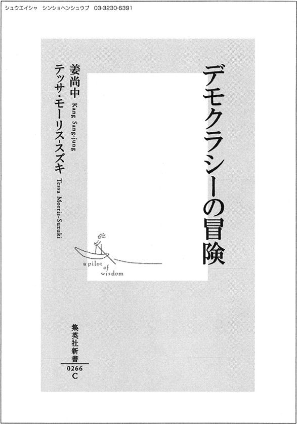
◎姜尚中からテッサ・モーリス‐スズキへのメール
テッサさんへ
メールが不調ですぐに返事ができずに申し訳ありませんで SKINAQP1; 4F,イトルも 16289 Ｐ ...あ WWN56@^2［erbghjlerghba ... ... ... ... S00CBS ：・ hasgidua11194-0-290 ｊnhsiuhasb9-403579, ma..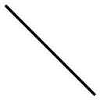 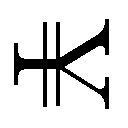
（以下、判読不能）
◎テッサ・モーリス‐スズキから姜尚中への手紙（日本語訳）
姜尚中さま
ご返事どうもありがとうございました。
残念ながら、文字化けがひどくてまったく読めませんでした。後日、Ｏさんから、対談の件をご快諾いただけたことを聞きました。心から嬉しく感じています。
それにしても、姜さんはお忙しそうですね。シンポジウムやテレビの出演が重なっているようですし、ほんとうに心配です。去年の二月に東京に行ったとき、偶然、神保町の、とあるお蕎麦屋さんで姜さんを見かけたときのことを思い出します。姜さんは座敷の床に突っ伏したまま、眠っていたのですよ！ ちゃんと睡眠をとっているのでしょうか。
それから、対談のテーマやタイトルや組み立ても、私にすべて任せてくださるとか。
そうですね......。
たしかに、先日お送りしたメールだけでは、あまりに漠然としすぎていますね。姜さんもお困りでしょう。それでは、一両日中に、私のほうで簡単なレジュメを用意します。メールと、それから念のため、ファクスでもそちらに送りましょう。
あるいは、対談集の冒頭に、このレジュメを掲載したほうがいいのかもしれません。必ずしも二人の議論と結びつかなくてもかまいません。ロレンス・ダレルの小説『アレクサンドリア四重奏』の巻末に、作品の要点や登場人物たちの性格の摘要などが断片的に併載されているのを覚えていらっしゃいますか。
姜さんとの実際の対話がレジュメの内容を裏切ることを、私はむしろ期待しています。
それでは、お身体に十分お気をつけくださいね。
二〇〇三年九月××日
追伸 あるいは休暇を兼ねて、年末にオーストラリアにいらっしゃいませんか。今の状態では、なかなか仕事に切れ目ができないでしょう。ケアンズから飛行機で二時間くらいのところに、ハミルトン島という感じのいいリゾート地があります。じっくりと思索をぶつけあうにはもってこいの場所です。
◎姜尚中からテッサ・モーリス‐スズキへの返信
なし
◎テッサ・モーリス‐スズキから姜尚中に宛てた、対談のレジュメ冒頭部（日本語訳）
対談の導入部
最初の問いは、次のようなものにしたい。
あなたは、自分たちが暮らしているこの世界をより良い方向に変えていくことが可能だとしたら、そうすることを選びますか。
私たちはどういう世界に住んでいるのか。あるいは、社会をよりデモクラティックにするとはどういうことなのか。議論の前に、空洞化するデモクラシーの現状を多角的な視点で検証することから始める。
追伸 姜さんへ、レジュメの本編は、明日、後送することにします。デモクラシー思想史のオーソドックスな見取り図のようなもので、少々堅苦しくなるかもしれませんが、入門書としては不可欠の部分だと思います。
レジュメの本編は、第四章の冒頭に全文掲載します。（編集部）
◎姜尚中からテッサ・モーリス‐スズキへのファクス（九州某ホテルのファクシミリより）
テッサさん
パソコンがクラッシュしてしまい、書きかけの複数の原稿とともに、アドレスやら何やらがぜんぶ消えてしまいました。さらに、自宅のファクスも不調で、テッサさんから何か大切な連絡があったようなのですが、それもまだ読んでいない状態です。
メールは一両日中に復旧すると思います。誠に恐縮ですが、もう一度同じものを送っていただけると幸いです。
草々
二〇〇三年一〇月××日
追伸 いろいろとご心配いただきありがとうございます。身体のほうはまったく問題ありません、大丈夫です。お互いに忙しくてなかなか連絡を取りあうのが難しくなっています が、チャンスがあれば、是非ともテッサさんにお会いしたいものです。
近々、日本にいらっしゃる予定はないのですか？
追伸中の「お互いに忙しくてなかなか連絡を取りあうのが難しくなっています」に付された傍点は、テッサ・モーリス‐スズキ氏によるものです。（編集部）
◎テッサ・モーリス‐スズキから姜尚中への手紙（日本語訳）
姜尚中さま
東京大学の助手のＨさんと、それから奥さまやＯさんに、これから年末にかけての姜さんのスケジュールを取材しました。計算では、一二月五日から一〇日間ほど日本を離れることは十分可能です。
以前、お話ししたハミルトン島に、落ち着いて議論できそうなコテージを予約しました。手紙と一緒に航空チケットもＯさんに託してあります。日本時間一二月五日夜二一時成田発の航空便に、何も考えずにＯさんと一緒にご搭乗下さい。あとはお会いしたときに説明します。
私は、翌朝ケアンズ国際空港でお待ちしております。
二〇〇三年一一月××日
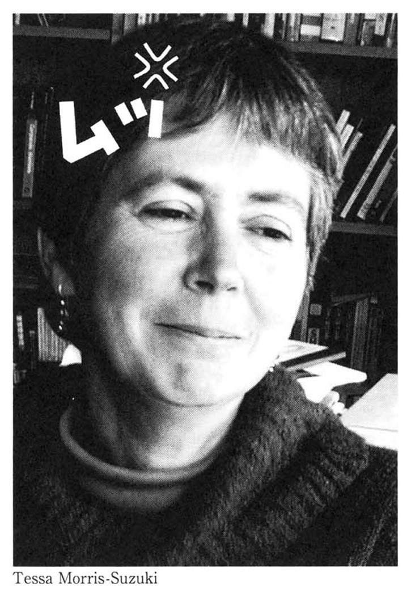
第一章 デモクラシーの空洞化
――冷戦構造崩壊後、自由は勝利し、それによって自由な選択肢はなくなった
（二〇〇三年一二月六日午後 ハミルトン島 コテージ脇のプールサイドにて）
▼あなたは、自分たちが暮らしているこの世界をより良い方向に変えていくことが可能だとしたら、そうすることを選びますか
姜 ここはほんとうに気持ちのいいところですねぇ！ テッサさん、いろいろアレンジしてくださってどうもありがとうございました。
テッサ いいーえ！ （満面の笑みを浮かべて）姜さんは日本にいるとどんどん仕事を引き受けてしまうでしょう。ですから、多少強引にでもオーストラリアに来ていただくことにしたのです。これから四日間、いろいろな面倒事は後回しにして、のんびりと骨休みすることだけを考えてください。仕事を思いだしてはダメですからね。
（担当編集者Ｏ、Ｔシャツ＋水着＋水中ゴーグル＋ビーチサンダル姿で、オレンジジュースを手にして登場。おもむろにテープ・レコーダーをセットしはじめる。）
姜 ......ほんとうにゆっくり休めるのですかね。
テッサ Ｏさん、意地悪をしてはいけません！ 姜さん、このデモクラシーの対話に、身構えて臨むのだけはやめましょう。ある一つの重要なテーマが見つかったら、姜さんとこんなふうにじっくりと話をしてみたいと、私は以前から思っていました。図らずもそれが実現しただけで、満足しています。出版社も、必ずしも本にならなくていいといってくれていますし――たしか、そういう話でしたよね？
（担当編集者Ｏ、傍らで神妙にうなずく。）
姜 Ｏ君、ウソばっか！（笑） でも、僕のほうこそ、テッサさんとこうして数日間、一つの重要なテーマについてじっくりと議論する機会を得たことは、とても貴重なことだと感じています。
テッサ 初めてお会いしてから、かれこれ一〇年ほどになります。今にして思えば、姜さんと知り合いになれたことはほんとうに幸運でした。奇跡といってもいいでしょう。
姜 そこまで大げさにいわなくても......。
テッサ 一〇年ほど前姜さんが『現代思想』誌で村井紀さんとなさった対談（『乱反射するオリエンタリズム』一九九三年五月）を目にして、非常に感銘を受けました。それで姜さんが当時教えていた国際基督教大学の研究室に突然電話を入れたのです。ある用事で日本に短期滞在中のことで、私のスケジュールはびっしりと埋まっていましたが、最後の半日だけ自由時間ができたのですね。で、奇跡というのは、姜さんがそのとき部屋にいたことと、さらに外部からの電話を本人が直接取ったこと。それ以後、姜さんの研究室に、数十回、電話する機会がありました。しかし、そんなことは二度と起こりませんでした。あのとき、電話しなかったら、おそらくお知り合いになることはなかったと思います。
姜 （ゴホンと咳払いして）そうそう、僕の友人にある遊び人がいるのですが、彼がジェリー・ルービンの言葉を引いてこんなふうにいっています。「高度資本制社会の中では、遊んでいることが仕事なのか、それとも仕事が遊んでいることなのか、その二つしか正気を保つ道はない」と。彼とは一度対談集をつくったことがあるんだけど（『ナショナリズムの克服』）、そのときは、まさに遊びを地でいくような作業でした。今回の対話も是非ともそれでいきたいですね。
それでね、テッサさんが先日つくってくれた、対談の導入部の問いは、飛行機のなかで読ませていただきました。
テッサ ほんの走り書きですけど（赤面）、ようやく読んでくださったのですね......。
姜 （爽やかな表情で、白い歯を覗 かせながら）いやいや、われわれの議論にとって、非常に有益な見取り図ですよ。「あなたは、自分たちが暮らしているこの世界をより良い方向に変えていくことが可能だとしたら、そうすることを選びますか」という問いに接したとき、もしもそれが可能だとわかっていたら、誰もがきっとそうすることを選ぶでしょう。しかし、そのボタンの在 り処 がまったくわからない。
この一〇年ほどで爆発的に広まったインターネットを駆使して、テッサさんがおっしゃるように、先のイラク侵略直前に一一〇〇万人を超える規模の反戦運動が実現しました。世界に冠たるノンポリ大国日本でも、安保闘争以来およそ三〇年ぶりに一万人を超えるデモ行進が催されたほどです。にもかかわらず、現実の政治には何の影響も与えませんでした。
テッサ 冷戦が終わった一九九〇年代の初頭、フランシス・フクヤマのような理論家によって、デモクラシーの勝利が高らかに宣言されましたよね。マルクス主義は敗北し、リベラル・デモクラシーだけが唯一普遍的な制度であり、倫理であり、イデオロギーであることが証明された、という具合に。しかし、その後、事態はまったく違った様相を呈し、今や、私たちは、デモクラシーの空洞化の時代に生きていることを苦々しい思いで認めざるをえない地点にまで追い込まれてしまいました。それを象徴する出来事を思い出します。
二〇〇一年の九月一一日、世界貿易センターとペンタゴン（アメリカ国防総省）への攻撃を受けたアメリカは、アルカイダとその指導者ビンラディンをかくまうといわれたタリバン政権を倒すために、アフガニスタンへ侵攻しました。そのときの作戦名は「不朽の自由作戦（Operation Enduring Freedom）」というものでした。その一年半後には、サダム・フセイン体制を打倒する第二の作戦が開始されますが、そちらは「イラクの自由作戦（Operation Iraqi Freedom）」と名づけられました。
姜 ほんとうにグロテスクなネーミングでしたね。
テッサ 戦闘終結宣言後も、アメリカ兵は現地の人々を殺しつづけ、また、殺されつづけています。アメリカ政府は、自国の兵士たちはデモクラシーの普及のために死んだのだと説明しますが、当のブッシュやラムズフェルドやチェイニーが、心のなかにデモクラシーの理想をもってるとはどうしても思えないのです。
＊この続きは製品版でお楽しみください。
集英社ｅ新書
デモクラシーの冒険
姜尚中
１１００万人を超える人類史上最大の反戦運動もむなしく、アメリカとその同盟国は、ついにイラク攻撃に乗りだします。デモクラシーを高らかに謳いあげる国々による圧倒的な暴力は、人々の意志が政策に反映されることのない絶望的な光景を、かえって浮き彫りにしました。果たして、政治はひと握りの人間によって決定され、他の者たちは粛々とそれに従うほかないのでしょうか？ 本書では、世界的に進行するデモクラシーの空洞化を多角的に分析しながら、私たちの政治参加の可能性を探ります。日豪屈指の知性による、深くて鋭い盛りだくさんの対話劇。「イラク戦争以後の民主主義入門書」を片手に、いっしょに考えてみませんか？
◎森巣博から姜尚中への招待状
姜尚中先生
東京大学社会情報研究所教授
冠省。南半球から北半球への手紙では、時候の挨拶を省けるので、ありがたい。とはいえ、私はＴシャツ、ショーツ姿となり、ビール壜 を片手に裸足でシドニーのビーチを歩いております。こりゃ、時候の挨拶の一種でしょうな。
日本の出版業界の悪習、年末進行は、左足で片付けました。さあ、これから集中した博 奕 だ、と意気込んでいたのですが、どういうわけか、あまり思わしくない。多分、気合いが入りすぎていたのです。これを意気込みとは言わずに、イレ込みと業界では呼びます。情けなし。
毎日毎日グリーンの羅紗 が張られた勝負卓上でお金を溶かしつづけているのもバカらしいので、しばらくの間、サウスコーストで休養し、ササ針治療でも受けようか、と考えております。
唐突で恐縮ですが、どうです、姜さんもサウスコーストに遊びにきませんか？ 五〇人程度なら快適に暮らせるような大邸宅を用意しておきましょう。
また前回の滞在では、「僕は天草少年です」と言いながら潜ってスカ、「熊本は海の傍で育ちました」と言いつつ釣ってはボーズ、という大変な失態を姜さんはオーストラリアで曝 したわけですが、その名誉を回復する良い機会ではなかろうか、と考えます。なんなら、一流のシェフも雇っておきます。潜ってアワビ、釣って大鯛、と楽しんでいただきたい。
私は、膝まで水に浸かれば、アワビは一〇キロ、潜れば、大伊勢海老、船を出せば、大物を攻めずアジ、キス、サヨリ狙いという偏屈な人間なので、食卓は大変豊かなものとなるでしょう。それに、ペタルマのシャードネーとキャビネーを沢山用意しておきます。
姜さんの最近のご高著、『ナショナリズム』（岩波書店）および『東北アジア共同の家をめざして』（平凡社）を拝読しました。深く感銘を受けた素晴らしい本です。と同時に、いくつか姜さんにご質問したい箇所も発見したのです。『ポストコロニアリズム』（作品社）も、もうすぐ刊行されますね。
どうでしょう、姜さん。自らの両掌で獲った海の幸をたらふく食べながら、「酒池肉林」はいろいろと差し障りがあるので、「酒池清談」でもしてみませんか？
お忙しいのは百も承知。
しかし、ヒトは遊ばないとバカになります。もっとも、私みたいに、遊んでばかりいても、やはりバカになってしまうのでしょうが。
九・一一以降、過密なスケジュールがつづいていることだと思います。ここで、すべてを放り投げて、ちょっとひと休みするのは、悪い考えではありますまい。充分にバッテリーを充電してから、文化的思想的経済的政治的社会的閉塞状態にある日本を、また姜さんの明晰な頭脳で斬りまくってください。
Ｎくん（息子さん）、Ｒちゃん（娘さん）、Ｍさん（夫人）もお連れ下さると、尚更よろしい。まだ学校は休みに入っていない、などというのは言いわけになりませんよ。親と一緒に旅する以上の教育があるはずがないのですから。
そういえば、ＮくんもＲちゃんも、大きくなったでしょうなあ。Ｎくんには、私がそろそろ博奕の手解きをしてもよろしい。手に職を付けるのは、これからの社会で、重要なことだと感じます。
実現すれば、とても嬉しいです。
個人的なことでのご相談もございます。
どうぞよろしくご検討ください。
時に、「冠省」で始まる手紙は、何と結べば良いのでしょうか？ 日本を離れて三〇年、どんどんと言葉を失っていきます。
二〇〇一年一一月二五日
森巣博拝
◎姜尚中から森巣博への返信
博さんへ
前略、お手紙ありがとうございました。
博さんがおっしゃるように、このところ仕事が立てつづけに入り、本当に休暇どころではありませんでした。テロについては近刊の『ポストコロニアリズム』の序文や、「思考のフロンティア」シリーズの最終巻『思考をひらく――分断される世界のなかで』（岩波書店）、それに、藤原書店の季刊誌「環」でやった、キャロル・グラックや和田春樹とのメールによる鼎 談 でも触れました。
しかし、ご指摘されるまで意識していなかったのですが、もしかしたら、心身ともに少々疲労気味なのかもしれません。サウスコーストでぼんやりするというプランが、とても魅惑的に思えてきました。
ちょうどその時期、仕事に切れ目ができるので、久しぶりにお会いしたいですね。まだ確約はできませんが、一二月上旬の何日間かなら、もしかしたら時間が取れるかもしれません。調整次第、またご連絡いたします。
草々
二〇〇一年一一月二六日
姜尚中
追伸、ところで、個人的な相談事とは、一体、何でしょう。博さんが相談事なんて、珍しいですね。
◎森巣博から担当編集者への手紙
担当編集者Ｏさま
集英社新書編集部
おおおい、大変だあ、大変だあ。
大兄から依頼があった「ナショナリズム批判」にかかわる本について、良いお知らせがあります。
なんと、東京大学社会情報研究所のあの姜尚中先生が手伝ってくれることになりました（とは言っても、まだ承諾は得ていない）。
でもまあ、私の仕掛けにまかせてください。きっと姜先生からＯＫを取って見せます。伊達に「張り取り」だけで、三〇年間、糊 口 を凌 いできたわけじゃないのですから。
多分、「ナショナル・アイデンティティ」を中心とした対談になると思います。タイトルは、「東大教授、豪州博奕打ちに会いに行く」なんてのは、どうかな？
こりゃ、売れますよ。
ただし、経費がずいぶんとかかります。三〇〇万円ほど、至急、ご送金ください。
厭ならいいんですよ。私はこの話を幻冬舎に持っていき、あそこの「天才編集者」Ｓさんにベストセラーにしてもらいます。
ご返事は不要です。
私の口座に三〇〇万円相当が振り込まれていれば、「イキ」、振り込まれなければ、「トル」としましょう（註・「イキ」は「そのまま」、「トル」は「削除」という意味の編集用語）。
そして、「トル」となったら、私はあなたと、終生、口をききません。よろしく。
二〇〇一年一一月二六日
森巣博拝
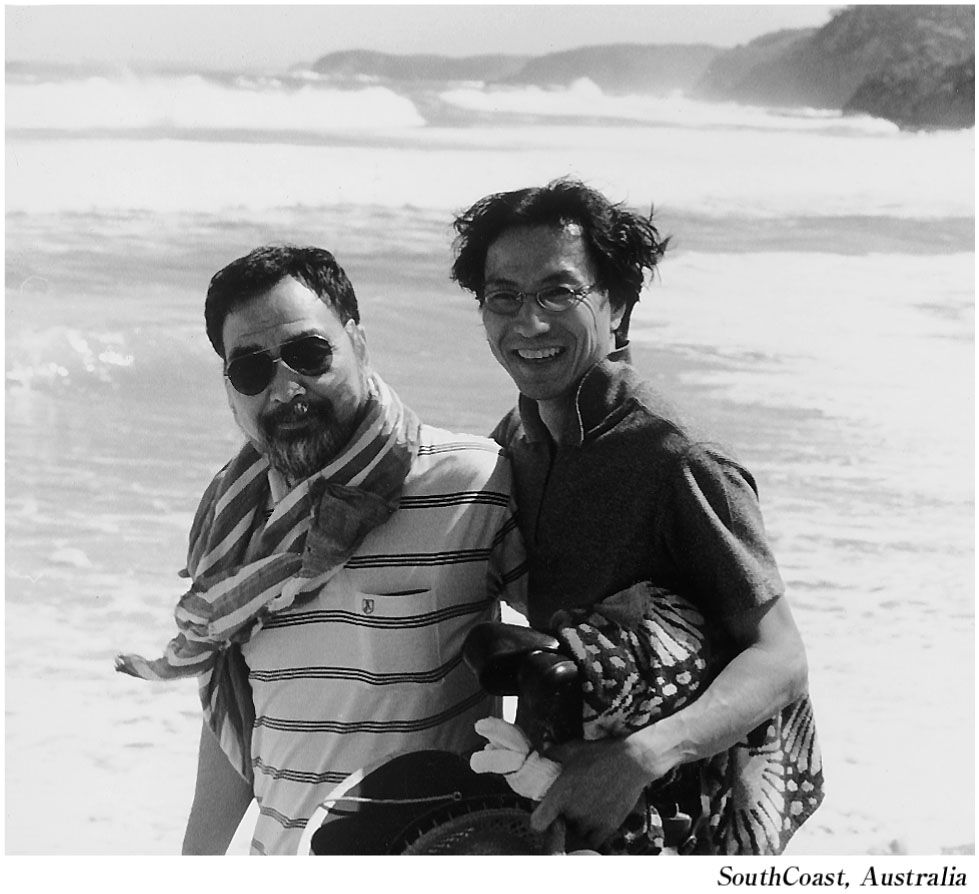
第一部 ナショナリズム／自由をめぐる対話
――東大教授、豪州博奕打ちに会いに行く
（二〇〇一年一二月七、八、九日／オーストラリア、サウスコースト某所）
序章 石原慎太郎の「中国人犯罪者民族的ＤＮＡ」発言を容認してしまう空気は何か？
▼森巣博、チューサン階級を代表し、九〇年代になぜ、日本万歳な人たちが増えたのかを質問する
森巣 西暦二〇〇一年一二月七日金曜日。われわれはオーストラリアのサウスコースト、ベイトマンズ・ベイの崖上にある豪邸で、穏やかな顔でジェイムズ・ボーグ（タスマニア島の高級ビール）を飲んでおります。
気温は摂氏二七度、湿度は三六パーセント。きわめて快適です。崖下には潮騒、太平洋を吹き抜けた爽やかな潮風が頰 の火 照 りを優しく冷やす午後三時。湾内には、五、六頭のイルカが回遊しております。
そういえば、この前、吉 見 俊 哉 ご一家がここにいらっしゃったとき、皆でビーチを歩いていたのですが、ほんの一二、三メートルのところに突然七、八〇頭のイルカの集団が現れ、肝をつぶしたことがございます。
吉見さんのお子さんたちは、この世のものとは思えない光景に、口を開いてただあ然としておりました。Ｃさん（夫人）は、絶句。
まあ、私は、ここでエクスタシーを一発決めれば、地上の楽園が出現する、などと不 埒 なことを考えてしまうのですが、天下の碩 学 を目の前にして、そういうわけにもまいりますまい。
姜さんが、寒風吹きすさぶ東京に戻ったあとの、私の密かな楽しみとして残しておきましょう。
姜 テープレコーダーを持ち出して、博奕打ちが、何をたくらんでいるのかと思えば（笑）。
森巣 というわけで、東京大学社会情報研究所の姜尚中教授が、対談のために、わざわざオーストラリアまで博奕打ちを訪ねてくださいました。少々緊張しております。
姜 はい（笑）。
森巣 つまり、こういうことです。私が昨年（二〇〇〇年）に『無境界家族』（集英社）を出したとき、勘違いされて、どういうわけか新書の依頼が三件ありました。しかも、そのうち一件は、『無境界家族』全編に通底する、「日本、あるいは日本人という概念への根源的な違和感」に焦点をあててほしい、というものでした。何と、この私めに、本格的なナショナリズム批判の書を書けというのです！ しかし、私は、新書というのは知識を一〇〇持っている人が一〇書くからおもしろいのであって、私みたいに知識が一〇の人間が一〇〇に見せかけて書いてもおもしろくないというふうにお断り申し上げました。もっとも最近では、無知蒙昧な連中でも平然と新書を書いているのですが。あれはいったい、どうなっているのかな。まあいいや。それなら、知識も見識もある姜さんのような方に「チューサン階級」の視点から質問しまくる一冊なら可能ではないか、という話になりまして。
姜 チューサン階級？
森巣 中三階級。中学校三年生程度の知識レベルとご理解ください。
姜 本当にもう（笑）。
森巣 しかし、メールで「個人的なことでのご相談」と書いたのも、あながち、姜さんを対談に巻き込むための前振りだけでもないのです。いずれお会いする機会があれば、是非ともお伺いしてみたいことがありました。
姜 といいますと。
森巣 今年、二〇〇一年の五月八日付の産経新聞に、石原慎太郎都知事のコラムが掲載されましたね。
姜 ああ、僕も読みました。
森巣 ご存じのように、「日本よ 内なる防衛を」と題されたそのコラムの内容は、実に、驚くべきものでした。
姜 あれはもう、レイシズム（人種差別）。
森巣 明らかな人種差別だと思うんですよ。まず、石原慎太郎は、凶悪な手口の犯罪を中国人が行ったと冒頭で紹介したあとに、つづけて、「こうした民族的ＤＮＡを表示するような犯罪が蔓延することでやがて日本社会全体の資質が変えられていく」と、公共の場で言い切ったんです。さらに、結びの文章は、「将来の日本社会に禍根を残さぬためにも、我々は今こそ自力で迫りくるものの排除に努める以外ありはしまい」。まあ、勃起した粗末なちんぽこで障子紙を破いたという作品（『太陽の季節』）で著名になった人間が政治の世界に進めば、ロクなことは起こらないと、密かに憂いていたのですが、それがまさに現実化した。
姜 信じがたい発言でしたね。
森巣 これは、冗談なんかではなく、オーストラリアの国家予算よりも大きい金額を動かしている地方自治体の、紛れもないトップの公共の場での発言です。
姜 そういえば、サイードが、ニューヨーク市長のジュリアーニをちょっと馬鹿にしながら誉めてたけど、昨年の「九・一一」直後、彼は、次期大統領候補を睨 んで、一生懸命頑張るわけですよ。ジュリアーニは右派の政治家ではありますが、そんな彼でも、アラブ系の人が迫害を受けるかもしれないという懸念を、建前上、表明したりするわけです。だから、これがもしもアメリカだったら、石原慎太郎は辞めなければならなかったかもしれない。
森巣 いや、刑務所です。明らかに、レイシズムを称揚する発言だとして。塀の内側で、永い間しゃがまなければなりません。
姜 ジュリアーニ市長にしても、ホームレスや少数民族を外部に押しやることで、ニューヨークをクリーンにしたと思うんです。その彼だって、あの「民族的ＤＮＡ」などといった過激な発言はしていない。
森巣 石原慎太郎は、その一年ほど前の二〇〇〇年四月九日、陸上自衛隊第一師団の式典で、「三国人」発言もしています。「今日の東京を見ますと、不法入国した多くの三国人、外国人が非常に凶悪な犯罪を繰り返している」でしたか。姜さんは、石原発言に敏感に反応されて、即座に、宮崎学氏との対談集『ぼくたちが石原都知事を買えない四つの理由。』（朝日新聞社）を出版されましたね。
姜 今回の「中国人犯罪者民族的ＤＮＡ」発言は、「三国人」発言よりもはるかに悪質です。ところが、なぜか、そうした発言に対して、メディアは急速に鈍感になりつつある。
森巣 私が気になったのは、まさに、その点なんです。なぜ、石原発言は野放しのままなのか。ルペンやハイダーのような政治家を日本のメディアは極右と呼ぶならば、なぜ、石原慎太郎を極右と呼ばないのか？ ルペンやハイダーでさえ、公共の場では石原のような発言はできないでしょう。冗談抜きで、「人種差別扇動・助長行為」として起訴されて、本当に、刑務所の中でカンカン踊り（身体検査のため、すっ裸に剝かれ、両腕を頭上に挙げてばたばたと足踏みさせられること）をしなければならなくなります。これについては、いつかどこかで、徹底的に批判しなければいかんと思っているんですよ（「政治家『極右』と呼ぶ基準は何か」／「朝日新聞」二〇〇二年六月二日）。
姜 それから、九・一一後、九人のアフガニスタン国籍の男性が、難民認定申請中に不法入国などの疑いで法務省入国管理局に収容されるという事件が起きました。そのうちの四人は、結局、国外退去処分になってしまったんですが、不思議なことに、それがベタ記事なんです。
森巣 その一方、小泉純一郎は、ショー・ザ・フラッグ！ と、口から泡を飛ばしながらブッシュに呼応して、明白な憲法違反を犯してまで自衛隊を派遣しようとしている。日本の外交官も、まったくだらしない。「ショー・ザ・フラッグ」とアメリカ政府の高官に頭ごなしに言われたら、黙ってそのとおりにやってしまう。そういう際の「正しい対応」は、「セイ・プリーズ」とたしなめるものです。英語圏でそれなりの躾 を受けた者なら、誰だって、そう応える。
姜 そうですね（笑）。アフガニスタンをどうするのかとか、有事法制の是非をめぐる議論に日本中が巻き込まれている中で、たった四人の難民が、日本社会から拒絶され、ひっそりと強制退去させられてしまう。その矛盾は、一度みんなの眼前に提示されれば、誰にでもわかるはずなのに、メディアは取り上げようとしない。
森巣 なぜなんでしょう。
姜 先ほどの石原慎太郎の発言に関しても、それをしかめっ面で聞いたり、嘲笑する人もいますが、総体として容認してしまう日本社会の価値観そのものに、特に、アジア系の人に対するレイシズム的感情が、形を変えて残っているのだと思います。しかも、多くの日本人は、ヨーロッパやアメリカには人種差別があるけど、自分たちには人種差別の伝統がないと思ってるから、非常に無防備にレイシズムが表に出てきてしまう。
森巣 ただ、私は、もう三〇年近くを海外で過ごしていますが、今でも一年に二回ほど、春と秋に、日本を「訪ねる」わけです。そうすると、もう、普段接する機会がないだけに、日本社会やメディアの感覚麻痺が急速に進行していることが、否応なくわかる。レイシズムへの無防備性はもともとあったことかもしれませんが、その感覚麻痺が、近年、ますます深化しているような印象を受けるのです。
姜 おっしゃるとおりです。
森巣 セキュリティや国益を声高に語りながら、日本人以外の人間を、あまりにも安直に、視界の外に追いやろうとする空気そのものに対しては、非常に危険なものを感じます。誰もが、その空気に慣れすぎてしまっているのではないか、と。
姜 九〇年代以降、誰もが躊 躇 せずに「国益」という言葉を使用することができるようになったのは、確かですね。
森巣 おそらく、これは、グローバリズムと深いかかわりがあることだと思います。欧米各国では、増加しつづける移民に対する不安や、グローバル化による経済構造の激変を背景に、外国人犯罪の防止や自国民の労働雇用の創出をかかげて登場した極右ナショナリズムが、とくに九〇年代になって猛威をふるいました。
姜 日本の場合も、確かに、その流れの一部と言えますね。
森巣 要するに、グローバル化の結果生じたもろもろの混乱や不透明な不安感の原因を、「三国人」や「中国人」という少数者に押し付けることによって「可視化」し、一刻も早く安心したいという、安直な雰囲気があるのではないかと思うんです。それが、いわゆる九〇年代に突如として出現したかに見える、ネオ・ナショナリズム（今どきの日本万歳主義）の背景に横たわっていたのではないか、と。
姜 なるほど。
森巣 本格的なナショナリズム批判の書を書いてくれ、という依頼に乗る気になったのも、そうした分析が背景にあったからです。そして、この問題について深ーく考えるためには、是非とも、姜先生のお力をお借りしたい！
姜 ......はい。
森巣 ありがとうございました！ では、早速、対談に移らせていただきたく思います。ただし、この対談のための経費を三〇〇万円送金せよ、と依頼したのですが、担当編集者は意味がわからなかったようです。何も送ってこなかった。「少年ジャンプ」であれだけ儲けている集英社ともあろうものが、まったく情けないことです。したがいまして、姜さん、全力投球する必要はございません。姜さんに全力投球されたら、受けられるキャッチャーがいなくなってしまうのですから。力をセーヴしてくださっても、いっこうに構いません。
姜 ははははは。
＊この続きは製品版でお楽しみください。
集英社ｅ新書
ナショナリズムの克服
姜尚中
在日の立場から、長年、「日本」について鋭い批判と分析をつづけてきた姜尚中と、オーストラリア在住の国際的博奕打ちで作家の森巣博という、異色の対談が実現しました。テーマは１９９０年代以降、日本に吹き荒れている、ナショナリズムの嵐です。第一部では、日本型ナショナリズムの歴史を通観。第二部で、グローバル化によって変質する国民国家像と、国境なき後の世界の未来について、刺激的な意見交換を繰り広げます。国家とは何か、民族とは何か、故郷とは何か。本書は、ナショナリズムを理解し、何者をも抑圧しない生き方を模索するための入門書です。
第一部
第一章 友の死
一 与次郎
青年は突然、わたしの前に姿を現した。
積み上げられたサイン本の山の間に迷彩柄のダウンジャケットが覗 き、「え、まだ時間では......」と見上げたわたしの目と、わたしを見つめる彼の目とがぴたりと合った。日に焼けた肌と、若者特有のきれいな輪郭、そして、はにかんだような戸惑ったようなやわらかい奥二重の目。一瞬、わたしは息をのみ、思わずあの子 の名前を口走りそうになった。――ただ、次の瞬間、別人であるとわかったけれども――、わたしと青年は双方まったく別の思いを持って、しばし目と目を見つめあったのだった。
それはずいぶん長い間のように思われたが、じっさいにはほんの数秒だったかもしれない。青年はすらりとした長身の背中をほとんど直角に折り曲げ、ていねいすぎるお辞儀をすると、結んでいた唇をおもむろにゆるめ、言葉を発した。
「突然すみません、大学生の西山直広といいます。先生のファンです。ぶしつけとは思ったのですが、どうしてもお目にかかりたくて押しかけてきました」
しばたたく瞳の奥に思い詰めたものがあふれていた。そして、やや顔を赤らめ、いったん息を吸い込むと吐き出し、言葉を継いだ。
「これ、読んでください」
やや突き出すように、それでも両手をきちんと揃 えて机の上に置いたのは、定型の茶封筒だった。青年はまたわたしの目を見つめ、「真剣なんです。お願いします」と言ったなり踵 を返して去っていった。
ときならぬつむじ風に当てられたようだった。
一瞬遅れて小太りの書店員が駆けつけ、頰を赤くふくらませてまくしたてた。
「大丈夫でしたか、先生。すみません、呼び止める間もなかったもんですから――。しかし気をつけないといけませんね。近ごろの若いヤツにはけっこう危ないのがいますから。何をするかわからないんだ、マッタク」
書店員の言葉をぼんやりと聞きながら、わたしは〝遠い接近〟とでもいうような奇妙な感覚に襲われていた。
「さあ、みなさん、並んでください。カン先生のサイン会を始めますよ、いいですかぁー」
書店員の裏返った声がフロアのざわめきを払うように響きわたった。
＊
書店でのサイン会が二時間ほどで終わると、短い師走の日はすでにとっぷりと暮れていた。
「お疲れ様でした。今日は強引にお願いしてすみませんでした」
編集者の笑顔にはわたしへの気遣いがあふれていた。
「いや、楽しかったよ。こうして一人ひとりと握手すると、読んでくれている人たちの素顔がわかって、本を出して本当によかったって気になるよね。そんなことってテレビなんかでは得られないしね」
コートの袖に腕を通しながら往来を見やると、いつしか霧雨が降りはじめていた。うるんだ夜気の中に色とりどりのイルミネーションがぼうっと霞 んでいる。額に手をかざした人びとが足早に通り過ぎていく。
「タクシーを用意しますから、ご自宅までどうぞ」
編集者はしきりにタクシーを勧めたが、わたしは辞して屋外に踏み出した。無性に歩きたかったのだ。サイン会のあとは決まって心身の緊張が抜け、人恋しさと孤独感がないまぜになったような気持ちになる。
小雨に煙 る往来を歩くうちに、コートの表面に夥 しい数の雨粒がついていた。信号待ちの間、銀色に光るその水玉を見ていたら、さっきの青年の顔が思い浮かんだ。胸を締めつけられるように懐かしい、あの瞳。目を閉じて青年の顔を思い起こすと、それはいつの間にかもう一人の若者の顔と重なり、その思い詰めた眼 差 しは、「アボジ......」と語りかけているようだった。わたしは頭 を振りながら、しばし立ちすくんだ。
「そうだ、手紙のようなものを置いていったな」
かばん、コートのポケット、ズボンのポケット......、やがて指の腹が上着の内ポケットにカサカサとした封筒の感触を探り当てた。
ふたたび時が動き出す。
わたしは道路脇に見つけたカフェに入り、腰を下ろすと、注文もそこそこに取り出した。急いでねじこんだせいだろう、もみくちゃになった便 箋 のようなものが封をしていない口から覗いている。広げると、やや右肩上がりの、あまり上手でない、しかし一字一字ていねいに書かれた文字が現れた。わたしは眼鏡 をはずし、裸眼で行を追いはじめた。
＊
姜尚中先生。
はじめまして。僕、西山直広といいます。埼玉県の上尾市にあるＳ学院大学の二年生です。先生のいらっしゃるＴ大みたいな名門ではありませんけれど、ご存じですか？ 先生も昔、上尾に住んでおられたと聞きました。ミッション系のこぢんまりとした大学です。
突然こんな手紙をさしあげたのは、苦しくてしようがないからです。誰かに聞いてほしかったのです。先生のご本を読んで、きっと僕の気持ちをわかってくださる人だろうと思いました。勝手にそう思い込んだんですが、ご迷惑だったら、本当にすみません。でも他に相談する人もいないし、言ってもわかってもらえそうにないし、迷った挙げ句、どうせだったら理想の人に聞いてもらおうって、ダメもとで先生にアタックしてみることにしたのです。
先生、二週間前に親友が死んだのです。
与次郎というやつです。
白血病でした。見つかるのが遅かったのと、若いから進行が早いのとで、あっという間に死んでしまいました。小学校からずっと一緒で、大学まで同じでした。家族も同然のやつでした。兄弟みたいでした。一緒に頑張ろうなって就活始めたところだったのに、こんなことって、ありでしょうか。悲しくて、悲しくて、どうしていいかわかりません。
甲高い声でよく笑う、笑うと目がなくなって八重歯がニョキって出る、一緒にいると楽しいやつでした。身体 に穴があいたみたいです。
与次郎というのは本名じゃありません。「長与次郎」という名前なので、いつのまにか「与次郎」って呼ばれるようになったのです。先生もお好きな夏目漱石の『三四郎』に、与次郎って人が出てくるんですってね。ユーモアがあって、お調子者で、小回りのきく大学生だって。僕はサーフィンとライフ・セービングしか取り柄がない体育会系ですけど、与次郎は文学青年ですからよく知ってて、「俺のキャラにぴったり」って気に入っていました。ただ、「俺のほうが小説の与次郎なんかよりぜんぜん誠実だけど」と笑ってました。与次郎に言わせると、ぶきっちょで奥手な僕は「三四郎」なんですって。
入院したときには病人とは思えないくらい元気で、病気が進んでもしばらくは「色がちょっと白くなったかな」と思う程度で、相変わらずジョークを飛ばしていました。お母さんを笑わせて、病室も明るかった。だから僕、このぶんなら大丈夫、ぜったいに元気になると信じていたのです。けどダメでした。たった三ヶ月でした。ウソみたいです。いまでもウソだという気持ちが半分です。いまにも「おい直、何やってんだ、出てこいよ」って誘いのケータイが鳴り、明日になれば「よう」って、あの目が細くてちょっと垂れてる笑顔に会える気分なんです。
お棺に納まった与次郎の姿を、僕はほとんど見れませんでした。死んだってことを認めたくなかったのです。
それでも、うつむきながら上目遣いでちょっとだけ見たら、もともと細かった顔がもっと細くなってて、唇が薄くあいてて、トレードマークの八重歯が少しのぞいていました。笑っているみたいでもあり、助けてくれよって何かを訴えているみたいでもあり、僕はものすごく恐 かった。あんな与次郎の顔は思い出したくありません。あんなのは与次郎じゃありません。
友達の中には与次郎の手を取ったり、そっと頰に触れたりしてお別れする人がいました。そういう人のほうが多かったかもしれません。でも、僕はできませんでした。いやだ、いやだと逃げ出したい気持ちでした。冷たくなって固まっている与次郎なんて、冗談じゃないです。この世でいちばんだいじな僕の与次郎なのに、お別れなんかするもんかって気持ちなんです......。
先生、人間はほんとに死ぬのですね。
でも、なぜ与次郎だったのでしょう。与次郎でなくてもいいじゃないですか。日本には一億以上の人がいるんです。その中でなんで与次郎なんでしょう。二十歳になったばかりなのに。もし与次郎が病気になったことに理由がないとしたら、僕が病気になってたとしても不思議じゃなかったってことですね。だったら、どうして僕じゃなかったのでしょう。
与次郎がなんで死んだのかわからないと思いはじめたら、与次郎がなんで生まれてきたのかもわからなくなりました。となると、僕がこの世に生まれてきて、こうして生きている意味もわからなくなりました。
考えれば考えるほどわからなくなって、頭の中がぐちゃぐちゃになって、ワーッて叫び出したくなっていたとき、書店で先生の本を見つけたのです。難しいかなと思いましたが、「大いに悩みなさい」って言ってくださっている本だと思ったので、買って読んでみました。ちゃんと理解できてるか自信ないですけれど、心に響く文章がたくさんありました。
でも、ちょっとひっかかるところがありました。それは、
「絶え間ない発展の途上に生きている人は、そのときにしか価値を持たない一時的なものしか学べず、けっして満足することなく死ぬことになります。だから、確たるものの得られない死は意味のないただの出来事であり、無意味な死しか与えない生もまた無意味である」
とすれば、与次郎の死は無意味だし、与次郎が生きていたことも意味がないことになりますね。そういう意味なのですか。それとも、もっと違う意味があるのですか。
もしそうなのだとしたら、それ、僕はたまらなくいやです。そんなこと認めたくないのです。けっして認めたくないんです。
誰もが無意味に生まれてきて、無意味に死ぬなら、何をやってもしかたがないじゃないかと思えて、何もしたくなくなりました。僕があまりにも暗く考え込んでいるので、母が心配して、「神様の思 し召しだったんだから」と言ったときには、「そんなの聞きたくない！」って生まれて初めて母に怒鳴り返してしまいました。母は熱心なクリスチャンなんです。でも僕はそんな考え方はいやです。
先生、与次郎が死んだのが神様の思し召しだったのなら、神様はなぜ与次郎をこの世に授けたのでしょう。授けておいて、これからというときに奪ってしまうなんて、それが神様の思し召しですか。そんな神様って何なのでしょうか。
ぜひとも先生にうかがいたいんです。与次郎の死には何の意味もなくて、だから与次郎が生きていたことも意味がないのですか。
先生はお忙しくて、学生の僕なんかの言うことにいちいち答えてくださるお時間はないかもしれません。でも、もしかしたらという望みを託して、こんなお手紙をさしあげました。
メルアドも書いておきます。
nishiyama-nxxx@xxx.ne.jpです。よろしくお願いします。
十二月二十一日
西山直広
＊
なるほど、そういうことか――と、ひとりごちて顔を上げると、カフェの柱に貼られたポスターの女性がものうげにこちらを見つめていた。わたしの好きなクラムスコイの「忘れえぬ人」だ。ガラス越しに夜のとばりがおりているせいか、そのまなざしは悲しげに見えた。思い詰めた顔をしていた青年のふっくらとしたまぶたと重なった。
外に出るといつの間にか雨はあがり、冴 え冴 えとした夜空にぽつりぽつりと小さな星がまたたいていた。
＊
それから数日、仕事の合間合間、心に隙間ができるたびにあの青年のことを思い出した。彼はどうしているか。わたしの返事を待っているだろうか。
窓の外を見やると、あの日と同じ霧雨になって、ガラスに無数の水滴が光っている。Ｔ大の老朽化した建物の十階にある研究室――わたしの〝城〟――は、週末は人の気配が消え、まるで無人の孤島にいるようだ。机の片隅のiPhoneから聞こえるピアノの音色が室内の空気をかすかに振動させている。
いまなら返事が書けるかもしれない。わたしは思った。相手は三回りも若い青年だ。しかし、なまじっかな返事は出すべきではない。答えるのならきちんと向きあわなければ。
わたしは彼のアドレスを確認し、誰が見ているわけでもないのに、気持ちほど座り直した。
＊
西山君。
いや直広君と呼んだほうが親しみやすいだろうか。
君の手紙、読みました。きっと君がわたしに望んでいることは、型通りの慰めやねぎらいの言葉ではないと思います。そんな言葉はいまの君には何の足しにもならないはずです。なにせ君は親友を失って悲しいだけでなく、心身ともごっそりと抉 り取られ、自分がからっぽになっていくような恐怖感に苛 まれているのでしょうから。
君は友人の死を通じて、生きる意味がどこにあるのかわからなくなり、途方に暮れているのだと思います。たとえていうと、小さな子供が突然、握りしめていた手を母親にふり払われ、誰もいない夕闇の畦 道 に取り残されたような感じではないでしょうか。あるいは自分が恐ろしい何者かによって連れ去られていくような、そんな心細い感じではありませんか。わたしも幼いころそんな体験をしたことがあります。そして十年前、親友を亡くしたとき、その感覚がよみがえってきました。
最近では「親友」はありきたりな言葉になっているようですから、彼のことをあえて生涯の「心友」と呼びたいくらいです。それほど、彼とは心に響くものがあったのです。
大学に入り、わたしは初めて心友に出会い、以来三十年近く、親交をあたためてきました。でも、その彼は五十歳の誕生日に数日手が届かないとき、帰らぬ人になりました。ガンとの壮絶な闘病の末に、目の玉がひっくり返るような凄 まじい形相でもがき、苦しみ、息絶えました。その姿にわたしは息をのみ、恐ろしくて言葉も出ませんでした。しかし、同時になにか身震いするような感動も覚えたのです。
「みんなしっかりと見ておいてくれ、これが俺の最期だということを。俺は最後まで生きようとしたんだ」
これが、彼の遺言でした。彼は自分に訪れつつある死という運命に彼なりに応えようとしたのだと思います。
彼はどちらかというと弱々しい感じがするくらい、やさしい男でした。でもその彼が絶望の淵 でそんな言葉を残したことに、わたしは崇高なものに触れたような気がしたのです。
「心友」は明らかに見込みのない患者でした。
賢明な彼はそれがわかっていました。それでも、当時日本の国内で許されていたありとあらゆる抗ガン剤治療に挑戦しました。コンマ以下でも延命の可能性があれば、どんな副作用や激痛が襲ってもひるみませんでした。
でも、すべての手だてが尽きたとき、さすがに彼も悲嘆に暮れました。死という運命を避けることも変えることもできないとわかったとき、やはり彼も死の影に怯 え、真夜中、一人病室のベッドの中で身を縮め、恐怖のあまりガタガタ震えていたのです。
煩 悶 の末、彼はどうにもならない運命にどんな心構えで臨むべきなのか思案しました。自分の五十年の人生は終わってしまうけれど、消滅までの一日一日を、いや一秒一秒を、ベッドの上でどう過ごすのか、残されたすべての力を総動員して答えようとしました。そうすることで、彼は「死に取り憑 かれる」のではなく、「死を自分のものにしようとした」のだと思います。死を間近にひかえ、彼は何かを創造することも、人並みの体験をすることもかないませんでした。それでも彼は一瞬、一瞬、死とどう向きあうかという課題に具体的に答えようとしたわけです。
直広君、人生に生きる意味があるのか、人は何のために生きるのか、そんな大それた問いにわたしは答えられません。なぜなら人が生きる意味は人から与えられるものではなく、みずから発見するものだと思うからです。そしてそれは、人がその都度、その場所で具体的に課される問いに答えていくことで発見されるものではないでしょうか。
ある意味で答えはすでに君の前にあるのです。
ちょうどわたしの心友のまるごとの存在がそうであったように、与次郎君という存在そのものが答えになっているはずです。心友は心友なりに、与次郎君は与次郎君なりにその一回限りの、そして他の誰とも比較できない唯一の仕方でそれぞれに課された人生の問いに答えようとしたはずです。
といっても、与次郎君はわたしの心友よりはるかに若い、これからの青年でした。彼がどれほど死の恐怖に怯え、絶望の中でどれほど狂おしい日々を送ったか、想像にかたくありません。与次郎君が自分の病名と余命を告知されていたのかどうかわかりませんが、大学生ともなれば、自分の症状の抜きさしならないことぐらいは察するでしょう。そして、自分に認めたくない運命が迫っていることを察知したとき、彼は君が言うように「なぜ俺なんだ、この世にはたくさんの人がいるのに、なぜよりによって俺がこんな目にあうんだ」と絶叫したくなったかもしれません。また、「なぜ俺は生まれてきたんだ。生まれてこないほうがよかった」と自分の生を呪 いたくなったかもしれません。
彼の心境は、きっと次のようなものだったはずです。
なにゆえ、わたしは胎 から出て、死ななかったのか。
腹から出たとき息が絶えなかったのか。（ヨブ記）
二十歳にして突然生命を奪われるくらいなら、神様はどうして意識もなく、快も不快もないうちに、わたしを闇の中に永遠に封印してくれなかったのか。そう思ったかもしれません。
では、彼はただ恐怖に駆られ、生まれた日を呪い、自分の人生には何の意味もないと思ったでしょうか。いや、それだけではなかったはずです。
夏の夕暮れ、家族とそぞろ歩いた川 縁 に並ぶ夜店のあかり。君と将来の夢を語りながら一緒に見つめた、突き抜けるような秋の青空。そんな光景が彼の目に浮かんだかもしれません。そんなとき、自分の二十年はただ失われていくだけのものではないと思ったのではないでしょうか。
そうです。過去はただなくなっていくのではないのです。過去はしっかりと「ある」のです。それは、与次郎君だけの過去として、けっして消し去ることのできない過去として「ある」のです。
じっさい彼がそのように思ったかどうかはわかりません。それでも彼はきっと自分の過去をしっかりと抱きしめ、ねんごろにいたわりたい、慈しみたいと思ったのではないでしょうか。
君の手紙によると、与次郎君は最後まで明るかったそうですが、彼はいつもまわりの人を笑わせてきた自分の人生を肯定したいと思って、お母さんに向かって最後までひょうきんな態度を崩さなかったのかもしれませんね。
わたしはこう考えています。
与次郎君はただ無意味な死を迎えたわけではない。無意味な死ではなかったのですから、彼の人生も無意味ではなかったのです。彼は、絶望的な状況の中でその都度彼にしかできないやり方で人生が彼に課した問いに答えようとしたのです。
直広君、人には自分の肉体のためになくてはならないものが何であるのか、それを知る手だてが与えられていません。わたしたちの肉体は、いつなんどき、どんな事故で、どんな病気で消滅してしまうかしれないのです。
それがいつ、どうして起きるのかは神のみぞ知るです。
与次郎君は二十歳で、わたしの心友はほぼ五十歳で生涯を終えました。わたしは心友よりも長生きし、還暦を迎えました。どうしてこんなに違うのか、誰にもわかりません。でも、わたしの人生には意味があり、与次郎君には意味がなく、心友にはまあまあ意味があるなどとは誰も言わないでしょう。それぞれに比較できない意味があるのですから。
直広君、君は真 面 目 なのですね。
そんな君ののっぴきならない問いにわたしはきちんと答えられたかどうかわかりません。ひょっとするとさらに混乱させることになったかもしれません。それでも、わたしはわたしなりに真面目に答えたつもりです。
少々話が長くなってしまいました。このあたりでやめておきます。月並みですが、どうか元気で。
姜尚中
＊
書き終えるとあたりはすっかり暗くなり、ディスプレイの周囲だけがぼうっと白く浮き上がっていた。スタンドをつけると霧雨に濡れた窓ガラスにわたしの顔が映じた。遠いような、近いような心持ちだった。しばらくためらったのち、わたしは送信のキーをポンと叩 いた。
首から上が熱っぽく上気していた。頰に冷たい手の甲を当てつつ研究室を出、通路の奥の非常階段に向かった。鉄製の重いドアを押し開くと、瞬間、寒風に交じって霧雨が吹きつけてきたが、かまわず小さな踊り場にたたずんだ。
本郷通りを急ぐ自動車の騒音が、ずっと遠くで響く地鳴りと一緒になって地の底から押しよせてくるようだった。茫 々 とした街並みのネオンがあちこちでわびしい光を放っている。目に見える大都会の輪郭は心細いほどあいまいで、小雨に煙る夕闇の中に消えていきそうだった。東京の輪郭よりも亡くなった青年の輪郭のほうがハッキリしているように思えた。
夜の底を通して、そのまなざしと向きあっている気がした。
＊この続きは製品版でお楽しみください。
集英社ｅ文庫
心
姜尚中
「人はなぜ生まれ、死んでいくのでしょうか」青年は深い悩みを抱えてわたしの前に現れた。一瞬、わたしは息をのみ、思わずあの子の名前を口走りそうになった――。親友の死に直面することで生きる意味を見失った学生と、ある哀しみを胸に秘めた先生。ふたりの濃やかな交流を通して描く、喪失と再生の物語。夏目漱石永遠の名作をモチーフに、自らを重ねて書き上げたベストセラー。
プロローグ
母。それは、いつの時代も子供たちの心を虜 にせずにはおかない。幼少の頃、子供以外の何者でもなかったすべての者にとって、母は絶対的な存在だったはずだ。たとえそれが、激しい愛憎をともなっていたとしても。
とりわけ、息子たちにとって、母は「女」ではなく、あくまでも母でなければならない。息子から「男」になり、「女」と交わり、父親になってからも、息子たちは、母が「女」であったことを認めようとはしない。それほど、母という言葉は、息子たちの心を尋常ならざるものにしてしまうのだ。
そして母が単なる母にとどまらず、「オモニ」であるとすれば、息子たちは狂おしいほどの母への想いに胸を焦がすに違いない。
わたしもまた、そのありふれたひとりの息子に過ぎない。しかし、わたしの母（オモニ）、禹 順 南 には、息子による潤色や記憶の美化によっては語り尽くせない何ものかが宿っていた。
すべてのものを弾 き飛ばすほどの激しい感情を露 わにした母。そしてまるで幼子のように陶然として「茶摘」の歌を涙声で歌っていた母。
「アボジ（お父さん）、ハルモニ（お祖 母 ちゃん）は、とても怖いときもあったけれど、本当にかわいかったわね。よくねぇ、子供の頃、わたしを抱いて『茶摘』の歌を歌ってくれたの。何だか泣いているようだったわ。時々、涙が顔にかかることがあったもの」
わたしの娘のリカの記憶には、野 分 の渡る茫 とした原にひとり獅 子 吼 するような一人の激しい女性の姿はなかった。そこには、すべての恩 讐 を抱きしめて、まるで自分に言い聞かすように独 り言 つ淋 しげな老女の姿があった。
「わたしは幸せだろかいね。うん、幸せたい。そうたい、幸せたい」
そう独り言つ母は、淋しく、そしてうれしそうだった。その母も、二〇〇五年四月三日、帰らぬ人になったのである。
＊
その日の夜遅く、講演を終えて帰宅したわたしに妻の万 里 子 とリカが泣きじゃくりながら飛びついてきた。
「あなた、オモニが......、オモニが......」
「えっ、オモニがまさか......。亡くなったのか。本当に亡くなったのか」
わたしはそのまま玄関にへたり込んでしまった。最近は眠っているときが多くなったとはいえ、まだ生命力は旺盛だと聞いていた。それがこんなに突然断ち切られてしまうなんて......。急に咽 が渇き、心臓が高鳴っていくのがわかる。信じたくない、オモニのいない世界など。どうしても信じたくない、そんな世界があることなど......。
「いつだったんだ。いつオモニは亡くなったんだ」
そう問いかけるのが精一杯だった。
母は、午後七時三十八分、入院先の病院で寝入るように息絶えたという。見舞いに訪れたわたしの兄正 男 の子供たちがちょっと目を離したスキに、消え入るように旅立ったのである。いささかの苦しむ気配もなかったということが、わたしの気分をわずかに和らげてくれた。
翌日、わたしは家族と連れ立ってあたふたと熊本に出かけることになった。
外は春の新しい門出に相応 しい、柔らかい陽光が辺り一面に弾けているようだった。しかし、そのキラキラと輝く季節が、喪のときになるとは......。春は残酷だ。そんな恨みがましい言葉のひとつでも吐きたくなるほど、街中が華やいでいた。
だが、もうひとつの名前「春 子 」を名のっていた母だから、春に旅立とうとしたのでは......。次第にわたしはそう思い直すようになった。
「やっぱりオモニが言う通りになるとよ。オモニが外に出るときは、必ず天気がよかとだけん」
出かけるとき、「おてんと様」がそれを祝って必ず晴天にしてくれる。これが母の自慢のタネだった。だから母も得意げに笑っているかもしれない。きっとそうに違いない。とすれば、うららかな陽光にくるまれるように旅立った母は、いかにも母らしい最期のときを選んだことになる。
母には、「順南」の他に「春子」という通名があった。「順南」を「スンナム」ではなく、「じゅんなん」と読むことに抵抗を感じていた母も、生前「春子」には親しみをもっているようだった。
幼くして亡くなった長男「春 男 」の記憶を抱きしめるように、母はずっと「春子」にこだわり続けた。母は、死児の齢 を数えながら、いつも「春男」と一緒にいるという思いを「春子」に託したのかもしれない。
「春男」の命日に母はきまって赤子の下着を焼き、その烟 が上っていく様子を見つめながら、ぼそぼそと囁 くように語りかけていたものだ。
「ハルオちゃん、天に昇ってお行き。また来年、会おうね」
母の目は潤み、いつも涙声になっていた。
終戦もまぢかの疎開先で、栄養失調のため病死した「春男」を、まだ二 十 歳 にもならない母は、何日も抱きしめたまま、気がふれたように押し黙っていたという。悲しみは、数十年の歳月を経ても、決して失われることはなかったのだ。
だが、そんな母もめっきり老け込み、静かな笑みを浮かべながら、遠い過去の記憶にひたりきっている日々が多くなった。そして数ヶ月ほど前から、母は、一日の大半を、深い眠りの中で過ごすようになっていたのだ。
入院先の病室に見舞ったとき、目の前の母は、まるで乳房にかじりついた乳飲み子のように、ただひたすら幸せそうに眠っていた。
「オモニ、オモニ、わかりますか。みんなで会いに来たんですよ。オモニ、わかりますか」
時おり、うっとうしげに重たい二 重 瞼 を半分ほど開くことがあったが、ほとんど反応はないまま、母は眠りに落ちていった。母の口元に顔を近づけると、一瞬鼻をつまみたくなるような異様な臭いが漂い、母がもはや「こちら側」の世界の住人ではなくなりつつあるのではないかという暗い予感が走った。
思い余って母の腕を何度となく叩 いても、迷惑そうに手を払い除 ける仕草が返ってくるだけだった。それでも、その仕草は「もうよかよ、オモニは。そっとしときなっせ。たくさん生きたとだけん。幸せたい、オモニは」と語りかけているようだった。
今ごろ母は、「春男」に会いに行くために、いそいそと春の野原に出かけていく夢を見ているに違いない。幸せそうなオモニ。そっとしておいてあげたい。
しかし、わたしの心の中には言いしれない寂 寞 が広がっていく。もう母と話をすることすらかなわなくなるのか。消え入るような母の姿を見つめていると、わたしは自分が見放されていくようで、無性に淋しかった。
「ああ、アボジ、ハルモニがわたしの名前を呼んでいるわ。わかる。ねぇ、そうでしょう」
確かにどうしたことか、泥のように眠っていた母が、なぜかわたしの娘の呼びかけにはハッキリと、「リカちゃんね、よう来たね......」と応じたのである。
この時、母はもしかして、口癖のように自分と瓜 二 つだと自慢していた孫娘に何かを託そうとしたのかもしれない。なぜなら、それが母の最期の言葉となってしまったからである。
＊
機中の窓からは、茫 洋 とした雲海が春の日射しの中にひときわ輝いて見えた。母をみんなで見舞ったのはつい一週間ほど前のことだったのに......。下界の明るさが深い悲しみと不釣り合いのように思えてならなかった。
空港に近づくにつれて、山々がなだらかな曲線を描きながらうねって見える。春の大阿 蘇 は、雄大でのどかだ。悲しみが、茫漠とした景色の中にボーッと消えていくようで、物憂い気 怠 さが眠気を誘うようだった。
実家に大急ぎで駆けつけると、出棺までわずかな時間しか残されていなかった。
読経もすでに終わり、辺り一面に香の烟と匂いがくぐもるように漂っている。
仏壇には父（アボジ）の写真の横に仲睦まじそうに満面に笑みをたたえた母の写真が置かれていた。往年の名女優・乙 羽 信 子 似のえくぼが印象的な母の遺影からは、今にもくすくすといたずらっぽい笑い声が聞こえてくるようだった。
「まぁ、オモニは何てきれいなんでしょう。こんなに安らかな仏様の顔、見たことないわ」
妻がいたく感動したような声を漏らすほど、母の顔は穏やかだった。ガラス戸から遠慮なく射し込んでくる伸びやかな陽光が母の顔を照らし、母は今にも起き出してきそうだった。
母の死に顔を見ることをためらったわたしも、その余りにも生き生きした表情に一瞬息を吞 み、同時にそれが死化粧によるものでないことを悟った。幸せだったに違いない、オモニは......。そう思うと、何か全身の緊張が解けていくような気持ちになってくる。
「終わったのだ、ひとつの時代が......」
溜 息 のような安 堵 感 と、失われていくものへの哀感が交錯し、わたしはこのままいつまでも淡い郷愁にも似た情感にひたっていたかった。
しかし、愛する人が亡くなった喪失感がどんなに痛切であっても、残された者は「儀式」をやり遂げなければならない。
わたしの兄マサオ夫婦とその息子たちの一家が、かいがいしく立ち働き、葬儀の準備に大わらわだった。やっと予約が取れたのは、かつて菊池電気鉄道と呼ばれた単線の電車が走る、線路沿いの小さな葬祭所だった。
時おり、踏切を電車が通る度に斎場はかすかに振動し、そのわびしい警笛は死者を弔う泣き声のように震えていた。
決して盛大とは言えない葬儀だった。しかし、母に縁 の人々が多く駆けつけ、斎場は献花で埋め尽くされた。型どおりの葬儀の演出には鼻白む思いがしないわけではなかったが、母はきっと満足だったに違いない。
「テツオ くん、梶 原 たい。おばさんが亡くなったと聞いたけん、来てみたとたい。テツオくんに会えると思うてね」
「尚中」になる前のわたしの名を呼ぶ声がした。幼友達が、数十年ぶりに姿を見せてくれたのである。そこには、紛れもなく、初老にさしかかった旧友たちがいた。音信が途絶えていたにもかかわらず、母の訃 報 が再び、わたしを懐かしい人々と結びつけてくれたのである。
わたしは彼らの温情に返す言葉もなく、ただ震える声で「ありがとう、ありがとう......」と繰り返すだけだった。
いよいよ母の亡 骸 を荼 毘 に付す時がやって来た。霊 柩 車 に棺を収納し、みんなが合掌するなか、車は静かに火葬場へと出発することになった。
位 牌 をもった兄と、遺影を抱きしめたわたしは、一時間ほどただ黙したままだった。家業を継ぎ、父や母といつも顔を合わせ、時には口論に及ぶこともあった彼と、長い間、親元を離れ、家族から遠ざかっていたわたしとでは、母との思い出に自ずから陰 翳 の差があるに違いない。
それでも、マサオとわたしは、それぞれに、母の記憶をまさぐっていたのだと思う。あの時の母、この時の母......。それらは、時には甘美な、時には苦い思い出となって去来した。ふたりは、母の思い出を縁に仲睦まじい兄弟であることを確かめ合っていた。
火葬場は、阿蘇方面に通じる菊 陽 バイパス沿いの、熊本空港から北に数キロ離れたところにある真新しい施設だった。場内のあちこちに桜が散り乱れ、華やいだ満開の頃の威勢はないが、それでもどこかのどかな風情が漂っていた。これまでの火葬場という陰鬱なイメージはなく、まるで小 綺 麗 なドライブ・インで休むような感じだった。
すべてが清潔で明朗で、死の匂いなどどこにもなかった。ただ、遠く、高い煙突から時おり苦しそうに吐き出される白い烟だけが、ここが死体を焼いて弔う場所であることを示していた。
一切が自動的なシステムとして作動する清潔な処理場、それが現在の火葬場のイメージだった。それは、「人間的な、余りにも人間的な」母の存在感とどこかちぐはぐな感じがしてならなかった。
「人は口から食べて尻から出すとたい。どがん上品なことば言いよっても、そがんせんと死ぬとだけんね。人は食らうところのものばい。そして尻から出さんといかんとたい」
こうした、あっけらかんとした、単純明快な教えを、母はきっと自分を育ててくれた大人たちから受け継ぎ、地を這 うような生活苦のなかで生きる寄 す処 にしてきたに違いない。
そう思うと、わたしは場内でただじっとしていることが厭 わしかった。
ひとり外に出、ぼーっと煙突を眺めていると、母のものなのだろうか、白い烟がしゅっしゅっと天に昇っていくようだった。それは、蒸気機関車から吐き出される烟のように勢いがあった。
「汽車ぽっぽ、なんだ坂、こんな坂」
苦しいとき、悲しいとき、まるで自分を叱 咤 するように、口ずさんでいた母の歌声が聞こえてくるようだった。
「もうよかよ、オモニは。今度はアボジとハルオのいるところに行くとだけんね。うれしかばい」
母が快活にそう語りかけているように思えた。
そう思うと、母を失った悲しみが少しは癒されていくようだ。母のいない世界、それはこの世の終わりのような、考えたくもない沈鬱な世界だった。
ただ、その悲しみに打ちひしがれながらも、わたしはどこかで、母（オモニ）という「運命」から解き放たれていくような安堵感も味わっていた。
それは、見知らぬ異国の地の、ぼんやりと翳 っていく山々の稜 線 を目指してとぼとぼと歩いていく旅人の心境とでも言ったらいいだろうか。
わたしはこれから、抗 いがたい「運命」から置き去りにされて、途方に暮れながらも、自分の足で前へ歩いていかなければならない。心細く、淋しい。しかし、どこか恬 淡 としていないわけではない。
「オモニ、待っときなっせ。そのうちそこに行きますよ」
深い悲しみの中で、そんなふうに母に向かって語りかけることが、ようやくできるようになったのだ。
母が多くのものを得、多くのものを失ったように、その息子も、多くのものを得、多くのものを失った。それでも、「運命」としての母がいたことは、わたしをいつまでも慰めてくれる。そのかけがえのない記憶こそ、これからのわたしの生きる寄す処となるのだ。
「オモニが字ば知っとったら、いろんなもんば書いて残しとくとばってんね」
母の記憶をたどることが、文字を知っているわたしに文字を知らない母から託された遺言のように思えてならない。
水に溶けて消えていく字体を、やっとのことで元の形に返したような際どい記憶の断片を拾い集め、母の面影を描くことができれば......。そうすれば、そこからわたしの半生が透けて見えるに違いない。母を通じて、わたしはわたし自身に再び出会うことにもなるのだ。
生きていれば、母はきっと苦笑いしながらもうれしそうに、わたしの母への追慕を読んで聞かせろとせがむに違いない。
「なんてね、なんて書いてあると？」
母のいたずらっぽい顔が目に浮かぶ。
一 春の海に別れを告げて
母には海がよく似合う。しかも春の海が。
夕 陽 が、黄金色の菜の花や鮮やかに咲き誇るソメイヨシノの並木道を、穏やかな光でひたしながら、水平線の彼方 に傾く頃、水面は残光を受けて薄赤く輝いている。
母が終生忘れなかった故郷の原風景は、きっとこんな感じだったのではないか。
母が生まれたのは、釜 山 から西へ約五十キロのところにある慶 尚 南 道 鎮 海 市内の東の一角、慶 和 洞 である。
旧日本海軍の鎮守府が置かれ、桜の名所でもある鎮海は、韓国併合後、本格的な軍港都市として栄えた街だった。
慶和洞は、市街地から東に二・五キロほど離れた朝鮮人居住区で、軍港と市街地の建設予定地に住んでいた朝鮮人の強制移住先だった。鎮海市は、朝鮮人と日本人の居住区の隔離によって人工的に造られた街でもあったのである。
幼い母にとって、日本海海戦の記念塔のある兜 山 （現在の帝 皇 山 ）の西に広がる日本人街や軍港施設は、足を踏み入れることのできない「禁断の地」だった。
それでも、慶和洞の南、市街地の東部の行 巌 湾 に面した「清ノ浦」は遠浅の砂浜で、日本人と朝鮮人が交じって潮干狩りを楽しむことがあった。その時の思い出が、脳裏にずっと焼き付いていたからか、遠浅の有明海で、母は幼子のように潮干狩りに夢中になっていることがあった。きっと故郷の海の記憶の糸をたぐり寄せていたのだろう。
「いまは春も近いけん、すぐに潮が満ちてくるばい」
「いまの季節はアサリの身もしまっとるけん、ほんなこつおいしかよ」
誇らしげに収穫袋を持ち上げる母の顔には、満面の笑みがこぼれていた。時おり、貝を掘り出す手を休めて、遠くそびえる普 賢 岳 をじっと見つめていたように、幼い頃の母も、静かな入り江の波間に揺蕩 う小舟に目配せし、青黒く浮かぶ対 馬 の島影を眺めていたに違いない。少女のつぶらな瞳には心地よい、のどかな光景が広がっていた。
感情の振幅の激しい母が、ふっと見せる初 な少女のような表情は、まるで故郷の穏やかな春の海のやさしさを思わせた。慈悲深いような海原には、無限の静けさが漂い、母は至福の思いにひたっていたのであろう。
風土がひとを育むとすれば、母のやさしさ、濃 やかさ、哀れみの深さは、そうした故郷の原風景と重なり合っていたのかもしれない。
そしてわたしの祖母と曾 祖 父 は、夢見がちな少女を手厚く保護する透明な被膜のように、彼女を懇 ろにかわいがり、慈しんだ。
多くの朝鮮の女たちがそうであったように、祖母は、懶 惰 な男たちに忍従を強いられ、働きづめの日々を黙々と生き抜いた。寡黙でやさしく、そして働き者の彼女も無理がたたったのか、五 十 路 の坂を越えることなく世を去った。
わたしの母の悲しみはいかばかりかと思いやることすら憚 られるほどだった。土間にうずくまり、「アイゴー、アイゴー」と地団駄踏むように泣き叫ぶ彼女の姿は、狂乱にも近い様相だった。三 十 路 に入ったばかりの母。わたしはまだ小学生になりたてだった。
その頃、日本と韓国の間は国交すらままならず、小さな家業を切り盛りしていた彼女には、自分を産んだ母親の骸 を弔う手立てすら断たれていたのである。胸を両手で激しく叩 きながら、嗚 咽 まじりの声で自らの「親不孝」を詰 るその姿がいじらしかった。
「何という世の中だ。何という境遇だ。なぜこんなに悲しい目にあわなければならないのか。かわいそうなオモニ......」
数日も続いた呪 詛 のような泣き声が、やがて溜 息 に変わり、泣きはらした目に生気がもどり始めた頃、母はおもむろに涙声で「茶摘」の歌を口ずさんでいた。
「夏も近づく八十八夜 野にも山にも若葉が茂る あれに見えるは......」
祖母から教わったという「茶摘」の歌。その歌は、ふたりで一緒に眺めたに違いない春の海にこだましているようだった。
だが一方で、その口から、わたしの祖父の話が出てきたことなど一度もなかった。そう、母は、自分の父親については頑 なに沈黙したままだったのだ。自分の妻を不幸に追いやった、甲 斐 性 のない男の記憶は、母の中に澱 のように埋もれていった。
だが、わたしの曾祖父は違っていた。
偉丈夫だった曾祖父は、年老いてからもかくしゃくとし、漢方「薬典」の主 として界 隈 でも名が知れ渡っていた。並外れた商売気と大向こうを唸 らせるような口上が功を奏したのか、店の賑 わいは、市街地の日本人の耳にも伝わるほどだった。
いっこうに衰えない曾祖父の活力をめぐって、近所ではいろいろな噂 が飛び交ったらしいが、家伝の秘薬をいつも煎 じて飲んでいるらしいというのが、大方の一致した見方だった。
精力抜群でお大 尽 のような風情を漂わせたわたしの曾祖父は、母にはまぶしいほどに輝いて見えたに違いない。
「オモニがハラボジ（お祖 父 ちゃん）のような男だったら、たくさんカネば稼いだとにね。アボジ（お父さん）は、正直一本やりで、商売にゃむいとらんもんね」
自分の夫の商才のなさをくさす時の母のセリフには、いつもわたしの曾祖父への畏 敬 の念が溢 れていた。母のたくましい商魂と才覚は、確かに曾祖父から受け継がれたのだ。
一男四女の長女だった母は、そのあどけない瞳とえくぼの愛くるしさもあって、ことの外、わたしの曾祖父と祖母にかわいがられたらしい。旧 いしきたりや作法、土俗的な習俗や祭儀に対する母の強いこだわりは、ふたりの寵 愛 を通じて育まれたのである。
だが、その寵愛の深さは、母を外の世界に向けて送り出すことを妨げる結果となった。女子には教育など必要ないという考えも根強く、幼い母は曾祖父と祖母の紡ぐ繭 の中で微睡 むように学校の時間から切り離されていったのである。
時代は柳 条 湖 事件を機にただならぬ暗雲が立ちこめ、大陸侵攻の拠点であった鎮海にも、軍靴の足音が響き渡ろうとしていた。それでも母は、曾祖父と祖母が設 えた「昨日の世界」の中で少女らしい甘美な夢に浸っていたのである。
だが母を取り囲む「昨日の世界」は脆 くも打ち砕かれ、夢心地の少女は世間の冷たい外気に晒 されるようになる。キッカケは曾祖父の死だった。さしもの元気な曾祖父も、肺炎を患い、眠るように息絶えたのである。九十五歳の大往生だった。
大黒柱を失った禹 家の家運は傾き、その日その日の生きる糧すらおぼつかなくなった。酒浸りで放 蕩 三 昧 のわたしの祖父など当てにならず、一家の暮らしは祖母のか弱い双肩にかかるようになる。
だが、女手でできることは限られていた。行巌湾桟橋近くの魚市場に面した小さな路地に露店を出し、自家製のキムチやチヂミ、ナムルやケジャンなどを売り、日銭を稼ぐのが精一杯だった。
それでも、魚市場に転がっている海の幸の残り物を拾い集めれば、喰 うには困らなかったらしい。タイ、ハモ、アナゴ、スズキ、サワラ、ヒラメなどといった、高級魚の端くれだけでなく、干し魚のイリコがささやかな食卓を彩った。
「うまかねー、このダシは。やっぱり、ダシはイリコに限るばい。この味は、イリコしか出せんけんね」
目を細めながら、おたまで掬 っただし汁を味見するときの母の笑顔には、イリコにまつわる懐かしい記憶が甦 っていたに違いない。小魚のイリコの匂いは、故郷の海の潮の香りを伝えていたのである。
運がよければ、普通学校を卒業している年齢に達していたはずの母は家の手伝いに明け暮れ、いつの間にか、健 気 にも小さな露店の主になりきっていた。
大漁のときには、漁師たちが船の上で鉦 や太鼓をたたいて踊り、漁港は蜜に群がる蟻 のように黒山の人だかりができるほどだった。魚市場はわれ先に争うように鮮魚を求める仲買人や行商人、「おこぼれ」に与 ろうとする露店主などでごった返していた。
殺気だった大人たちの間隙を縫うように、母は市場の中をあくせくと動き回り、「おこぼれ」を拾い集めるのに夢中になっていた。
時おり、鼻 洟 をすすりこみながら、いたいけな咽 から迸 るような喚 声 をあげる母。そこには大人顔負けの勝ち気な少女の磊 落 さが溢れていた。そんな時は、みずからの不遇を忘れていたに違いない。
しかし、普通学校にすら通えず、女学校の門をくぐることなど、夢のまた夢だったわが身を思うと、やるせない悲しみがこみ上げてくることがあったに違いない。
当時、学齢期に達した朝鮮人児童の間では、普通学校への就学率は極端に低く、とりわけ女子の就学は限られていた。女に生まれてきたというだけで、因循な旧弊と植民地支配の差別がたたり、女子は肩身が狭い境遇に甘んじなければならなかったのである。そういう運命を素直に受け入れていた母も、世間の外気に触れるにつれて、女に生まれてきたことをこぼすようになっていた。
「字ば知らんとほんなこつ哀れなもんたい。なぁーもわからんけん。人から馬鹿にされ、損ばするだけたい。オモニが字ば知っとったら、大きか会社の社長さんになっとったばい。せめて、小学校でも出てればよかったのにね」
母の言葉の端々には文字を知らないわが身へのやるせない気持ちが滲 んでいた。そのくやしさがそうさせるのか、わたしの娘に会うと、いつも「リカ、お前は女ばってん、ハルモニ（お祖母ちゃん）の時代とは違うとだけんね。女も男もなかよ」というのが口癖だった。
植民地の娘はすぐに大人になるのか、母は十五の春を過ぎ、働き者の女に成長していた。色白のうりざね顔に大きな瞳、笑うとえくぼが印象的な生 娘 は、きゃしゃな体に似合わず頑丈で、人目を引いた。
年頃になった母が、馴 染 みの行商の仲介である青年と知り合ったのは、太平洋戦争が勃発する年の初めだった。紹介されたのは、鎮海線で鎮海駅から三十分ほど行ったところにある昌 原 の鄙 びた田舎 の貧しい小作人の倅 だった。日本名「永 野 馨 也 」、民族名「姜 大 禹 」という質朴そうな青年だった。
幼くして母を亡くし、貧しさに押されるように単身、日本に出稼ぎに出たわたしの父、カン・デウは、数々の職場を転々とするうちに、東京近郊の軍需工場で働くようになった。二十六歳の時だった。
父の境遇は決して例外だったわけではない。それは、父と同じような貧しい農家の青年たちを巻き込んだ、歴史の奔流の一コマにすぎなかった。
時代の重々しい曇天に押しすくめられたかと思うほど、父は背が低く、大柄で秀麗な顔立ちの弟テソン（わたしの叔父）と較 べて、明らかに見劣りしていた。
だが、それでも端整な顔立ちとがっちりとした体つきは、父の背の低さを補って余りあるものがあった。そして何よりも、張りのある野太い声が、外見に悠揚とした落ち着きを与えていた。
父に見 初 められた母だったが、父の顔をまともに見ることも憚られ、ただ俯 いたまま、恥じらいの表情を見せるだけだった。写真の青年が気に入らないわけではなかったが、親たちの一方的な取り決めに抗弁することもできず、母は父の許嫁 として海を渡る決心をしたのである。
自分が口減らしの犠牲をかってでれば、きっと母親も安心してくれる。このまま鎮海にとどまっても、苦労をするだけだ。日本に行けば、ここよりましかもしれない。でも、見知らぬ、言葉もわからない異郷の地で生きていけるだろうか。まだ生娘のような恥じらいの残る母の小さな胸はざわめき、不安で張り裂けそうだった。
見合いを済ませた父は、何かに急 かされるようにあたふたと日本に帰って行った。すべてが戦争という一点に向けて猛烈な勢いで走り出そうとしているようだった。
旅立ちの日が近づくにつれて、母はしくしくと泣きながら祖母にまとわりついて離れようとはしなかった。
「オモニ、オモニ、オモニ......」
十六歳の春、あどけなさの残る生娘は、得体の知れない運命におののき、すがれるものを探しあぐねていたのである。
やがてその日はやって来た。街角や小高い丘に桜吹雪が舞う季節、油気のない髪をひっつめ、白いチマ、薄 萌 黄 色 のチョゴリにコムシン（ゴム製の伝統靴）を履いた朝鮮の娘は、背後に道 仏 山 を望む小さな鎮海駅の停車場に佇 んでいた。
わたしの祖母が愛用した、古びた風呂敷には、わずかばかりの下着とお気に入りの玩 具 、そして遠浅の海で拾い集めた貝殻が詰まっていた。ところどころに横なでのかすかな皹 割 れの残る両頰を紅潮させ、今にも泣き出してしまいそうな生娘は、自分を見送る母親の胸中を思い、健気にもがまんしているようだった。
風呂敷包みを抱いた手の中には三等の赤切符と、婚約者のいる住所「巣 鴨 三丁目......」を記した紙切れがしっかりと握りしめられていた。
関 釜 連絡船の桟橋に辿 り着くには、昌原駅で馬 山 線に乗り換え、さらに京 釜 線と繫 がる三 浪 津 駅を経由しなければならない。釜山駅に到着するまで、三時間ほどの汽車の旅である。いよいよ車窓の客 になれば、二度と故郷の地を踏むことはないかもしれないのだ。
停車場からは海は眺められなかった。クンクンと匂いをかぎわける子犬のように、娘は春風が運んでくる微かな潮の香りを感じ取ろうとした。
頭上には鳶 が両翼を大きく広げて、風に舞い上がるように悠然と泳いでいた。「ピーッ、ヒョロヒョロ、ロー」鳶の乾いた鳴き声がこだました。時ならぬ声に少し驚いたように娘は頭上を見上げた。春ののどかな陽光が娘をやさしく包んでいるようだった。
＊この続きは製品版でお楽しみください。
集英社ｅ文庫
母 ―オモニ―
姜尚中
太平洋戦争が始まる年、許嫁の父を訪ねて18 歳の母は単身、朝鮮から日本に渡った。熊本で終戦を迎え、「在日」の集落に身を寄せる。そして、祖国の分断。正業に就くことも祖国に還ることもできない。貧困に喘ぎながら生きることに必死だった他の在日一世たちとともに、忍従の日々を過ごす。ひたむきに、「家族」を守るために――。かけがえのない母の記憶をたどり、切なる思いをつづった著者初の小説。
はじめに
息をひそめて静まり返る暗がりの東京。こんな東京を誰が想像しただろうか。少なくとも高度経済成長以後、東京は明るいというイメージだった。そしてバブル経済に沸くトーキョーは、どこもかしこも不夜城のように煌々とまぶしく、地下街にも昼間の地上を歩いているような輝きがあった。トーキョーとは、電力を無尽蔵のようにがぶ飲みする巨大な胃袋だったのだ。
しかし数十年にわたってトーキョーはそんなことに無頓着だった。トーキョーを動かすエネルギーがどこから供給され、それを供給する場所がどこにあるかさえ、知らなかったし、知ろうともしなかった。だが、東日本を襲った巨大地震とツナミがもたらした原発事故は、トーキョーが、まるで吊り橋の上に聳 えるバベルの塔にすぎないのかもしれないと思わせたのである。
振り返ってみれば、これまでトーキョーはその恩恵をあまねく日本列島に均 霑 させる打出の小槌と思われてきた。そのご利益に与ろうと、懐メロの歌詞ではないが、「東京へ行っちっち」と、われ先に地方から東京に人がなだれ込み、他方、東京の小さなフェイクが地方の目抜き通りに出現するようになった。こうして東京は日本列島のいたるところに微分化してちりばめられ、良くも悪くも、東京は日本の首都というだけでなく、日本そのものになったのだ。
バブル経済に酔う東京は、世界のトーキョーになり、やがて太平洋を越え、さらにアメリカ神話のフロンティア伝説を遡 り、東海岸に出て、ニューヨークをも「トーキョー化」しようとした。ニューヨークのシンボルを買い取り、アメリカニズムの権化、ハリウッドにまで進出しようとしたトーキョーは、ライジング・サンのシンボルそのものとなった。「ニューヨーク何するものぞ」「アメリカ何するものぞ」。そんな優越感を露 にした気概が、アメリカを訪れた商社マンやビジネスマン、学者やジャーナリスト、観光客にいたるまで横 溢 していた。そこには、まるで太平洋戦争の勝敗を、やっと逆転させたという、達成感と「ジャパン・アズ・ナンバーワン」の自負心が漲 っていた。
すでに百年前、漱石は『三四郎』の主人公をして、「もっとも驚いたのは、どこまで行っても東京がなくならないということであった」と驚嘆の声を上げさせているが、果てしなく増殖し、膨張するトーキョーは、ここに絶頂に達したことになる。
その絶頂に達し、不夜城のように輝く姿に半ば恍惚としているトーキョー。そんなトーキョーを私は苦々しい思いで見つめていた。ドイツ留学から帰り、かつてのキューポラのある街からさほど遠くないところに所帯をもったかけだしの講師にとって、「トーキョーは近し、されど神は遠し」といった感慨しかわかなかったからである。トーキョーからは、60 年代末から70 年代初め、トーキョーに蝟集していた私のような「田舎者」のにおいが消えつつあった。中性的で、ノッペリとした清潔なメトロポリタン、トーキョー。騒擾も混乱も、逸脱も出会いもなくなり、ひたすら欲望を満たすだけの巨大な消費地、トーキョー。そんなトーキョーをポストモダンの浮ついたディレッタントたちがどんなに褒めちぎっても、私にはどうしても馴染めなかった。トーキョーは人を自由にするどころか、むしろ欲望の奴隷にする魔界に思えてならなかったからだ。
だが、皮肉なことに、やがて私はその魔界の電脳空間で仕事をする量が増え、頻繁にメディアに露出するようになった。赤坂や六本木、丸の内など、バブリーなトーキョーの中心に出かけるたびに、不思議な高揚感と冷え冷えした寂寥感とがない交ぜになった感覚に我ながら戸惑ったものだ。
しかし、ある日の深夜、テレビ局を出てタクシーで埼玉まで高速道路を疾駆する途中、林立する高層ビルのオフィスの窓に点 る灯 りを見たとき、何か懐かしい感慨がこみ上げてきたことをよく覚えている。それらの灯りは、まるで夜空に飛び交うホタルの光のように、悲しくも切ない光景だった。「ああー、あの窓の一つひとつで今も働いている人がいるのか」。その乾いたような感動は今も忘れることができない。
それから20 年、バブル経済はそれこそ泡沫のように消え去り、トーキョーは、黄金の輝きを失って上海やシンガポール、さらにソウルなど、アジアの新興都市にその圧倒的な地位を譲りつつある。トーキョーはやっとバブルの「欲ボケ」から醒め、身の丈の姿に戻ろうとしていた。そんなときに震災とツナミそして放射能と電力不足がトーキョーを震え上がらせることになった。正気に戻ろうとしたトーキョーに追い打ちをかけるように未 曾 有 の災難が降りかかったのである。トーキョーはいったいどうなるのか。
それでも、私は悲観も楽観もしない。ただ、高慢なトーキョーでも、萎縮したトーキョーでもあってほしくないと願うだけだ。よそ者（ストレンジャー ）にさりげなく目配せし、そっと抱きかかえるようなトーキョー。それが私の願うトーキョーの未来だ。もしかして、トーキョーはやっとそんな都市へと近づきつつあるのかもしれない。今ほど、暗がりの中で人のぬくもりが恋しいときはないのだから。
本書に収められたトーキョーは、３・11 の大震災以前のトーキョーである。そのシーンのどこにも不安におののくトーキョーの姿はない。大震災の惨状と放射能の脅威を目の当たりにして、トーキョーは３・11 以前に戻ることは、もはやできないかもしれない。３・11 以前のトーキョーは、お伽噺のように遠い過去になってしまうかもしれないからだ。でも、だからこそ、そんなトーキョーをしっかりと抱きしめておきたいと思う。
２０１１年４月19 日 姜尚中
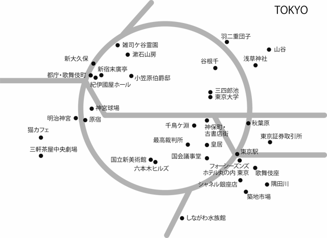
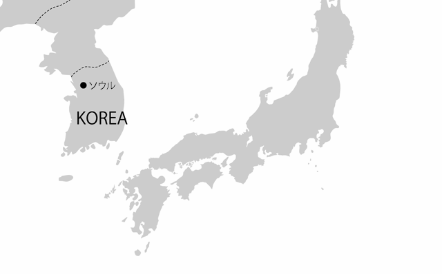
序章 都市で出会う他者と自分
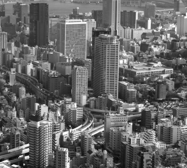
韓国・ソウル
あなたの
正体は
何ですか？
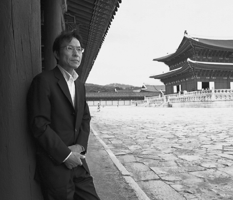
昌 徳 宮 〈取材メモへ〉
ソウルで気づいたのは、〝本当の自分〟は、すでに自分の中にあるということでした
ここ数年、年に２〜３回はソウルを訪れています。東京大学とソウル大学との交換講義のために半月ほど滞在することもあれば、取材で慌ただしく過ごすこともありますが、訪れるたびに、街が変わっていくのを感じています。
建物は近代化され、いたるところに横文字の〝ＳＥＯＵＬ〟が顔をのぞかせています。たとえば清渓川 はソウルの変貌を最もよく表している場所のひとつでしょう。
市内を流れる小さな人工の川で、今やソウルっ子たちの憩いの場所となっていますが、ここはかつて暗 渠 でした。川の上に大きな高速道路がかかっていて、汚染された暗いどぶ川になっていました。それを２００５年、高速道路をとっぱらい、漢 江 から水をくみ出して、人工の川を造ったのです。
かつては清渓川に沿って、店ともいえないような粗末なバラックが立ち並んでいたことを思うと、今の光景は夢のようです。子ども連れの家族が水遊びをしているかと思えば、川べりで若いカップルが人目もはばからず抱き合ったりしている。
最近は、こうした若者の大胆な行動にも驚かされます。韓国はもともと儒教の国ですから、旧 い世代の人たちは苦々しく思っているでしょうが、私自身はこれこそ平和のなせるわざだなぁとほほえましく思っています。
変わっていくソウルがある一方、変わらないソウルもあります。
ソウルに来ていつも思うのは、人々の生々しいノイズや荒々しい息づかい――これを肌で感じることです。ソフィスティケイトされた東京と比べると雑然としているけれど、ある種の生命力に満ちている。皆さんも韓国に旅行すると、そんな印象を受けるのではないでしょうか。
大都市というのは、その国の姿が最も率直に表れる場所だと思いますが、ソウルでは生き物として都市が発汗したり、あるいは涙を流したりするのを比較的リアルに感じることができるのです。その背景にあるのは、この国が抱えている歴史的なきしみです。さまざまな圧制や差別を受けた受難の歴史が、不協和音を起こしながら息づいている街。それがソウルという都市なのだと思います。
その印象は昔から変わっていません。私が最初にソウルを訪れたのは１９７１年、21 歳のときでした。
ご存じの方もいると思いますが、私は在日二世として熊本で生まれ育ちました。大学生まで「永野鉄男」という日本名をずっと使っていました。自分が在日韓国人であるという意識は持っていましたが、それを周囲に打ち明けることのないまま、10 代を過ごしていたのです。
しかし東京で大学生活を送るなか、自分は日本人ではないのだということを痛切に感じる出来事にいくつか直面し、私のアイデンティティは揺らぎました。
自分は日本人なのか、韓国人なのか――その答えを切望しながらも、そのどちらにもなりきれず、どちらにもなじめない。そんなアンビバレントな感情を抱えていたのです。
初めて韓国を訪れたのは、そんなときです。ソウルにいた叔父に招かれたのですが、初めて見たもうひとつの〝祖国〟の姿は衝撃的でした。
当時の韓国は朴 正熙 の独裁政権下でしたから、街全体がのたうちまわっていたのだと思います。軍による強権的な支配のもと、ソウルには暗い雰囲気が漂っていました。弁護士をしていた叔父の暮らしは裕福でしたが、貧富の差が激しく、一歩外に出ると、街は混沌としていました。
雨が降ったあとの泥水で女性が洗濯をしていたり、ボロを着たはだしのストリートチルドレンが物ごいをしていたり。また人々が食べたり飲んだりするのと同じように、汚物を吐き出していたり。たとえていうと洋服も全部はだけて、血管や神経がもろに浮き出てドクドクいっている。そんな感じです。五感で感じられるあらゆるものが、なんの化粧も施されないで、あらわになっている。
こうした光景が目の前に、巨大な塊のように現れて、僕は圧倒され、たじろぎ、言葉を失いました。日本で生まれ育った自分には、やはり韓国のことはよくわからない、と暗 澹 たる気持ちになったのです。
しかし同時に感じたのは、どこか「懐かしい」という気持ちでした。在日の集落で育った僕には、似たような喧騒の記憶が残っていたのでしょう。それがどっと洪水のように押し寄せてきたのです。
日本にいたときには、しまい込んでおかないといけないと思っていたむき出しの感覚。しかしそれをもっと自然にストレートに表現してもいいという解放感を味わったのです。ソウルの街のノイズをシャワーのように浴びるうちにその思いは強くなり、あるがままの自分を受け入れてみようという気になったのです。
当時、叔父の事務所は清渓川の近くにありました。現在の東亜日報のガラス張りのビルの近くです。韓国へ渡って１カ月ほどしたある日の夕方、事務所の向かいにあった喫茶店で、家路を急ぐ人の流れをぼんやりと眺めていたとき、私の胸にはなんともいえない思いが込み上げてきました。
ここにも日本と同じ夕日がある、どこにでも同じように人の暮らしがあるんだという素朴な感動です。なにかかまえて硬くなっていた心が、静かにほぐれていくのを感じました。夕日に染まるソウルを僕は心から愛しいと思いました。
こうしたソウルでの〝自分探し〟の果てに、僕は「姜尚中」という名前を名乗る決心をしたのです。
当時を振り返ると、あのころの私は、「今の自分は偽りの自分だ」
「本当の自分がどこかほかにあるんだ」と思っていました。しかしそうではなかった。ソウルで気づいたのは〝本当の自分は、すでに自分の中にある〟ということでした。そして、それが見つけられなかったのは自分自身がそれに気づこうとしなかったから。自分がそれに目を閉ざしていたからでした。
皆さんのなかにも、たぶん「自分探し」をしている人はいるでしょう。でも〝本当の自分〟なんてないのです。あるのは、今そこにある自分だけです。だから大切なことは、まずはありのままの自分に気づくこと。そして自分の中の矛盾を抱えたまま、すべてを引き受けること。「自分探し」の旅に必要なのは、その覚悟と胆力なのです。
いくつもの自分を受け入れることで、自分の新しい可能性を発見できるのです
日本と韓国という二つの祖国の間で揺れ動いた末、「永野鉄男」という日本名から「姜尚中」に名前を変える決断をしたわけですが、それで私は確固たるアイデンティティを得られたのか？ 残念ながら答えはノーです。そんな単純ではなかった。期待とは裏腹に、そのことは逆に僕の中に矛盾を作り出していくことになったのです。
そもそも〝アイデンティティ〟（セルフ・アイデンティティ ）とは何なのでしょうか。簡単にいうと「自分とは何者であるか」ということですが、実は韓国語では、アイデンティティは〝正体性〟を意味します。人間はいくつもの仮面、ペルソナをかぶっていて、その仮面をはぐと、その人の正体が見えてくるというわけです。
一方、日本では〝（自己 ）同一性〟と理解されています。本来の語義からいうとこちらが近いかもしれません。つまり「自分が何者であるか」ということは、何かと一致することで明確になるという考えです。
たとえば「女性であればこうである」「日本人であればこうである」というサムシングがあって、そのサムシングに近いか、遠いか、逸脱しているか。それによって自分のアイデンティティが測られる。
しかし最近私が思うのは、〝正体性〟にも〝同一性〟にも、あまり縛られないほうがいいんではないかと。なぜなら人間には、いくつもの〝顔〟があって当然だし、同一性にこだわると、実は非常に窮屈で、なにか金縛りにあったようになってしまうからです。
私がまだ「永野鉄男」だったとき、よく在日の人たちに言われました。「これはきみ、偽りの生き方なんだ」と。「われわれには悠久の歴史を持った民族の立派な名前があるじゃないか」と。
私自身も当時はそう感じていました。「永野鉄男」という名前は、まさしく私の正体を隠す〝化けの皮〟で、それを脱ぎ捨てれば自分の正体が見えてくると思っていた。
でも、よく考えると、それはおかしな話です。私はそれまでずっと「永野鉄男」で生きてきて、その中で多くの人たちと出会ってきた。「永野鉄男」こそが自分そのものだったともいえるのです。実際、両親は亡くなるまで私のことを「テツオ」と呼んでいました。
だからアイデンティティというのは、いくつもの面を持っているということです。どれが偽りで、どれが本物か、そう簡単に決めつけられるものではありません。〝私〟にはいくつもの顔があるし、日本にはいくつもの日本があるし、韓国にはいくつもの韓国がある。どんな個人も、どんな国民も、いくつもの正体を抱えているのです。
そうした複数性に目覚め、それを受け入れていくことで、自分の中にいくつもの自分を発見していく――それが「アイデンティティの作法」だと私は思います。
受け入れるというのは、消極的なあきらめとは違います。葛藤や積極的な働きかけの果てに、それを許容していくことです。その結果、新しい自分に出会うのだから、これってある意味、ものすごくスリリングですよね。
だから逆に同一性の中でまどろんでいる人は、意外と退屈な人生を送っているのではないでしょうか。そして一見、安定しているようで、実は自分の中に存在する可能性を捨て去っているのです。
私自身がそうでした。「永野鉄男」を捨てて、にわかナショナリストにせっせとなろうとしたとき、自分自身を狭い路地の中に追い込んでいたのです。強そうに見えて、非常に狭量で、世界が見えていなかった。他者が入り込んでくるすき間もなかった。もしそのままだったら自分の中の新しい発見を自ら閉ざしていくことになったと思います。
私たちには「本来の私」というものにしがみつきたがる傾向があります。「本来の日本人だったら、こんなことはしない」「本来、女性であったら、こうでなくてはならない」なんてことを言う。でも、それは虚構なんじゃないかと疑ってみることが大事です。
確かに固定化されていると表面的には安心ですが、それによって変化の流れをせき止めてしまうことになり、逆に変化に臆病になって、不安を大きくしてしまう。古代ギリシャのヘラクレイトスは「万物は流転する」と言いましたが、実は人間の心は流れていたほうが自然なのです。
ところが今の時代、「不動の自分」とか「確固たるアイデンティティ」というものが羨望の的になっていますよね。なぜならこれほど不確実な時代もないからです。変化の渦中にあって、人々が変わらないものを切望しているのでしょう。
しかし実際は、確実な安定が得られるわけではありません。その結果、自分が抱えている不安や憤 懣 が、他者への否定的なエネルギーとなって吐き出されていくことになりかねません。「あいつは最低だ」「あいつよりはマシだ」という他者蔑視、他者バッシングによって、強い自分を手に入れようとする。これは今の時代が抱える大きな問題です。
結局、みんな自信を持ちたいということです。その裏返しとしていえることは、みんなが不安を抱えているということです。しかしその不安の中にこそ、新しい可能性があると思ってほしい。つまり自分はさまざまな可能性を秘めた〝お宝〟なんだということです。だから自信がないことを否定しなくてもいい。それはそれで受け入れていけばいいのです。
そしてそれを可能にしてくれる場所が〝都市〟ではないでしょうか。
人は自分の知らない他者と交じり合うことで、自分の新しい正体に目覚めるものです。そのとき、自分の中に自分が忌み嫌う他者を見つけることもあるかもしれません。しかしそれを受け入れることで、他者はとても身近な存在となるのです。
都市とはまさしくそういう他者に出会う場所なのだと思います。「都市は人間を自由にする」という言葉がありますが、それはいろいろな背景や過去を背負ってきた人間を受容することで、都市が築かれているからです。
そして、そこで暮らす人も、またお互いがそれを受容していく。「都市で生きる」とは、そういうことなのだと思っています。
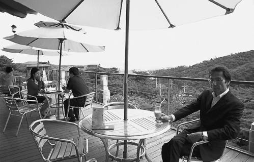
三 清 閣 〈取材メモへ〉
＊この続きは製品版でお楽しみください。
集英社ｅ単行本
トーキョー・ストレンジャー
姜尚中
『悩む力』『在日』など数々のベストセラーを生み、テレビでも活躍する気鋭の政治学者である著者。東京に出てきて40 年、やっと「トーキョー」に心を許し、ストレンジャーとなって「トーキョー」を楽しむことができるようになったという。「都市とは自分の正体を目覚めさせてくれる場所である」という確信のもとに東京各所を探訪。明治神宮や浅草など歴史の息づく街から、六本木や銀座など現代の欲望がダイレクトに渦巻く街まで、その土地を通して人生、文化、日本、未来ｅｔｃを熱く語った、すべての現代人への応援メッセージ。若者には著者の書籍のエントリー本として、愛読者には新鮮で軽快なエッセイとして愛される１冊。
集英社ｅ新書
悪の力
姜尚中
現代人を苦しめる「悪」はどこから生まれるのか。そして、心の奥底から湧き上がる「憎しみの感情」とどう向き合えばいいのか。100 万部のベストセラー『悩む力』の著者が、最大級の難問に挑む。
紙の書籍は大好評発売中！ 電子版11 月下旬予定（詳しい配信予定日は「ｅ！集英社」ＨＰ（ebooks.shueisha.co.jp）をご覧くださいませ。※２０１５年９月18 日現在）
集英社電子書籍ガイド２０１５ 姜尚中編
著者 集英社デジタル出版室・編
© 集英社デジタル出版室 2015
２０１５年９月30 日発行
発行者 加藤 潤
発行所 株式会社 集英社
東京都千代田区一ツ橋２丁目５番10 号
〒１０１－８０５０
［電話］
０３－３２３０－６０８０（読者係）
制作所 株式会社ＩＣＥ
本作品の全部また一部を無断で複製、転載、改竄、インターネット上に掲載すること、および有償無償に関わらず、本データを第三者に譲渡することを禁じます。なお個人利用の目的であっても、コピーガードを解除しての複製は、法律で禁じられています。
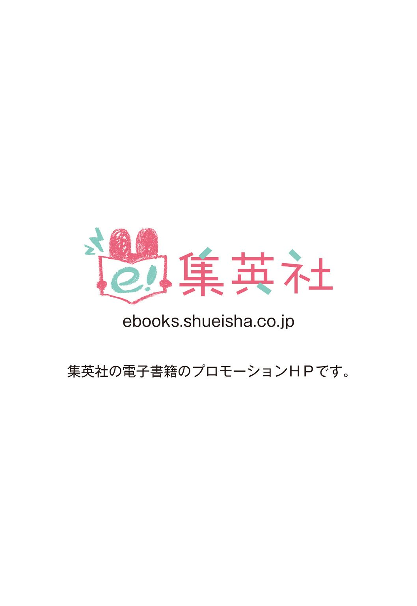